The Angular Book
by Denys Vuika, with contributions from the Angular Community
This is the second and online edition of the Developing with Angular book.
Note: this book is still in progress.
Introduction
In the first few chapters, we are going to dwell on the basics you may need to understand Angular development better later on.
We are going to start with the main ES6 (ECMAScript 2015) features you should come across frequently when using TypeScript.
Next, the most remarkable TypeScript features you should get familiar before starting the Angular development.
After that, we are covering the Angular framework and supplemental toolings, like Angular CLI (Command Line Interface) and Webpack.
Finally, you should expect many practical topics that are addressing specific application requirements and scenarios, including those coming from the community requests.
Book progress
You can see the progress of the writing on this GitHub board. Be sure to check the board if you want to see what's coming next or what is in progress right now.
Code examples
You can find all code examples in this GitHub repository: angular-book. The source code gets frequently revisited and updated.
Feedback, Bug Reports and Suggestions
If you have noticed a typo in the text or a bug in the code examples, please don't hesitate and contact me using the next email address: denys.vuika@gmail.com
You are also invited to raise issues for the source code and examples using corresponding issue tracker at GitHub.
Feel free to raise feature requests and suggestions on what you would like to see next.
Other publications
You can find many other interesting publications at my Blog.
Testimonials
Your feedback on the book content is very appreciated. I would love to publish your photo and testimonial on the web page of the book. Email me at: denys.vuika@gmail.com.
Prerequisites
In this chapter, we are going to configure the following applications and libraries:
- Node.js
- Visual Studio Code
Node.js
Node.js is a JavaScript runtime built on Chrome's V8 JavaScript engine. Node.js uses an event-driven, non-blocking I/O model that makes it lightweight and efficient. Node.js' package ecosystem, npm, is the largest ecosystem of open source libraries in the world.
Navigate to the main page, download installer for your platform and follow setup instructions.
You can use the following commands to test current versions of the Node and NPM on your machine:
node -v
# v14.16.0
npm -v
# 6.14.11
Please note that the actual versions may differ.
Visual Studio Code
Visual Studio Code is a source code editor developed by Microsoft for Windows, Linux and macOS. It includes support for debugging, embedded Git control, syntax highlighting, intelligent code completion, snippets, and code refactoring.

Recommended extensions
Integrates the tslint linter for the TypeScript language into VS Code.
Launch VS Code Quick Open (⌘+P), paste the following command, and press enter.
ext install tslint
Integrates ESLint into VS Code. See project page for more details.
ext install vscode-eslint
EditorConfig Support for Visual Studio Code
ext install EditorConfig
Hiding files
This step is optional.
In the code go to the Preferences -> Workspace Settings and paste the following settings into the opened file:
{
"files.exclude": {
"**/.git": true,
"**/.DS_Store": true
}
}
You can extend the list with the files, extensions or directories based on your preferences.
ES6
ECMAScript 2015 (also known as ES6 and often referred to as Harmony) is the 6th major release of the ECMAScript language specification.
I am going to cover the most important features here to get you started with ES6 and then be able moving to TypeScript and Angular faster.
Classes
The class syntax in JavaScript is not a new object-oriented inheritance model
but simply a syntactical sugar on top of the existing prototype-based inheritance.
Traditionally we have been using standard Objects and Prototypes like shown below:
var Widget = function(id, x, y) {
this.id = id;
this.setPosition(x, y);
}
Widget.prototype.setPosition = function(x, y) {
this.x = x;
this.y = y;
}
With class syntax developers get more natural and boilerplate-free result:
class Widget {
constructor(id, x, y) {
this.id = id;
this.setPosition(x, y);
}
setPosition(x, y) {
this.x = x;
this.y = y;
}
}
The constructor function is automatically called when you create a new instance of Widget:
const myWidget = new Widget(1, 10, 20);
Inheritance
The extends keyword is used to define a class as a child of another class.
The following example demonstrates inheritance in practice:
class TextBox extends Widget {
constructor (id, x, y, text) {
super(id, x, y);
this.text = text;
}
}
We created a new TextBox class that is based on the Widget and adds additional text property.
Note that a base Widget constructor must also be called when a child class instantiated. It must be the very first line of the child constructor implementation.
Here's another example:
class ImageBox extends Widget {
constructor (id, x, y, width, height) {
super(id, x, y);
this.setSize(width, height);
}
setSize(width, height) {
this.width = width;
this.height = height;
}
reset() {
this.setPosition(0, 0);
this.setSize(0, 0);
}
}
ImageBox also inherits Widget class and adds size-related information alongside position.
Access to both classes is demonstrated with the reset function that calls Widget.setPosition and ImageBox.setSize functions.
Arrow Functions
ES6 offers a shorter syntax for a function expression called arrow function, also known as fat arrow function.
Arrow functions provide more expressive closure syntax, simplify function scoping and change the way this is handled.
Expression Bodies
When used as expressions bodies arrow functions work much like anonymous one-line lambdas that you can meet in many programming languages.
Let's filter a book collection to find something to read using both ES5 and ES6 to see the difference:
var books = [
{ name: 'Book 1', read: true },
{ name: 'Book 2' , read: false },
{ name: 'Book 3', read: true }
];
// ES5
var booksToRead = books.filter(function (b) { return !b.read });
// ES6
var booksToRead = books.filter(b => !b.read);
Curly brackets and return statement are not required if only one expression is present.
You could write the same example like following:
// ES6
let booksToRead = books.filter(b => { return !b.read; });
Statement Bodies
Arrow functions provide more expressive closure syntax.
// ES6
// list the books I've read
books.forEach(book => {
if (book.read) {
console.log(book.name);
}
});
And another example using DOM:
// ES6
let button = document.getElementById('submit-button');
button.addEventListener('click' () => {
this.onButtonClicked();
});
Parameterless arrow functions are much easier to read
// ES6
setTimeout(_ => {
console.log('First callback');
setTimeout(_ => {
console.log('Second callback');
}, 1);
}, 1);
Lexical this
One of the best features of arrow functions in ES6 is the more intuitive handling of current object context. These function expressions do not bind their variables:
- arguments
- super
- this
- new.target
// ES6
this.books.forEach(b => {
if (!b.read) {
this.booksToRead.push(b);
}
});
There are multiple ways of doing the same with ECMAScript 5, and all of them involve manual context management
// ES5: using 'bind()'
this.books.forEach(function(b) {
if (!b.read) {
this.booksToRead.push(b);
}
}).bind(this);
// ES5: referencing 'this' via variables
var self = this;
this.books.forEach(function(b) {
if (!b.read) {
self.booksToRead.push(b);
}
});
// ES5: passing context if supported
this.books.forEach(function(b) {
if (!b.read) {
this.booksToRead.push(b);
}
}, this);
As arrow functions do not create and bind their own this context the following code is concise and works as expected:
// ES6
function ProgressBar() {
this.progress = 0;
setInterval(() => {
this.progress++;
}, 1000);
}
const p = new ProgressBar();
In the example above this properly refers to the ProgressBar object.
Before ES6 you would most probably additional variables like self, that, and other.
// ES5
function ProgressBar() {
var self = this;
self.progress = 0;
setInterval(function () {
self.progress++;
}, 1000);
}
Template Literals
Template Literals (formerly called "template strings" in prior drafts of the ECMAScript 6 language specification) are string literals providing intuitive expression interpolation for single-line and multiline strings.
You use backticks to enclose a string literal and ${} to interpolate JavaScript variables or arbitrary expressions
// ES6
let point = { x: 10, y: 20 };
console.log(`Position is ${point.x}:${point.y}`);
// output: Position is 10:10
With ES5 you have to concatenate strings when dealing with multiple lines:
// ES5
var title = 'Title'
var component = {
template: '' +
'<h1>' + title + '<h1>\n' +
'<div class="grid">\n' +
' <div class="col-6"></div>\n' +
' <div class="col-6"></div>\n' +
'</div>'
}
Multi-line string creation with template literals becomes very clean and readable:
// ES6
let title = 'Title';
let component = {
template: `
<h1>${title}</h1>
<div class="grid">
<div class="col-6"></div>
<div class="col-6></div>
</div>
`
}
Extended Parameter Handling
ES6 brings improvements to parameter handling by introducing default values, rest parameter and spread operator.
Default Parameter Values
Simple and intuitive default values for function parameters.
// ES6
function playSound(file, volume = 50) {
console.log(`Playing '${file}' with volume ${volume}.`);
}
playSound('test.mp3');
// Playing 'test.mp3' with volume 50.
playSound('test.mp3', 70);
// Playing 'test.mp3' with volume 70.
With ES5 you have to check every parameter to be undefined and setting defaults manually if needed.
// ES5
function playSound(file, volume) {
if (volume === undefined) {
volume = 50;
}
console.log("Playing '" + file + "' with volume " + volume);
}
playSound('test.mp3');
// Playing 'test.mp3' with volume 50.
playSound('test.mp3', 70);
// Playing 'test.mp3' with volume 70.
So support for default parameter values is a huge step forward and real time saver.
Rest Parameter
In ES5, if you want your function to handle an indefinite or an arbitrary number of arguments,
you must use special arguments variable:
// ES5
function logMessages() {
for (var i = 0; i < arguments.length; i++) {
console.log(arguments[i]);
}
}
logMessages('Hello,', 'world!');
Which produces:
Hello,
world!
In ES6, you can aggregate all remaining arguments into a single function parameter
// ES6
function logMessages(...messages) {
for (const message of messages) {
console.log(message);
}
}
logMessages('Hello,', 'world!');
Also, that gives the same console output as before:
Hello,
world!
Rest parameters become even more valuable when you have one or more required parameters followed by an arbitrary number of additional parameters.
In the next example, the rest parameter is used to collect arguments from the second one to the end of the array.
// ES6
function greet(message, ...friends) {
for (const friend of friends) {
console.log(`${message}, ${friend}!`);
}
}
greet('Hello', 'John', 'Joan', 'Bob')
The function above allows you to set the greeting message as the first parameter and array of friend names to generate messages. The console output, in this case, should be:
Hello, John!
Hello, Joan!
Hello, Bob!
Spread Operator
Spread operator is used to expand an iterable collection into multiple arguments.
// ES6
let positive = [ 1, 2, 3 ];
let negative = [ -1, -2, -3 ]
let numbers = [...negative, 0, ...positive];
console.log(numbers);
// [-1, -2, -3, 0, 1, 2, 3]
You can use spread operator even with strings:
// ES6
let message = 'Hello, world';
let chars = [...message];
console.log(chars);
// ["H", "e", "l", "l", "o", ",", " ", "w", "o", "r", "l", "d"]
Spread operator easily becomes an alternative to the Array.prototype.concat() method.
With ES5 the example above will look like the following:
// ES5
var positive = [ 1, 2, 3 ];
var negative = [ -1, -2, -3 ];
var zero = [0];
var numbers = negative.concat(zero, positive);
console.log(numbers);
// [-1, -2, -3, 0, 1, 2, 3]
Destructuring Assignment
ES6 provides a way to extract values out of the objects or collections into the separate variables to access them easier in the code. That is often called "value unpacking" or "destructuring".
Basic example
As an example, you can extract a subset of values from the collection using the following format:
let [ <var1>, <var2> ] = <array>
Let's create an array of words and extract the first couple of them into separate variables "first" and "second" like in the code below:
// ES6
let words = [ 'this', 'is', 'hello', 'world', 'example' ];
let [ first, second ] = words;
console.log(first); // 'this'
console.log(second); // 'is'
As you can see from the example above, you can extract a subset of an array and split it into multiple variables.
Without destructuring your code might look like the following:
// ES5
var words = [ 'this', 'is', 'hello', 'world', 'example' ];
var first = words[0];
var second = words[1];
console.log(first); // 'this'
console.log(second); // 'is'
Array destructuring
You have already seen some of the array destructuring examples earlier in the section. We enclose variables in square brackets using the following syntax:
let [ <var1>, <var2> ] = <array>
Please note that you can also apply the same destructuring technique to the function call results:
// ES6
function getWords() {
return [ 'this', 'is', 'hello', 'world', 'example' ];
}
let [ first, second ] = getWords();
console.log(`${first} ${second}`); // 'this is'
In addition to basic unpacking and variable assignment, several other things bring much value and reduce the code.
Value assignment
The destructuring syntax can be used to assign values to variables instead of extracting them. Take a look at the following example:
// ES6
let first, second;
[ first, second ] = [ 'hello', 'world' ];
console.log(first); // 'hello'
console.log(second); // 'world'
Default values
Another great feature of the array destructuring is default values. There might be cases when the array has no values, and you want to provide some reasonable defaults.
The format of the syntax, in this case, is as follows:
let [ <variable> = <value> ] = <array>
Let's see this feature in action:
// ES6
let words = [ 'hello' ];
let [ first = 'hey', second = 'there' ] = words;
console.log(first); // 'hello'
console.log(second); // 'there'
The array we got initially does not contain two words. We are trying to extract first two variables from it, and set 'hey' as the default value for the first word, and 'there' as a default for the second one. At the runtime however only second variable stays with the default value.
Default value assignment is a compelling feature that helps you reduce the code for variable initialization and safety checks. Below is how the same code could look like in ES5:
// ES5
var words = ['hello'];
var first = words[0];
if (!first) {
first = 'hey';
}
var second = words[1];
if (!second) {
second = 'there'
}
console.log(first); // 'hello'
console.log(second); // 'there'
Swapping values
Traditionally to swap two variables, developers need a third temporary one to hold the value of either first or second variable.
// ES5
var first = 'world';
var second = 'hello';
var temp = first;
first = second;
second = temp;
console.log(first + ' ' + second); // 'hello world'
With ES6 you can now reduce the code by using destructuring assignment syntax to swap variables in a single line like in the next example:
// ES6
let first = 'world';
let second = 'hello';
[ first, second ] = [ second, first ];
console.log(`${first} ${second}`); // 'hello world'
This feature may be a great time saver when it comes to sorting functions.
Skipping values
We have been using examples that take the beginning of the array so far.
The ES6 does not restrict you to that only scenario; it is also possible skipping values when unpacking or destructuring arrays.
let [ <variable-1>, , , , <variable-X> ] = <array>
You can just put the commas instead of variables like in the example below:
let words = [ 'this', 'is', 'hello', 'world', 'example' ];
let [ first, second, , , last ] = words;
console.log(`${first} ${second} ${last}`); // 'this is example'
Grouping tail values into a single variable
As you see, the ES6 allows you to unpack the head of the array into separate variables. Sometimes you may want to access the tail of the array as a single variable as well.
For this particular case, there's a special syntax that utilizes ES6 "rest" parameters.
let [ <variable1>, <variable2>, ...<restVariable> ] = <array>
We use "rest parameter" to define a variable to hold the tail of the array and below is an example of how to achieve this behavior:
let command = [ 'greet', 'user1', 'user2', 'user3' ];
let [ action, ...users ] = command;
console.log(action); // 'greet'
console.log(users); // [ 'user1', 'user2', 'user3' ]
Object destructuring
Besides arrays and collections, you can use destructuring assignment syntax with the object instances as well.
We enclose variables in curly brackets using the following syntax:
let { <var1>, <var2> } = <object>
Unpacking properties
ES6 allows you to extract properties by their names similar to how to unpack arrays.
Let's try to unpack a couple of properties from a user object:
let obj = {
id: 1,
username: 'jdoe',
firstName: 'John',
lastName: 'Doe'
};
let { id, username } = obj;
console.log(id); // '1'
console.log(username); // 'jdoe'
Renaming properties
You can also give destructured property an alias if you want to use it as a variable with a different name.
The syntax, in this case, is going to be as follows:
let { <property> : <alias> } = <object>;
Let's now rewrite our previous example to use custom property names.
let obj = {
id: 1,
username: 'jdoe',
firstName: 'John',
lastName: 'Doe'
};
let { id: uid, username: login } = obj;
console.log(uid); // '1'
console.log(login); // 'jdoe'
We are using "uid" and "login" instead of "id" and "username" properties this time.
Default values
When applying property destructuring to the object properties, you can provide default values for missing properties. That saves time for property checks and reduces coding efforts.
let { <variable> : <value> } = <object>
For example, let's provide a default value for the "id" property and also unpack the property "role" that does not exist for the given object, and set it to be "guest" by default.
let obj = {
id: 1,
username: 'jdoe',
firstName: 'John',
lastName: 'Doe'
};
let { id = 0, role = 'guest' } = obj;
console.log(id); // '1'
console.log(role); // 'guest'
Unpacking methods
You can extract object methods into separate variables and use them as shortcuts:
let { log } = console;
log('hello world');
The example above demonstrates a "console.log" method being extracted into the "log" variable and used separately.
We utilise the following syntax:
let { <method> } = <object>
Next, let's create a custom class and export multiple methods:
// ES6
class MyClass {
sayHello(message) {
console.log(`Hello, ${message}`);
}
sayBye(message) {
console.log(`Bye, ${message}`);
}
}
let myClass = new MyClass();
let { sayHello, sayBye } = myClass;
sayHello('how are you?'); // 'Hello, how are you?'
sayBye('see you soon.'); // 'Bye, see you soon'
Renaming methods
You can also rename destructured methods if needed. The following syntax should be used to give the unpacked method a custom name:
let { <method> : <alias> } = <object>
Let's update the "MyClass" we used earlier and rename "sayHello" and "sayBye" methods to just "hello" and "bye":
let myClass = new MyClass();
let { sayHello: hello, sayBye: bye } = myClass;
hello('how are you?'); // Hello, how are you?
bye('see you soon'); // Bye, see you soon
Using with function parameters
The best scenario for using destructuring with objects and functions is default parameter values and options.
First, let's reproduce the most common use case for the "options" parameter passed to a function or object member:
// ES5
function showDialog(options) {
options = options || {};
var message = options.message || 'Unknown message';
var size = options.size || { width: 400, height: 400 };
var position = options.position || { x: 200, y: 300 };
console.log('message: ' + message);
console.log('size: ' + size.width + ':' + size.height);
console.log('position: ' + position.x + ':' + position.y);
}
Above is the simplified version of the custom options management that has been very popular for years. We provide a JavaScript object as an "options" parameter, and function does parsing and detecting missing properties to initialize default values if needed.
Depending on the size of the options object there might be many checks just to set the default values for them. Especially if there are nested objects with own properties, like "size" and "position" in our case.
Now, if you call the "showDialog" function with no parameters except the "message" value, the output should be similar to the following one:
showDialog({
message: 'hello world'
});
// message: hello world
// size: 400:400
// position: 200:300
Next, try to call the same function with a partial set of options, for instance, the "size" settings:
showDialog({
message: 'hey there',
size: { width: 200, height: 100 }
});
// message: hey there
// size: 200:100
// position: 200:300
Now you can rewrite the "showDialog" implementation to use destructuring with default values like in the next example:
// ES6
function showDialog({
message = 'Message',
size = { width: 400, height: 400 },
position = { x: 200, y: 300 } }) {
console.log(`message: ${message}`);
console.log(`size: ${size.width}:${size.height}`);
console.log(`position: ${position.x}:${position.y}`);
}
Notice how we use the destructuring assignment syntax to declare a function parameter.
showDialog({
message: 'hey there',
size: { width: 200, height: 100 }
});
// message: hey there
// size: 200:100
// position: 200:300
IDE support
Many modern IDEs already provide support for destructuring syntax within function or method parameters. VS Code, for instance, provides auto-completion both for function calls and for nested properties.

Modules
Before ES6 developers traditionally were using Revealing Module pattern to emulate modules in JavaScript.
The basic concept of a Revealing Module is that you use closures (self-invoking functions)
with an Object which encapsulates its data and behavior.
// ES5
var Module = (function() {
var privateMethod = function() {
// do something
console.log('private method called');
};
return {
x: 10,
name: 'some name',
publicMethod: function() {
// do something
console.log('public method called');
privateMethod();
}
};
})();
Module.publicMethod()
You should get the following output to browser console:
public method called
private method called
I recommend also reading an excellent article "Mastering the Module Pattern" by Todd Motto to get deep coverage of Revealing Module pattern in JavaScript.
The rise of module systems based on either AMD or CommonJS syntax has mostly replaced revealing modules and other hand-written solutions in ES5.
Exporting and Importing Values
ECMAScript 6 provides a long-needed support for exporting and importing values from/to modules without global namespace pollution.
// ES6
// module lib/logger.js
export function log (message) { console.log(message); };
export var defaultErrorMessage = 'Aw, Snap!';
// myApp.js
import * as logger from "lib/logger";
logger.log(logger.defaultErrorMessage);
// anotherApp.js
import { log, defaultErrorMessage } from "lib/logger";
log(defaultErrorMessage);
Here's how the same approach would look like if written with ECMAScript 5:
// ES5
// lib/logger.js
LoggerLib = {};
LoggerLib.log = function(message) { console.log(message); };
LoggerLib.defaultErrorMessage = 'Aw, Snap!';
// myApp.js
var logger = LoggerLib;
logger.log(logger.defaultErrorMessage);
// anotherApp.js
var log = LoggerLib.log;
var defaultErrorMessage = LoggerLib.defaultErrorMessage;
log(defaultErrorMessage);
Default Values
You can make your ES6 module exporting some value as default one.
// ES6
// lib/logger.js
export default (message) => console.log(message);
// app.js
import output from 'lib/logger';
output('hello world');
Wildcard Export
Another great feature of ES6 modules is support for wildcard-based export of values. That becomes handy if you are creating a composite module that re-exports values from other modules.
// ES6
// lib/complex-module.js
export * from 'lib/logger';
export * from 'lib/http';
export * from 'lib/utils';
// app.js
import { logger, httpClient, stringUtils } from 'lib/complex-module';
logger.log('hello from logger');
See also
TypeScript
TypeScript is a typed superset of JavaScript that compiles to plain JavaScript.
npm install -g typescript
Getting Started with TypeScript
Installing TypeScript
npm install -g typescript
Using tsc
In your code editor create a file logger.ts with the following content:
function log(message) {
console.log(message);
}
log('Hello, world!');
Now you can use a command line to compile your source code to ES5 with tsc tool and run it with node.js:
tsc logger.ts
node logger.js
TypeScript compiler takes logger.ts file, processes it and produces a JavaScript output to logger.js.
At this point, the .js file is ready to be used with an HTML page or executed by node.js.
You should see the following output in the command line:
Hello, world!
Now let's see how type validation works.
Add string type annotation for the log function and call it with a number.
function log(message: string) {
console.log(message);
}
log(0);
If you compile logger.ts once again tsc should produce an error:
tsc logger.ts
> logger.ts(5,5): error TS2345: Argument of type '0' is not assignable to parameter
of type 'string'.
Typings
Linting
TSLint
TSLint checks your TypeScript code for readability, maintainability, and functionality errors.
npm install -g tslint
TypeScript Features
Types
TypeScript supports all the types used in JavaScript:
- boolean
- number
- string
- arrays
TypeScript also adds the following types:
- enum
- any
- void
Basic Types
Boolean
The most basic datatype is the simple true/false value, which JavaScript and TypeScript call a boolean value.
let isEnabled: boolean = true;
Assigning non-Boolean value to the variable will produce an error.
isEnabled = 'YES';
// logger.ts(2,1): error TS2322: Type '"YES"' is not assignable to type 'boolean'.
It is also possible annotating function or method return types.
function isEmpty(str: string): boolean {
return !str;
}
Number
TypeScript maps all JavaScript numbers to the number type:
- floating point numbers (default JavaScript type for all numbers)
- decimal numbers
- hexadecimal numbers
- binary literals (ES6)
- octal literals (ES6)
Here's an example:
let decimal: number = 6;
let hex: number = 0xf00d;
let binary: number = 0b1010;
let octal: number = 0o744;
String
Typescript supports ES6 template literals (formerly known as template strings).
As in ECMAScript 6, you use backticks (`) to enclose a string literal and ${} to interpolate JavaScript variables or arbitrary expressions.
Either double quotes (") or single quotes (') can be used to surround string data.
let firstName: string = "Joan";
let lastName: string = 'Doe';
let fullName: string = `${firstName} ${lastName}`;
let template: string = `
<h1>Title<h1>
<p>Hello, ${fullName}</p>
`;
Arrays
There are two main ways you can provide type definition for arrays of values in TypeScript:
let arr1: string[] = [];
let arr2: Array<string> = new Array();
You can also initialize arrays upon declaring them:
let arr1: string[] = ['hello', 'world'];
let arr2: Array<string> = ['hello', 'world'];
let flags1: boolean[] = [true, false, true, false];
let flags2: boolean[] = new Array(false, true);
As in JavaScript arrays, you can push elements and access them by index
let users: string[] = [];
users.push('user1');
console.log(`First user: ${users[0]}`);
The sample above demonstrates array element access together with string interpolation. When executed it should produce:
First user: user1
Enum
TypeScript provides support for an enumerated type known in many languages (Swift, C#, Java, C, and others). This data type consists of a set of named values mapped to numbers.
enum Suit { Club, Diamond, Heart, Spade };
let s: Suit = Suit.Spade;
By default numbering of enum members starts with 0 and increments by one. You have full control of the values if needed.
enum Suit { Club = 1, Diamond, Heart, Spade };
enum Suit { Club = 1, Diamond = 2, Heart = 4, Spade = 8 }
Another valuable feature is accessing by a numeric value.
enum Suit { Club, Diamond, Heart, Spade };
console.log(Suit[0]); // Club
It must be noted however that you access names by the numeric values, not by an array index as it may seem.
enum Suit { Club = 1, Diamond, Heart, Spade };
console.log(Suit[0]); // undefined
console.log(Suit[1]); // Club
Any
A special any type is used to opt-out of the TypeScript type-checking process and addresses the following cases:
- dynamic content (objects created on the fly)
- 3rd party libraries (having no TypeScript support via definition files)
let obj: any = {
log(message) {
console.log(message);
}
};
obj.log('hello world');
Please note that by opting-out of the type-checking process you take full responsibility for safety checks, as now TypeScript compiler is not able to verify the code at compile time.
The following example shows valid TypeScript code:
obj.log('hello world');
obj.helloWorld('log');
However, at runtime the second line causes a TypeError exception:
hello world
TypeError: obj.helloWorld is not a function
So it is recommended using any type only where necessary.
Void
The void type is used to declare a function does not return any value explicitly.
class Logger {
log(message: string): void {
console.log(message);
return true;
}
}
If you try compiling the code above you should get an error:
error TS2322: Type 'true' is not assignable to type 'void'.
You can fix the type-check error by removing return statement from the log method:
class Logger {
log(message: string): void {
console.log(message);
}
}
You might also be using void types as function parameters or with Interfaces:
function fn(x: () => void) {
x();
}
interface Logger {
log(message: string): void;
warn(message: string): void;
error(message: string): void;
}
You will get more information on Interfaces later in this book.
Classes
TypeScript provides support for classes introduced with ES6 (ECMAScript 2015) and adds a set of features to improve object-oriented development.
class Widget {
id: string;
constructor(id: string) {
this.id = id;
}
render() {
console.log(`Rendering widget "${this.id}"`);
}
}
let widget = new Widget('text1');
widget.render();
You should get the following output when executed:
Rendering widget "text1"
Properties
With ES6 you define class properties from with the class constructor:
// ES6
class Widget {
constructor(id) {
this.id = id;
this.x = 0;
this.y = 0;
}
}
If you try compiling example above with tsc utility (TypeScript compiler) you should get the following errors:
error TS2339: Property 'id' does not exist on type 'Widget'.
error TS2339: Property 'x' does not exist on type 'Widget'.
error TS2339: Property 'y' does not exist on type 'Widget'.
The errors are raised because TypeScript requires you to define properties separately. It is needed to enable many other features TypeScript provides.
class Widget {
id: string;
x: number;
x: number;
constructor(id: string) {
this.id = id;
this.x = 0;
this.y = 0;
}
}
Properties in TypeScript can have default values:
class Widget {
id: string;
x: number = 0;
x: number = 0;
constructor(id: string) {
this.id = id;
}
}
Setters and Getters
TypeScript supports computed properties, which do not store a value. Instead, they provide getters and setters to retrieve and assign values in a controlled way.
TBD: describe get/set format
One of the common cases for a getter is computing a return value based on other property values:
class User {
firstName: string;
lastName: string;
get fullName(): string {
return `${this.firstName} ${this.lastName}`.trim();
}
constructor(firstName: string, lastName: string) {
this.firstName = firstName;
this.lastName = lastName;
}
}
let user = new User('Joan', 'Doe');
console.log(`User full name is: ${user.fullName}`);
If you save this example to file script.ts, compile it and run like shown below:
tsc --target ES6 script.ts
node script.js
You should see the output with the full username as expected:
User full name is: Joan Doe
Now let's introduce a simple setter for the firstName property.
Every time a new property value is set we are going to remove leading and trailing white space. Such values as " Joan" and "Joan " are automatically converted to "Joan".
class User {
private _firstName: string;
get firstName(): string {
return this._firstName;
}
set firstName(value: string) {
if (value) {
this._firstName = value.trim();
}
}
}
let user = new User();
user.firstName = ' Joan ';
console.log(`The first name is "${user.firstName}".`);
The console output, in this case, should be:
The first name is "Joan".
Methods
Methods are functions that operate on a class object and are bound to an instance of that object.
You can use this keyword to access properties and call other methods like in the example below:
class Sprite {
x: number;
y: number;
render() {
console.log(`rendering widget at ${this.x}:${this.y}`);
}
moveTo(x: number, y: number) {
this.x = x;
this.y = y;
this.render();
}
}
let sprite = new Sprite();
sprite.moveTo(5, 10);
// rendering widget at 5:10
Return values
class NumberWidget {
getId(): string {
return 'number1';
}
getValue(): number {
return 10;
}
}
You can use a void type if the method does not return any value.
class TextWidget {
text: string;
reset(): void {
this.text = '';
}
}
Method parameters
You can add types to each parameter of the method.
class Logger {
log(message: string, level: number) {
console.log(`(${level}): ${message}`);
}
}
TypeScript will automatically perform type checking at compile time.
Let's try providing a string value for the level parameter:
let logger = new Logger();
logger.log('test', 'not a number');
You should get a compile error with the following message:
error TS2345: Argument of type '"string"' is not assignable to parameter of type 'number'.
Now let's change level parameter to a number to fix compilation
let logger = new Logger();
logger.log('test', 2);
Now we should get the expected output:
(2): test
Optional parameters
By default, all method/function parameters in TypeScript are required.
However, it is possible making parameters optional by appending ? (question mark) symbol to the parameter name.
Let's update our Logger class and make level parameter optional.
class Logger {
log(message: string, level?: number) {
if (level === undefined) {
level = 1;
}
console.log(`(${level}): ${message}`);
}
}
let logger = new Logger();
logger.log('Application error');
The log method provides default value automatically if level is omitted.
(1): Application error
Please note that optional parameters must always follow required ones.
Default parameters
TypeScript also supports default values for parameters.
Instead of checking every parameter for undefined value you can provide defaults directly within the method declaration:
class Logger {
log(message: string = 'Unknown error', level: number = 1) {
console.log(`(${level}): ${message}`);
}
}
Let's try calling log without any parameters:
let logger = new Logger();
logger.log('Application error');
The output, in this case, should be:
(1): Application error
Rest Parameters and Spread Operator
In TypeScript, you can gather multiple arguments into a single variable known as rest parameter. Rest parameters were introduced as part of ES6, and TypesScripts extends them with type checking support.
class Logger {
showErrors(...errors: string[]) {
for (let err of errors) {
console.error(err);
}
}
}
Now you can provide an arbitrary number of arguments for showErrors method:
let logger = new Logger();
logger.showErrors('Something', 'went', 'wrong');
That should produce three errors as an output:
Something
went
wrong
Rest parameters in TypeScript work great with Spread Operator allowing you to expand a collection into multiple arguments. It is also possible mixing regular parameters with spread ones:
let logger = new Logger();
let messages = ['something', 'went', 'wrong'];
logger.showErrors('Error', ...messages, '!');
In the example above we compose a collection of arguments from arbitrary parameters and content of the messages array in the middle.
The showErrors method should handle all entries correctly and produce the following output:
Error
something
went
wrong
!
Constructors
Constructors in TypeScript got same features as methods. You can have default and optional parameters, use rest parameters and spread operators with class constructor functions.
Besides, TypeScript provides support for automatic property creation based on constructor parameters.
Let's create a typical User class implementation:
class User {
firstName: string;
lastName: string;
get fullName(): string {
return `${this.firstName} ${this.lastName}`.trim();
}
constructor(firstName: string, lastName: string) {
this.firstName = firstName;
this.lastName = lastName;
}
}
Instead of assigning parameter values to the corresponding properties we can instruct TypeScript to perform an automatic assignment instead. You can do that by putting one of the access modifiers public, private or protected before the parameter name.
You are going to get more details on access modifiers later in this book.
For now, let's see the updated User class using automatic property assignment:
class User {
get fullName(): string {
return `${this.firstName} ${this.lastName}`.trim();
}
constructor(public firstName: string, public lastName: string) {
}
}
let user = new User('Joan', 'Doe');
console.log(`Full name is: ${user.fullName}`);
TypeScript creates firstName and lastName properties when generating JavaScript output.
You need targeting at least ES5 to use this feature.
Save example above to file script.ts then compile and run with node:
tsc script.ts --target ES5
node script.js
The output should be as following:
Full name is: Joan Doe
You have not defined properties explicitly, but fullName getter was still able accessing them via this.
If you take a look at the emitted JavaScript you should see the properties are defined there as expected:
// ES5
var User = (function () {
function User(firstName, lastName) {
this.firstName = firstName;
this.lastName = lastName;
}
Object.defineProperty(User.prototype, "fullName", {
get: function () {
return (this.firstName + " " + this.lastName).trim();
},
enumerable: true,
configurable: true
});
return User;
}());
var user = new User('Joan', 'Doe');
console.log("Full name is: " + user.fullName);
Now you can also switch to ES6 target to see how TypeScript assigns properties:
tsc script.ts --target ES6
The generated JavaScript, in this case, is even smaller and cleaner:
// ES6
class User {
constructor(firstName, lastName) {
this.firstName = firstName;
this.lastName = lastName;
}
get fullName() {
return `${this.firstName} ${this.lastName}`.trim();
}
}
let user = new User('Joan', 'Doe');
console.log(`Full name is: ${user.fullName}`);
Inheritance
One of the important TypeScript features is the class inheritance that enables OOP patterns for developers.
Under the hood TypeScript is using the same extends syntactic sugar when targeting ES6 JavaScript,
and prototypical inheritance wrappers when generating output in ES5.
We can refer to animals as a classic example of class-based programming and inheritance.
class Animal {
name: string;
constructor(name: string) {
this.name = name;
}
makeSound() {
console.log('Unknown sound');
}
}
You have created a basic Animal class that contains a name property and makeSound method.
That translates to ES5 as following:
// ES5
var Animal = (function () {
function Animal(name) {
this.name = name;
}
Animal.prototype.makeSound = function () {
console.log('Unknown sound');
};
return Animal;
}());
Now you can create a Dog implementation that provides a right sound:
class Dog extends Animal {
constructor(name: string) {
super(name);
}
makeSound() {
console.log('Woof-woof');
}
}
Please note that if you have a constructor in the base class, then you must call it from all derived classes. Otherwise, TypeScript should raise a compile-time error:
error TS2377: Constructors for derived classes must contain a 'super' call.
Here's how a Dog gets converted to ES5:
var Dog = (function (_super) {
__extends(Dog, _super);
function Dog(name) {
return _super.call(this, name) || this;
}
Dog.prototype.makeSound = function () {
console.log('Woof-woof');
};
return Dog;
}(Animal));
Now let's add a Cat implementation with its sound and test both classes:
class Cat extends Animal {
constructor(name: string) {
super(name);
}
makeSound() {
console.log('Meow');
}
}
let dog = new Dog('Spot');
let cat = new Cat('Tom');
dog.makeSound();
cat.makeSound();
Once the code compiles and executes you should get the following output:
Woof-woof
Meow
Access Modifiers
TypeScript supports public, private and protected modifiers for defining accessibility of the class members.
Public
By default, each member of the class is public so that you can omit it.
However, nothing stops you from declaring public modifier explicitly if needed:
class User {
public firstName: string;
public lastName: string;
public speak() {
console.log('Hello');
}
constructor(firstName: string, lastName: string) {
this.firstName = firstName;
this.lastName = lastName;
}
}
Now if you compile example above to JavaScript you should see the following:
var User = (function () {
function User(firstName, lastName) {
this.firstName = firstName;
this.lastName = lastName;
}
User.prototype.speak = function () {
console.log('Hello');
};
return User;
}());
Private
You mark a member as private when it should never be accessed from outside of its containing class.
One of the most common scenarios is creating private fields to hold values for properties.
For example:
class User {
private _firstName: string;
private _lastName: string;
get firstName() {
return this._firstName;
}
get lastName() {
return this._lastName;
}
constructor(firstName: string, lastName: string) {
this._firstName = firstName;
this._lastName = lastName;
}
}
The class we have created above allows setting user's first and last name only from within the constructor.
If you try changing name properties from outside the class, TypeScript will raise an error at compile time:
let user = new User('John', 'Doe');
user.firstName = 'Rob';
// error TS2540: Cannot assign to 'firstName' because it is a constant or a read-only property.
Protected
The protected modifier restricts member visibility from outside of the containing class but provides access from the derived classes.
Let's start with base Page class implementation:
class Page {
protected renderHeader() { /* ... */ }
protected renderContent() { /* ... */ }
protected renderFooter() { /* ... */ }
render() {
this.renderHeader();
this.renderContent();
this.renderFooter();
}
}
We created a Page class that has public method render.
Internally render calls three separate methods to render header, content and footer of the page.
These methods are not available from the outside the the class.
Now we are going to create a simple derived AboutPage class:
class AboutPage extends Page {
private renderAboutContent() { /* ... */ }
render() {
this.renderHeader();
this.renderAboutContent();
this.renderFooter();
}
}
As you can see the AboutPage defines its render method that calls
renderHeader and renderFooter in parent class but puts custom content in the middle.
You can also use protected modifier with class constructors.
In this case, the class can be instantiated only by the derived classes that extend it.
That becomes handy when you want to have properties and methods available for multiple classes as a base implementation,
but don't want a base class to be instantiated outside its containing class.
For example
class Page {
protected constructor(id: string) {
// ...
}
render() { /* base render */ }
}
class MainPage extends Page {
constructor(id: string) {
super(id);
}
render() { /* render main page */ }
}
class AboutPage extends Page {
constructor(id: string) {
super(id);
}
render() { /* render about page */ }
}
let main = new MainPage('main');
let about = new AboutPage('about');
You can create instances of MainPage and AboutPage both having access to protected members of the Page class.
However, you are not able creating an instance of the Page class directly.
let page = new Page();
// error TS2674: Constructor of class 'Page' is protected and only accessible within the class declaration.
Readonly modifier
One of the common ways to create a read-only property in many object-oriented programming languages
is by having a private local variable with a getter only.
class Widget {
private _id: string;
get id(): string {
return this._id;
}
constructor(id: string) {
this._id = id;
}
}
let widget = new Widget('textBox');
console.log(`Widget id: ${widget.id}`);
// Widget id: textBox
You can also make properties read-only by using the readonly keyword.
That reduces repetitive typing when dealing with many read-only properties, and greatly improves overall code readability.
Let's update the previous example to use readonly:
class Widget {
readonly id: string;
constructor(id: string) {
this.id = id;
}
}
If you try changing the value of the property outside of the constructor TypeScript will raise an error:
let widget = new Widget('text');
widget.id = 'newId';
// error TS2540: Cannot assign to 'id' because it is a constant or a read-only property.
You can provide default values for read-only properties only in two places: property declaration and constructor.
class Widget {
readonly id: string;
readonly minWidth: number = 200;
readonly minHeight: number = 100;
constructor(id: string) {
this.id = id;
}
}
let widget = new Widget('text');
widget.minWidth = 1000;
// error TS2540: Cannot assign to 'minWidth' because it is a constant or a read-only property.
Interfaces
An interface is a description of the actions that an object can do.
You might already be familiar with interfaces in other programming languages like C# and Java, or contracts in Swift.
Interfaces are not part of the ECMAScript. It is a level of abstraction supported by TypeScript to improve the type-checking process, and not converted to JavaScript code.
Here's an example of an interface describing generic Text component:
interface TextComponent {
text: string;
render(): void;
}
Now you can use the interface above to describe the requirement of having the text property that is a string and a render method:
class PlainTextComponent implements TextComponent {
text: string;
render() {
console.log('rendering plain text component');
}
}
We are using implements keyword to wire class with a particular interface.
It is not important in what order class members are defined as long as all properties and methods the interface requires
are present and have required types.
Let's create another class that implements TextComponent interface partially:
class RichTextComponent implements TextComponent {
text: string;
}
Upon compilation TypeScript will produce the following error:
error TS2420: Class 'RichTextComponent' incorrectly implements interface 'TextComponent'.
Property 'render' is missing in type 'RichTextComponent'.
You can use multiple interfaces delimited by a comma:
class RichTextComponent implements TextComponent, OnInit, OnDestroy {
// ...
}
The example above shows a class that must implement three different interfaces to compile.
Abstract Classes
Interfaces describe only requirements for classes; you cannot create an instance of the interface.
You need abstract classes un order to provide implementation details.
abstract class PageComponent {
abstract renderContent(): void;
renderHeader() {
// ...
}
renderFooter() {
// ...
}
}
Same as with interfaces you cannot create instances of abstract classes directly, only other classes derived from an abstract one.
Also, it is possible marking class methods as abstract.
Abstract methods do not contain implementation, and similar to interface methods provide requirements for derived classes.
class HomePageComponent extends PageComponent {
renderContent() {
this.renderHeader();
console.log('rendering home page');
this.renderFooter();
}
}
Note how HomePageComponent implements abstract renderContent that has access to renderHeader and renderFooter methods carried out in the parent class.
You can also use access modifiers with abstract methods. The most frequent scenario is when methods need to be accessible only from within the child classes, and invisible from the outside:
For example:
abstract class PageComponent {
protected abstract renderContent(): void;
renderHeader() {
// ...
}
renderFooter() {
// ...
}
}
Now HomePageComponent can make renderContent protected like shown below:
class HomePageComponent extends PageComponent {
constructor() {
super();
this.renderContent();
}
protected renderContent() {
this.renderHeader();
console.log('rendering home page');
this.renderFooter();
}
}
Any additional class that inherits (extends) HomePageComponent will still be able calling or redefining renderContent method.
But if you try accessing renderContent from outside the TypeScript should raise the following error:
let homePage = new HomePageComponent();
homePage.renderContent();
// error TS2445: Property 'renderContent' is protected and only
// accessible within class 'HomePageComponent' and its subclasses.
Abstract classes is a great way consolidating common functionality in a single place.
Modules
TypeScript supports the concept of modules introduced in ES6. Modules allow isolating code and data and help splitting functionality into logical groups.
One of the major features of ES6 (and TypeScript) modules is their file scope.
The code inside the module (classes, variables, functions, and other) does not pollute global scope
and is not accessible from the outside unless exported explicitly.
To share the code of the module with the outside world, you use export keyword:
// module1.ts
export class TextBoxComponent {
constructor(public text: string) {}
render() {
console.log(`Rendering '${this.text}' value.`);
}
}
To use this code in your main application file or another module, you must import it first.
You import the TextBoxComponent class using import keyword:
// app.ts
import { TextBoxComponent } from './module1'
let textBox = new TextBoxComponent('hello world');
textBox.render();
Module Loaders
ES6 and TypeScript rely on module loaders to locate files, resolve external dependencies and execute module files.
The most popular module loaders are:
TypeScript supports different formats of generated JavaScript output. You can instruct compiler to generate code adopted for multiple module loading systems using formats such as
- CommonJs (used in Node.js)
- RequireJS
- UMD (Universal Module Definition)
- SystemJS
- ES6 (or ECMAScript 2015)
Running at server side
You can test TextBoxComponent we have created earlier with node.js using commonjs module target:
tsc app.ts --module commonjs
node app.js
When executed it produces the following output:
Rendering 'hello world' value.
TypeScript automatically compiles referenced modules.
It starts with app.ts, resolves and compiles module1 as module1.ts file,
and produces two JavaScript files app.js and module.js that can be executed by node.js.
Here's an example of app.js file content:
"use strict";
// app.ts
var module1_1 = require("./module1");
var textBox = new module1_1.TextBoxComponent('hello world');
textBox.render();
Running in browser
In order to run module-based application in browser you can take SystemJS loader:
<script src="systemjs/dist/system.js"></script>
<script>
SystemJS.import('/app/app.js');
</script>
Let's take a look at a simple TypeScript application that references an external module.
// logger.ts
export class Logger {
output: any;
constructor(outputId: string) {
this.output = document.getElementById(outputId);
}
info(message: string) {
this.output.innerText = `INFO: ${message}`;
}
}
Our simple logger is going to put a message as a content of the document element provided from the outside.
// app.ts
import { Logger } from './logger';
let logger = new Logger('content');
logger.info('hello world');
The application needs to be compiled with SystemJS support to load correctly.
You can configure TypeScript to generate compatible JavaScript code by setting module code generation setting to system:
tsc app.ts --module system
Source code
You can find source code for the examples above in the "typescript/systemjs-example" folder.
To install dependencies, compile and run the demo use the following commands:
npm install
npm start
Your default browser should run example page automatically. Once the page gets loaded you should see an expected message:
INFO: hello world
Decorators
TypeScript introduces decorators feature, metadata expressions similar to Java annotation tags or C# and Swift attributes.
ECMAScript does not yet have native support for annotating classes and class members (the feature is in the proposal state),
so decorators is an experimental TypeScript feature.
Decorators have a traditional notation of @expression where expression is the name of the function that should be invoked at runtime.
This function receives decorated target as a parameter and can be attached to:
- class declaration
- method
- accessor
- property
- parameter
Class Decorators
Class decorators are attached to class declarations. At runtime, the function that backs the decorator gets applied to the class constructor. That allows decorators inspecting, modifying or even replacing class instances if needed.
Here's a simple example of the LogClass decorator that outputs some log information every time being invoked:
function LogClass(constructor: Function) {
console.log('LogClass decorator executed for the constructor:');
console.log(constructor);
}
Now you can use newly created decorator with different classes:
@LogClass
class TextWidget {
text: string;
constructor(text: string = 'default text') {
this.text = text;
}
render() {
console.log(`Rendering text: ${this.text}`);
}
}
When a new instance of TextWidget class is created, the @LogClass attribute will be automatically invoked:
let widget = new TextWidget();
widget.render();
The class decorator should produce the following output:
LogClass decorator executed for the constructor:
[Function: TextWidget]
Rendering text: default text
Decorators with parameters
It is also possible passing values to decorators. You can achieve this with a feature known as decorator factories.
A decorator factory is a function returning an expression that is called at runtime:
Let's create another simple decorator with log output that accepts additional prefix and suffix settings:
function LogClassWithParams(prefix: string, suffix: string) {
return (constructor: Function) => {
console.log(`
${prefix}
LogClassWithParams decorator called for:
${constructor}
${suffix}
`);
};
}
It can now be tested with the TextWidget class created earlier:
@LogClassWithParams('BEGIN:', ':END')
class TextWidget {
text: string;
constructor(text: string = 'default text') {
this.text = text;
}
render() {
console.log(`Rendering text: ${this.text}`);
}
}
let widget = new TextWidget();
widget.render();
You have marked TextWidget class with the LogClassWithParams decorator having a prefix and suffix properties
set to BEGIN: and :END values. The console output, in this case, should be:
BEGIN:
LogClassWithParams decorator called for:
function TextWidget(text) {
if (text === void 0) { text = 'default text'; }
this.text = text;
}
}
:END
Multiple decorators
You are not limited to a single decorator per class. TypeScript allows declaring as much class and member decorators as needed:
@LogClass
@LogClassWithParams('BEGIN:', ':END')
@LogClassWithParams('[', ']')
class TextWidget {
// ...
}
Note that decorators are called from right to left, or in this case from bottom to top. It means that first decorator that gets executed is:
@LogClassWithParams('[', ']')
and the last decorator is going to be
@LogClass
Method Decorators
Method decorators are attached to class methods and can be used to inspect, modify or completely replace method definition of the class. At runtime, these decorators receive following values as parameters: target instance, member name and member descriptor.
Let's create a decorator to inspect those parameters:
function LogMethod(target: any,
propertyKey: string,
descriptor: PropertyDescriptor) {
console.log(target);
console.log(propertyKey);
console.log(descriptor);
}
Below is an example of this decorator applied to a render method of TextWidget class:
class TextWidget {
text: string;
constructor(text: string = 'default text') {
this.text = text;
}
@LogMethod
render() {
console.log(`Rendering text: ${this.text}`);
}
}
let widget = new TextWidget();
widget.render();
The console output in this case will be as following:
TextWidget { render: [Function] }
render
{ value: [Function],
writable: true,
enumerable: true,
configurable: true }
Rendering text: default text
You can use decorator factories also with method decorators to support additional parameters.
function LogMethodWithParams(message: string) {
return (target: any,
propertyKey: string,
descriptor: PropertyDescriptor) => {
console.log(`${propertyKey}: ${message}`);
};
}
This decorator can now be applied to methods. You can attach multiple decorators to a single method:
class TextWidget {
text: string;
constructor(text: string = 'default text') {
this.text = text;
}
@LogMethodWithParams('hello')
@LogMethodWithParams('world')
render() {
console.log(`Rendering text: ${this.text}`);
}
}
let widget = new TextWidget();
widget.render();
Note that decorators are called from right to left, or in this case from bottom to top. If you run the code the output should be as follows:
render: world
render: hello
Rendering text: default text
Accessor Decorators
Accessor decorators are attached to property getters or setters and can be used to inspect, modify or completely replace accessor definition of the property.
At runtime, these decorators receive following values as parameters: target instance, member name and member descriptor.
Note that you can attach accessor decorator to either getter or setter but not both.
This restriction exists because on the low level decorators deal with
Property Descriptors
that contain both get and set accessors.
Let's create a decorator to inspect parameters:
function LogAccessor(target: any,
propertyKey: string,
descriptor: PropertyDescriptor) {
console.log('LogAccessor decorator called');
console.log(target);
console.log(propertyKey);
console.log(descriptor);
}
Now the decorator can be applied to the following TextWidget class:
class TextWidget {
private _text: string;
@LogAccessor
get text(): string {
return this._text;
}
set text(value: string) {
this._text = value;
}
constructor(text: string = 'default text') {
this._text = text;
}
}
let widget = new TextWidget();
Once invoked the decorator should produce the following output:
LogAccessor decorator called
TextWidget { text: [Getter/Setter] }
text
{ get: [Function: get],
set: [Function: set],
enumerable: true,
configurable: true }
Same as with class and method decorators you can use decorator factories feature to pass parameters to your accessor decorator.
function LogAccessorWithParams(message: string) {
return (target: any,
propertyKey: string,
descriptor: PropertyDescriptor) => {
console.log(`Message from decorator: ${message}`);
}
}
TypeScript allows using more than one decorator given you attach it to the same property accessor:
class TextWidget {
private _text: string;
@LogAccessorWithParams('hello')
@LogAccessorWithParams('world')
get text(): string {
return this._text;
}
set text(value: string) {
this._text = value;
}
constructor(text: string = 'default text') {
this._text = text;
}
}
let widget = new TextWidget();
The console output should be as shown below, note the right-to-left execution order:
Message from decorator: world
Message from decorator: hello
In case you declare decorator for both accessors TypeScript generates an error at compile time:
class TextWidget {
private _text: string;
@LogAccessorWithParams('hello')
get text(): string {
return this._text;
}
@LogAccessorWithParams('world')
set text(value: string) {
this._text = value;
}
}
error TS1207: Decorators cannot be applied to multiple get/set accessors of the same name.
Property Decorators
Property decorators are attached to class properties. At runtime, property decorator receives the following arguments:
- target object
- property name
Due to technical limitations, it is not currently possible observing or modifying property initializers. That is why property decorators do not get Property Descriptor value at runtime and can be used mainly to observe a property with a particular name has been defined for a class.
Here's a simple property decorator to display parameters it gets at runtime:
function LogProperty(target: any, propertyKey: string) {
console.log('LogProperty decorator called');
console.log(target);
console.log(propertyKey);
}
class TextWidget {
@LogProperty
id: string;
constructor(id: string) {
this.id = id;
}
render() {
// ...
}
}
let widget = new TextWidget('text1');
The output in this case should be as following:
LogProperty decorator called
TextWidget { render: [Function] }
id
Parameter Decorators
Parameter decorators are attached to function parameters. At runtime, every parameter decorator function is called with the following arguments:
- target
- parameter name
- parameter position index
Due to technical limitations, it is possible only detecting that a particular parameter has been declared on a function.
Let's inspect runtime arguments with this simple parameter decorator:
function LogParameter(target: any,
parameterName: string,
parameterIndex: number) {
console.log('LogParameter decorator called');
console.log(target);
console.log(parameterName);
console.log(parameterIndex);
}
You can now use this decorator with a class constructor and method parameters:
class TextWidget {
render(@LogParameter positionX: number,
@LogParameter positionY: number) {
// ...
}
}
Parameter decorators are also executed in right-to-left order.
So you should see console outputs for positionY and then positionX:
LogParameter decorator called
TextWidget { render: [Function] }
render
1
LogParameter decorator called
TextWidget { render: [Function] }
render
0
Angular CLI
The Angular CLI is a command line interface for Angular.

As you might have noticed from the previous chapters, creating a project structure for a new web app may be a non-trivial task. Working with multiple projects or frequently creating new ones may become extremely time-consuming as you need configuring project structure again and again.
The Angular CLI makes it easy to create an application that already works, right out of the box. It already follows our best practices!
This command line tool automates and simplifies many common scenarios, including:
- create new project structure from scratch with most optimal configuration out of the box
- scaffold common Angular building blocks using one of the various blueprints (components, directives, pipes, services and other)
- serving, watching and live reload
- code linting
- unit testing, code coverage reports, and end-to-end testing
- development and production builds
Installing
npm install -g @angular/cli
The tool installs globally and is available via ng command.
Angular CLI supports lots of features; you can view details on available commands with the help command:
ng help
Your First Application
To create a new application you should use ng new <project-name> command:
ng new my-first-app
The ng tool should produce console output similar to the following one:
installing ng
create .editorconfig
create README.md
create src/app/app.component.css
create src/app/app.component.html
create src/app/app.component.spec.ts
create src/app/app.component.ts
create src/app/app.module.ts
create src/assets/.gitkeep
create src/environments/environment.prod.ts
create src/environments/environment.ts
create src/favicon.ico
create src/index.html
create src/main.ts
create src/polyfills.ts
create src/styles.css
create src/test.ts
create src/tsconfig.app.json
create src/tsconfig.spec.json
create src/typings.d.ts
create .angular-cli.json
create e2e/app.e2e-spec.ts
create e2e/app.po.ts
create e2e/tsconfig.e2e.json
create .gitignore
create karma.conf.js
create package.json
create protractor.conf.js
create tsconfig.json
create tslint.json
Successfully initialized git.
Installing packages for tooling via npm.
Installed packages for tooling via npm.
You can `ng set --global packageManager=yarn`.
Project 'my-first-app' successfully created.
The scripts section of the package.json file should point to ng tool for all the actions:
{
"scripts": {
"ng": "ng",
"start": "ng serve",
"build": "ng build",
"test": "ng test",
"lint": "ng lint",
"e2e": "ng e2e"
}
}
Running Application
Now switch to the newly generated my-first-app folder and launch the app:
cd my-first-app/
ng serve
The ng serve command compiles and serves entire project using webpack bundler with an output similar to following:
** NG Live Development Server is running on http://localhost:4200 **
Hash: 2c5e702e0dbbc24e055c
Time: 10564ms
chunk {0} polyfills.bundle.js, polyfills.bundle.js.map (polyfills) 158 kB {4} [initial] [rendered]
chunk {1} main.bundle.js, main.bundle.js.map (main) 3.62 kB {3} [initial] [rendered]
chunk {2} styles.bundle.js, styles.bundle.js.map (styles) 9.77 kB {4} [initial] [rendered]
chunk {3} vendor.bundle.js, vendor.bundle.js.map (vendor) 2.37 MB [initial] [rendered]
chunk {4} inline.bundle.js, inline.bundle.js.map (inline) 0 bytes [entry] [rendered]
webpack: Compiled successfully.
It is important to note that with ng serve you are going to run your project with live development server.
The server is going to watch for code changes, rebuild all affected bundles and reload the browser.
Now if you navigate to http://localhost:4200 you should see the following default text:
app works!
Alternatively, you can run serve command with the --open switch to automatically open system browser with the application once compilation is complete:
ng serve --open
It is also possible configuring default host and port settings:
ng serve --host 0.0.0.0 --port 3000
The command above allows accessing your application from the local machine and local network via port 3000.
There are plenty of options and switches that can be used with ng serve command; you can refer to full details by calling ng help.
Code Linting
Checking code is one of the essential steps.
Angular CLI ships with the TSLint support and predefined set of rules in the tsconfig.json file.
ng lint
Default auto-generated project should contain no errors. You should see the following result in the console:
All files pass linting.
Let's try to ensure TSLint works as expected by modifying the /src/app/app.component.ts file.
Just change single quotes with double quotes like below:
export class AppComponent {
title = "app works!";
}
Now running ng lint should produce next output:
src/app/app.component.ts[9, 11]: " should be '
Lint errors found in the listed files.
Unit Tests
You get a predefined unit testing configuration with every generated project.
By default, you are going to use Karma runner with the Jasmine test framework.
ng test
Tests run in watch mode, meaning they automatically re-run upon code changes.
Please note that out-of-box configuration requires Google Chrome browser to run tests,
via the karma-chrome-launcher plugin.
As per Angular code style guides, all the unit test files reside next to the components tested.
The Angular CLI generates three dummy tests in the src/app/app.component.spec.ts:
it('should create the app', async(() => {
const fixture = TestBed.createComponent(AppComponent);
const app = fixture.debugElement.componentInstance;
expect(app).toBeTruthy();
}));
it(`should have as title 'app works!'`, async(() => {
const fixture = TestBed.createComponent(AppComponent);
const app = fixture.debugElement.componentInstance;
expect(app.title).toEqual('app works!');
}));
it('should render title in a h1 tag', async(() => {
const fixture = TestBed.createComponent(AppComponent);
fixture.detectChanges();
const compiled = fixture.debugElement.nativeElement;
expect(compiled.querySelector('h1').textContent).toContain('app works!');
}));
Let's check what happens when a test fails.
Append the following code to the end of the "app.component.spec.ts":
it('should fail', () => {
expect(true).toBe(false);
});
Now if you run ng test once again you should see the following report:

There are two tabs on the page: Spec List and Failures. You should see Failures by default but if there's more than one unit test failed you can check them on the Spec List page:

If you do not plan to debug tests and just want to see a quick result of the test run just add --single-run switch to the test command:
ng test --single-run
Developers typically use single run configurations for continuous integration (CI) scenarios.
Code Coverage
You can generate a coverage report for your unit tests by adding --code-coverage switch to the test command:
ng test --single-run --code-coverage
Under the hood the ng tool performs the following actions:
- compile the project with webpack, including TypeScript transpilation with source maps
- use Karma runner and Jasmine to execute unit tests
- remap code coverage report for JavaScript back to TypeScript
- generate HTML report within
coveragefolder
After testing finishes you can either open coverage/index.html with your favorite browser.
For example:
open ./coverage/index.html
The command above should serve your coverage report and automatically launches default browser with the main page.

Click the src/app and then app.component.ts to see TypeScript coverage:

Development and Production builds
The Angular CLI supports producing both development and production using the build command:
ng build
The format of the command is:
ng build <options...>
By default it is running in development mode (an equivalent of ng build -dev) and produces output to the dist/ folder.
You will get bundles together with source maps for better debugging:
| File | Size |
|---|---|
| favicon.ico | 5430 |
| index.html | 613 |
| inline.bundle.js | 5764 |
| inline.bundle.js.map | 5824 |
| main.bundle.js | 6539 |
| main.bundle.js.map | 3817 |
| polyfills.bundle.js | 169209 |
| polyfills.bundle.js.map | 204535 |
| styles.bundle.js | 10039 |
| styles.bundle.js.map | 13372 |
| vendor.bundle.js | 2884505 |
| vendor.bundle.js.map | 3081499 |
For production purposes you will want using the following command:
ng build -prod
Which is an equivalent of the:
ng build --target=production
This will give you much smaller output:
| File | Size |
|---|---|
| favicon.ico | 5430 |
| inline.d72284a6a83444350a39.bundle.js | 1460 |
| main.e088c8ce83e51568eb21.bundle.js | 12163 |
| polyfills.f52c146b4f7d1751829e.bundle.js | 58138 |
| styles.d41d8cd98f00b204e980.bundle.css | 0 |
| vendor.a2da17b9c49cdce7678a.bundle.js | 362975 |
Please note that styles bundle will be empty because by default newly generated app has src/styles.css file empty.
The ng tool removes dist folder between the builds so you should not worry about files left from previous builds and modes.
The content of the dist folder is everything you need to deploy your application to the remote server.
You can also use any web server of your choice to run the application in production.
For example:
- Nginx server
- Tomcat server
- IIS server
- and many others
In addition, you can deploy your application to any static pages host, like:
- GitHub pages
- Netlify
- and many others
It is still possible to use Angular CLI and embedded development server to test production builds. You can use the following command to build the app in production mode and then run and open default browser to check it:
ng serve --prod --open
Using blueprints
Besides generating new application project structure, the ng tool supports creating core Angular building blocks
be means of generate (or g) command and several blueprints.
ng generate <blueprint> <options...>
For the time being Angular CLI supports the following set of blueprints out-of-box:
| Blueprint name | Command line usage |
|---|---|
| Component | ng g component my-new-component |
| Directive | ng g directive my-new-directive |
| Pipe | ng g pipe my-new-pipe |
| Service | ng g service my-new-service |
| Class | ng g class my-new-class |
| Guard | ng g guard my-new-guard |
| Interface | ng g interface my-new-interface |
| Enum | ng g enum my-new-enum |
| Module | ng g module my-module |
Let's assume you have generated a new my-first-app like suggested below:
ng new my-first-app
cd my-first-app
Now to create a new component, you should be using the following command:
ng g component my-first-component
The ng tool takes your current directory and creates all component related files:
installing component
create src/app/my-first-component/my-first-component.component.css
create src/app/my-first-component/my-first-component.component.html
create src/app/my-first-component/my-first-component.component.spec.ts
create src/app/my-first-component/my-first-component.component.ts
update src/app/app.module.ts
If you are running ng generate command (or ng g by alias) from the root of your project,
the CLI should automatically put content to src/app/<feature> folder like shown above.
You can also specify additional folder structure that should become relative to src/app during generation.
All missing directories get created automatically.
Run the following command from the root project folder:
ng g service services/simple-service
The ng tool creates src/app/services path and puts simple-service implementation there:
installing service
create src/app/services/simple-service.service.spec.ts
create src/app/services/simple-service.service.ts
WARNING Service is generated but not provided, it must be provided to be used
Finally, you can change current directory and generate Angular artifacts there:
mkdir src/app/directives
cd src/app/directives/
ng g directive my-first-directive
In this case, you should see get following output:
installing directive
create src/app/directives/my-first-directive.directive.spec.ts
create src/app/directives/my-first-directive.directive.ts
update src/app/app.module.ts
All blueprints follow common Angular code style guides. You get a separate folder and all files one should expect when starting with a new Angular component:
- code file (
<component>.ts) - external template file (
<component>.html) - external css file (
<component>.css) - unit test file (
<component>.spec.ts)
One of the best features of Angular CLI is that you do not get just placeholder files but a valid ready to use artefact and unit tests.
Let's peek inside MyFirstComponent component we have created earlier, and try integrating into the application.
import { Component, OnInit } from '@angular/core';
@Component({
selector: 'app-my-first-component',
templateUrl: './my-first-component.component.html',
styleUrls: ['./my-first-component.component.css']
})
export class MyFirstComponentComponent implements OnInit {
constructor() { }
ngOnInit() {
}
}
You get app-my-first-component selector, external template and style,
together with a constructor and OnInit placeholder to save your time.
The stylesheet file (my-first-component.component.css) is empty by default, and template file (my-first-component.component.html) contains the following simple layout:
<p>
my-first-component works!
</p>
The CLI will even update src/app/app.module.ts to include your newly created component into the application module:
import { BrowserModule } from '@angular/platform-browser';
import { NgModule } from '@angular/core';
import { FormsModule } from '@angular/forms';
import { HttpModule } from '@angular/http';
import { AppComponent } from './app.component';
import { MyFirstComponentComponent } from './my-first-component/my-first-component.component';
@NgModule({
declarations: [
AppComponent,
MyFirstComponentComponent
],
imports: [
BrowserModule,
FormsModule,
HttpModule
],
providers: [],
bootstrap: [AppComponent]
})
export class AppModule { }
To test the generated component you can use main application template:
<h1>
{{title}}
</h1>
<app-my-first-component>
</app-my-first-component>
Finally, you can run development server if it is not running already:
ng serve

As a starting point you also get a simple ready-to-run unit test for your component:
import { async, ComponentFixture, TestBed } from '@angular/core/testing';
import { MyFirstComponentComponent } from './my-first-component.component';
describe('MyFirstComponentComponent', () => {
let component: MyFirstComponentComponent;
let fixture: ComponentFixture<MyFirstComponentComponent>;
beforeEach(async(() => {
TestBed.configureTestingModule({
declarations: [ MyFirstComponentComponent ]
})
.compileComponents();
}));
beforeEach(() => {
fixture = TestBed.createComponent(MyFirstComponentComponent);
component = fixture.componentInstance;
fixture.detectChanges();
});
it('should create', () => {
expect(component).toBeTruthy();
});
});
As mentioned earlier you can run unit tests in watch mode with the help of ng test command:
If you have added your component to the app.component.html template, some unit tests may fail.
To fix them you should update test configuration in app.component.spec.ts
and include your component into the test module:
import { TestBed, async } from '@angular/core/testing';
import { AppComponent } from './app.component';
import { MyFirstComponentComponent } from './my-first-component/my-first-component.component';
describe('AppComponent', () => {
beforeEach(async(() => {
TestBed.configureTestingModule({
declarations: [
AppComponent,
MyFirstComponentComponent
],
}).compileComponents();
}));
...
});
Creating Modules
The Angular CLI tool also provides support for multiple modules and generating entities that belong to the particular module.
Let's start by generating a new module using the next command:
ng g module my-components
The output in the console should look similar to the following:
create src/app/my-components/my-components.module.ts (196 bytes)
And the content of the module contains a basic implementation like in the example below:
// src/app/my-components/my-components.module.ts
import { NgModule } from '@angular/core';
import { CommonModule } from '@angular/common';
@NgModule({
imports: [
CommonModule
],
declarations: []
})
export class MyComponentsModule { }
Note that by default Angular creates a folder for your module, similar to what it does for components. This is handy once you create components, services, directives and pipes that need to belong to this module. But if you want to put the resulting module in a single file next to the "app.module.ts" use the "--flat" switch.
ng g module my-components --flat
In that case, the output will be:
create src/app/my-components.module.ts (196 bytes)
You can check more details on the available switches by running the "ng g module --help" command.
Assigning components to modules
By default, Angular CLI appends all generated content to the main application module inside "app.module.ts". Once you have two or more modules in the application, the CLI will require the module name for every new content.
Try running the following command to see what happens:
ng g component my-button-1
The output should be similar to the following one:
Error: More than one module matches.
Use skip-import option to skip importing the component into the closest module.
To include your new component into a particular module use the "--module" switch. If you are building a shared module, you might also use the "--export" switch, so that module exports your component besides declaration.
ng g component my-button-1 --module=my-components --export
This time, you will get the following result:
create src/app/my-button-1/my-button-1.component.css (0 bytes)
create src/app/my-button-1/my-button-1.component.html (30 bytes)
create src/app/my-button-1/my-button-1.component.spec.ts (651 bytes)
create src/app/my-button-1/my-button-1.component.ts (287 bytes)
update src/app/my-components.module.ts (321 bytes)
And the module content now looks like in the code example below:
// src/app/my-components.module.ts
import { NgModule } from '@angular/core';
import { CommonModule } from '@angular/common';
import { MyButton1Component } from './my-button-1/my-button-1.component';
@NgModule({
imports: [
CommonModule
],
declarations: [MyButton1Component],
exports: [MyButton1Component]
})
export class MyComponentsModule { }
Do not forget to check the "ng g component --help" to see all available options.
You can also include your new module into some other existing module from the command line.
ng g module my-feature --module=my-components --flat
As a result, the "MyComponentsModule" module will include "MyFeatureModule":
// src/app/my-components.module.ts
@NgModule({
imports: [
CommonModule,
MyFeatureModule
],
declarations: [MyButton1Component],
exports: [MyButton1Component]
})
export class MyComponentsModule { }
Routing Support
If you plan working with Angular Router or want to experiment with routing capabilities, the Angular CLI can generate an application for you with initial Router support.
Use the "--routing" switch if you want to generate a routing module scaffold with your application.
ng new my-app --routing
The routing scaffold should look similar to the one below:
// src/app/app-routing.module.ts
import { NgModule } from '@angular/core';
import { Routes, RouterModule } from '@angular/router';
const routes: Routes = [];
@NgModule({
imports: [RouterModule.forRoot(routes)],
exports: [RouterModule]
})
export class AppRoutingModule { }
In addition, the main application component is going to contain the router outlet component:
<!-- src/app/app.component.html -->
<router-outlet></router-outlet>
Generating Standalone Scripts
The Angular CLI provides a special feature that allows detaching command line tools from the project, and generating a set of scripts needed for standalone project compilation and testing:
ng eject
Which is an equivalent for ng eject -dev or ng eject --target=development,
and instructs ng tool to use development configuration.
Alternatively, you can use -prod or --target=production switches to enable production mode.
Upon running eject command, the CLI will:
- update
package.jsonwith all dependencies needed to compile project without extra tools - generate and output the proper webpack configuration (
webpack.config.js) and scripts for testing
The tool might provide additional notes in the console output like below:
==============================================================
Ejection was successful.
To run your builds, you now need to do the following commands:
- "npm run build" to build.
- "npm run test" to run unit tests.
- "npm start" to serve the app using webpack-dev-server.
- "npm run e2e" to run protractor.
Running the equivalent CLI commands results in error.
==============================================================
Some packages were added. Please run "npm install".
Now scripts section in your package.json file should link to local content for a start, build and various test scripts:
{
"scripts": {
"ng": "ng",
"start": "webpack-dev-server --port=4200",
"build": "webpack",
"test": "karma start ./karma.conf.js",
"lint": "ng lint",
"e2e": "protractor ./protractor.conf.js",
"prepree2e": "npm start",
"pree2e": "webdriver-manager update --standalone false --gecko false --quiet"
}
}
Components
Components are the main building blocks in Angular.
A typical Angular application is represented by a tree of elements starting with a single root one.
<app-root>
<app-header title="My header">
<!-- ... -->
</app-header>
<app-layout type="horizontal">
<app-sidebar>
<!-- ... -->
</app-sidebar>
<app-content>
<!-- ... -->
</app-content>
</app-layout>
<app-footer>
<!-- ... -->
</app-footer>
</app-root>
As you can see from the markup above, our main application template consists at least of the following six components:
- app-root
- app-header
- app-layout
- app-sidebar
- app-content
- app-footer
Schematically it should look similar to the following:

Creating a Simple Component
Let's build a simple Angular component in the new "basic-components" project.
The easiest and quickest way to prepare a project structure is using Angular CLI to setup scaffold.
Angular CLI
You can find detailed information on setting up project scaffolds in the Angular CLI chapter.
You start creating a component with importing the @Component decorator from the @angular/core:
import { Component } from '@angular/core';
The @Component decorator supports multiple properties,
and we are going review them in the Component Metadata section later in this chapter.
For the bare minimum, you need to set the "selector" and "template" values to create a basic reusable component.
Our minimal "Header" component implementation can look in practice like in the following example.
// src/app/components/header.component.ts
import { Component } from '@angular/core';
@Component({
selector: 'app-header',
template: '<div>{{ title }}</div>'
})
export class HeaderComponent {
title: string = 'Header';
}
You set the selector value to 'app-header'. That means you are registering a new HTML element called <app-header>.
You also set a "template" property that holds the inline HTML template string.
At run time the Header element is to be rendered as a <div> element with its inner text bound to the "title" property of the "HeaderComponent" class.
Note that before using Header component within an application, we need to register it within the main application module.
Application Module
You are going to get more detailed information on Angular modules in a separate Modules chapter.
For now, it is good for you to have just a basic understanding of how components get registered within modules.
Below you can see an example of how typically register a component. For the sake of simplicity, we are going to see only newly added content.
// src/app/app.component.ts
// ...
import { HeaderComponent } from './components/header.component';
@NgModule({
declarations: [
// ...
HeaderComponent
],
// ...
})
export class AppModule { }
Finally, to test your component just put the following content into the main application template HTML file.
<!-- src/app/app.component.template -->
<app-header></app-header>
Once you compile and run your web application, you should see the following content on the main page.
Header
Congratulations, you have just created a basic Angular component that you can now reuse across all your web application.
Source code
You can find the source code as an Angular CLI project in the angular/components/basic-components folder.
Generating Components with Angular CLI
Now let's try creating another component utilizing the Angular CLI.
This time we are going to create a Footer element. That should give a good comparison on manual versus automatically generated approaches.
Using the command line prompt execute the following command in the project root directory:
ng g component components/footer
You should instantly notice how Angular CLI saves your time. It creates you a full set of files for your Footer component and event modifies the main application module file for you.
You can check the console output below:
installing component
create src/app/components/footer/footer.component.css
create src/app/components/footer/footer.component.html
create src/app/components/footer/footer.component.spec.ts
create src/app/components/footer/footer.component.ts
update src/app/app.module.ts
Angular CLI
You can find detailed information on blueprints and content generation in the 4. Angular CLI chapter.
As a result, you get an initial component implementation with an external HTML and CSS templates and even a unit test scaffold.
//src/app/components/footer/footer.component.ts
import { Component, OnInit } from '@angular/core';
@Component({
selector: 'app-footer',
templateUrl: './footer.component.html',
styleUrls: ['./footer.component.css']
})
export class FooterComponent implements OnInit {
constructor() { }
ngOnInit() {
}
}
Finally, you can update your main application template to see both header and footer elements in action:
<!-- src/app/app.component.html -->
<app-header></app-header>
<app-footer></app-footer>
Upon compiling the application and reloading the page, you should see the following output.
Header
footer works!
Note how Angular CLI provides a content of the automatically generated Footer element.
So as you can from the examples above, you save an enormous amount of time when using Angular CLI when it comes to scaffold generation.
Component Metadata
According to the official documentation, you can use the following set of properties with a @Component decorator:
| Name | Type | Description |
|---|---|---|
| changeDetection | ChangeDetectionStrategy | Defines the change detection strategy the component should use. |
| viewProviders | Provider[] | Defines the set of injectable objects that are visible to its view DOM children. |
| moduleId | string | ES/CommonJS module id of the file in which this component is defined. |
| templateUrl | string | Specifies a URL containing a relative path to an external file containing a template for the view. |
| template | string | An inline-defined template for the view. |
| styleUrls | string[] | List of URLs containing relative paths to the stylesheets to apply to this component's view at runtime. |
| styles | string[] | List of inline-defined styles to apply to this component's view at runtime. |
| animations | any[] | List of animations of this component in a special DSL-like format. |
| encapsulation | ViewEncapsulation | Defines style encapsulation strategy used by this component. |
| interpolation | [string, string] | Overrides the default encapsulation start and end delimiters (respectively {{ and }}). |
| entryComponents | Array<Type<any> | any[]> | List of components that are dynamically inserted into the view of this component. |
The @Component decorator extends the @Directive one, so it also inherits the following set of properties you can use as well:
| Name | Type | Description |
|---|---|---|
| selector | string | CSS selector that identifies this component in a template. |
| inputs | string[] | List of class property names to data-bind as component inputs. |
| outputs | string[] | List of class property names that expose output events that others can subscribe to. |
| host | { [key: string]: string; } | Map that specifies the events, actions, properties and attributes related to the host element. |
| providers | Provider[] | List of providers available to this component and its children. |
| exportAs | string | A name under which the component instance is exported in a template. |
| queries | { [key: string]: any; } | Map of queries that can be injected into the component. |
Templates
There are two ways to assign a component view template: inline-defined and external file.
Inline Templates
You specify inline template by setting the "template" field value of the @Component decorator.
To get better formatting and multi-line support, you can use template literals feature introduced in ES6 and backed by TypeScript out of the box.
Template Literals
Template literals are string literals allowing embedded expressions. You can use multi-line strings and string interpolation features with them.
For more detailed information on this ES6 feature, please refer to the following Template literals article.
Most of the modern IDEs already have support for mixed content, including TypeScript files. If you are using Visual Studio Code for development, then you already have syntax highlighting for HTML and CSS.
Let's edit the Header component template to take multiple lines like in the example below:
// src/app/components/header.component.ts
@Component({
selector: 'app-header',
template: `
<div>
<div>{{ title }}</div>
</div>
`
})
export class HeaderComponent {
title: string = 'Header';
}
Using backtick characters also allows you to have single and double quotes in HTML without any additional escaping or string concatenation. You are using the same HTML content inlined as you would have in separate files.
Typically you may want to use inline templates only when your component view is small.
External Templates
The HTML code in the templates usually grows over time and becomes less maintainable. That is why storing HTML in the separate files may be more practical and productive.
The @Component decorator provides support for external templates through the "templateUrl" option.
Please note that you should set only "template" or "templateUrl", you cannot define both of them at the same time.
Let's now update our Header component we created earlier and move its HTML template to a separate file.
<!-- src/app/components/header.component.html -->
<div>
<div>{{ title }}</div>
</div>
The templateUrl property should always point to a path relative to the component class file.
In our case, we put both files together in the same directory and update decorator declaration accordingly.
// src/app/components/header.component.ts
@Component({
selector: 'app-header',
templateUrl: './header.component.html'
})
export class HeaderComponent {
title: string = 'Header';
}
Typically developers put them next to the component class implementation and give the same name for the file as the component:
- header.component.html
- header.component.ts
External Files
External files are the most convenient and recommended way of storing your components' HTML templates.
Styles
Similar to the HTML templates, the @Component decorator also provides support for CSS styles in either inline or external form.
Inline Styles
If your component is small and you decided to use inline HTML templates then high chances you may want to inline CSS styles as well.
The "styles" property of the @Component decorator is used to store an array of CSS styles that Angular applies to the component at runtime.
To test that in practice let's add a couple of class names to the HTM elements inside the component's template.
// src/app/components/header.component.ts
@Component({
selector: 'app-header',
template: `
<div class="app-header">
<div class="app-header-title">
{{ title }}
</div>
</div>
`
})
export class HeaderComponent { ... }
We just added "app-header" and "app-header-title" classes, and it is time to provide some CSS for those elements.
// src/app/components/header.component.ts
@Component({
selector: 'app-header',
template: `
<div class="app-header">
<div class="app-header-title">
{{ title }}
</div>
</div>
`,
styles: [`
.app-header {
border: 1px solid gray;
padding: 4px;
}
.app-header-title {
font-weight: bold;
}
`]
})
export class HeaderComponent { ... }
Now if you compile and run your web application you should see a nice grey border around your Header component. Also, the "Header" title should have the bold font style.

As with the inline templates, you may want to inline your style files only for the small components.
External Styles
The CSS styles tend to grow over time even faster than HTML content. So it is recommended to move them to the separate files at early stages.
Similar to external HTML templates Angular provides support for external CSS. You can use "styleUrls" property to provide an array of the URLs with relative paths to corresponding files.
You already know how to use external HTML templates with your components. Let's now extract the CSS into a separate file as well. Typically the main style file is called after the parent component class, in our case, it becomes "header.component.css".
/* src/app/components/header.component.css */
.app-header {
border: 1px solid gray;
padding: 4px;
}
.app-header-title {
font-weight: bold;
}
You should now have "Header" component split into the three separate files:
- header.component.css
- header.component.html
- header.component.ts
With the changes to @Component decorator properties, the component implementation should now look like the following:
// src/app/components/header.component.ts
@Component({
selector: 'app-header',
templateUrl: './header.component.html',
styleUrls: [
'./header.component.css'
]
})
export class HeaderComponent { ... }
Visually the component should look the same as with the inline CSS styles. Once you compile and run your web application, the main page looks like on the screenshot below.
External files
External files are the most convenient and recommended way of storing your components' CSS stylesheets.
Input properties
The @Input decorator is used to mark a class property that binds to incoming data.
Let's take a closer look at our Header component created earlier in this chapter.
The component exposes a "title" property of the "string" type and with the default value set to "Header".
@Component({...})
export class HeaderComponent {
title: string = 'Header';
}
We have also provided an HTML template that binds to the underlying "title" property.
<div class="app-header">
<div class="app-header-title">{{ title }}</div>
</div>
As you can notice from the example above the major limitation of the Header component is that we cannot change the header title text from the outside.
The only way we can use it so far is by utilizing plain selector:
<app-header></app-header>
<app-footer></app-footer>
Next, let's provide data-binding support for the "title" property using @Input decorator as following:
//src/app/components/header.component.ts
import { ..., Input } from '@angular/core';
@Component({ ... })
export class HeaderComponent {
@Input()
title: string = 'Header';
}
You can now use Header component with custom title values. Set the value to "My Header" to test that in action.
<app-header title="My Header"></app-header>
<app-footer></app-footer>
This time once your web application compiles and starts the Header should look like on the picture below:

You can also bind "title" property value to another property. For example, imagine a scenario when main application component maintains global settings and initializes Header and Footer content.
// src/app/app.component.ts
@Component({ ... })
export class AppComponent {
title = 'app';
}
In this case, you can bind the Header title like following:
<app-header [title]="title"></app-header>
<app-footer></app-footer>
Reload the page, and you are going to see the header having now the "app" title as per main application component implementation.

Binding to expressions
Keep in mind that you are binding to JavaScript expressions when using square brackets with element attributes.
The example above can also be changed to bind to a string or component class method. For example
<app-header [title]="getHeaderTitle()">or<app-header [title]="'Hello ' + 'world'">.
By default, the @Input takes the name of the decorated property when setting up the bindings.
You can, however, change the name of the resulting HTML attribute.
@Input decorator accepts additional optional property alias "bindingPropertyName" to redefine the name to use in the template. Let's change the binding name of the "title" property to the "title-text" value.
export class HeaderComponent {
@Input('title-text')
title: string = 'Header';
}
From now on you should be settings "title-text" attribute in HTML templates when using Header component with the custom title.
<app-header title-text="My Title"></app-header>
<app-footer></app-footer>
Please note that you are going to deal with two different property names at the same time when using input aliases. The component template still references property by the original name "title" while externally this property is known as "title-text":
<div class="app-header">
<div class="app-header-title">{{ title }}</div>
</div>
Avoid aliasing inputs and outputs
According to the Angular Style Guide (Style 05-13), you should avoid using alias for
@Inputand@Outputdecorators except when is needed and serves an important purpose.Two names for the same property is confusing and may require additional documentation and maintenance over time.
Output Events
You use @Output decorator in combination with the EventEmitter type to create component events.
To better understand how events are used and work let's introduce and see a component event in action.
Raising Events
We are going to extend our Header component with a "click" event. Every time the header title gets clicked the component is going to raise a "titleClick" event.
// src/app/components/header.component.ts
import { ..., Output, EventEmitter } from '@angular/core';
@Component({...})
export class HeaderComponent {
// ...
@Output()
titleClick = new EventEmitter();
}
Now to raise the newly introduced event from the component, we call its next method:
this.titleClick.next();
Next, we need to wire component template with the underlying method handleTitleClick.
The latter is going to be responsible for raising the corresponding titleClick event.
<!-- src/app/components/header.component.html -->
<div class="app-header">
<div class="app-header-title" (click)="handleTitleClick()">{{ title }}</div>
</div>
The handleTitleClick implementation can be as follows:
// src/app/components/header.component.ts
@Component({...})
export class HeaderComponent {
...
@Output()
titleClick = new EventEmitter();
handleTitleClick() {
this.titleClick.next();
}
}
Handling Events
We have extended our Header component to raise an event once a user clicks the title. Now let's make our main application handle this event and display click counter on the page.
<!-- src/app/app.component.html -->
<app-header
[title]="title"
(titleClick)="onTitleClicked()">
</app-header>
<div>
Header clicks: {{ headerClicks }}
</div>
<app-footer></app-footer>
As you can see from the code above the main application component subscribes
to the titleClick event and uses onTitleClicked method as an event handler.
The component also displays the headerClicks property value for us to see the event handler works.
The final thing we need right now is incrementing the counter property like in the code below:
// src/app/app.component.ts
@Component({...})
export class AppComponent {
headerClicks = 0;
onTitleClicked() {
this.headerClicks += 1;
}
}
Now if you run the web application and click several times on the header text, you should see the clicks counter increase in real time.

Typed Events
The EventEmitter type we used for earlier is a generic type, and by default takes the type variable of any.
EventEmitter<any>
In many cases, you may want to provide the additional event arguments to enable better handling of your component events. For example, a "click" event may expose details on the mouse cursor position or a "textChanged" event that exposes old and new text values.
In the previous section, we have already created a Header component that raises generic "titleClick" event with no arguments. To compare both approaches let's now update Footer component with the similar event but of a specific type.
The Footer is going to count the number of clicks itself and provide the value as part of the event. The main application is no longer required to keep track on clicks as it is going to get exact values from the corresponding event arguments.
If you remember, we created a Footer component using the following Angular CLI command:
ng g component components/footer
First, create a FooterClickedEvent class to hold the clicks-related information for our titleClicked event:
// src/app/components/footer/footer-clicked.event.ts
export class FooterClickedEvent {
constructor(public readonly totalClicks: number = 0) {
}
}
For the sake of simplicity, we are going to create a class with a single read-only property totalClicks
we assign in the constructor, and that defaults to zero if not provided.
Next, edit your footer component and update its code with the following pieces
that add a title input property and titleClicked output event:
// src/app/components/footer/footer.component.ts
import { ..., Output, EventEmitter } from '@angular/core';
import { FooterClickedEvent } from './footer-clicked.event';
@Component({...})
export class FooterComponent {
@Input()
title = 'Footer';
@Output()
titleClick = new EventEmitter<FooterClickedEvent>();
}
As you can see above, we also declare a private property totalClicks to hold the overall clicks count.
Note how we use EventEmitter type this time.
Using FooterClickedEvent as an EventEmitter's type variable allows us now to create an instance of the given type and emit as an event.
// src/app/components/footer/footer.component.ts
@Component({...})
export class FooterComponent {
...
private totalClicks = 0;
handleTitleClick() {
const event = new FooterClickedEvent(++this.totalClicks)
this.titleClick.next(event);
}
}
Now we can update the component template to display the title and handle mouse clicks:
<!-- src/app/components/footer/footer.component.html -->
<p>
<span (click)="handleTitleClick()">{{ title }}</span>
</p>
Every time user clicks the "title" element of the Footer, the component is going to increment clicks counter and raise an event with its actual value.
Accessing Event Parameters
Angular provides a way to access the original event by using a special $event variable that you can pass to your handlers.
<app-footer
title="My footer"
(titleClick)="onHeaderClicked($event)">
</app-footer>
In our current case, we handle the titleClick event and pass original FooterClickedEvent to the onHeaderClicked handler inside application controller.
That provides access to the totalClicks property we created earlier.
DOM events
Please keep in mind that "$event" usage applies to all events, either custom or standard DOM ones. For instance, you can inspect "click", "hover", "input" and many other DOM events from within your class methods.
Let's now update our main application component to display the number of times the user clicked the Footer.
// src/app/app.component.ts
// ...
import { FooterClickedEvent } from './components/footer/footer-clicked.event';
@Component({...})
export class AppComponent {
...
footerClicks = 0;
onHeaderClicked(event: FooterClickedEvent) {
this.footerClicks = event.totalClicks;
}
}
As you can see in the example above, we now can import the FooterClickedEvent type and
use with the event handler parameters to get type checking and code completion support in your IDE.
Finally, let's update the main component template to display click counters for the Footer alongside the Header.
<!-- src/app/app.component.html -->
<app-header
[title]="title"
(titleClick)="onTitleClicked()">
</app-header>
<div>Header clicks: {{ headerClicks }}</div>
<div>Footer clicks: {{ footerClicks }}</div>
<app-footer
title="My footer"
(titleClick)="onHeaderClicked($event)">
</app-footer>
You can now run your web application and make several clicks on Header and Footer components to see all event handlers in action. You should see results similar to the following:

Aliased Outputs
Similar to the @Input decorator the @Output one also supports custom aliases for event names
and takes the name of the decorated property as the default value.
In the previous examples, we used the titleClick for the output property name:
// src/app/components/footer/footer.component.ts
@Component({...})
export class FooterComponent {
// ...
@Output()
titleClick = new EventEmitter<FooterClickedEvent>();
}
You could also provide the title-click alias for the event like below:
// src/app/components/footer/footer.component.ts
@Component({...})
export class FooterComponent {
// ...
@Output('title-click')
titleClick = new EventEmitter<FooterClickedEvent>();
}
In this case the "official" (or public) event name for the Footer's titleClick component would be title-click, and not titleClick:
<app-footer
title="My footer"
(title-click)="onHeaderClicked($event)">
</app-footer>
Avoid aliasing inputs and outputs
According to the Angular Style Guide (Style 05-13), you should avoid using alias for the
@Inputand@Outputdecorators except when is needed and serves an important purpose.Two names for the same property is confusing and may require additional documentation and maintenance over time.
Providers
Every Angular component can declare its own set of providers. The use of local providers allows developers to replace global instances of services, and register and use a new copy of the service for the given component and all child components.
Let's see how local component providers work in practice. We are going to need a new service 'ClickCounterService' that you can generate with the following Angular CLI command:
ng g service click-counter
The service is going to keep track of the user clicks on the elements. Our components should notify the service upon every click, and also subscribe to the service events to get notifications on clicks from other components.
Add the clicks property to the service to hold total amount of clicks happened across the application.
Then, add the clicked event to allow components to subscribe and perform custom actions if needed.
Finally, implement the click method that increments the click counter and emits the corresponding event at the same time.
import { Injectable, EventEmitter } from '@angular/core';
@Injectable({ providedIn: 'root' })
export class ClickCounterService {
clicks = 0;
clicked = new EventEmitter<number>();
click() {
this.clicks += 1;
this.clicked.emit(this.clicks);
}
}
Let's register the newly created "ClickCounterService" service as part of the global providers, in the main application module.
Registering service
Given that developers can register services in different places, the Angular CLI does not perform default registration and does not modify "app.module.ts" file like it does for other Angular entities.
Please refer to the code below for an example of service registration:
// src/app/app.module.ts
// ...
import { ClickCounterService } from './click-counter.service';
@NgModule({
...
providers: [
ClickCounterService
],
...
})
export class AppModule { }
For the next step, we are going to need three simple components. You can quickly generate them using the following Angular CLI commands:
ng g component componentA
ng g component componentB
ng g component componentC
Now, replace the content of the main application component template with the following code:
<!-- src/app/app.component.html -->
<app-component-a></app-component-a>
<app-component-b></app-component-b>
<app-component-c></app-component-c>
Once you build and run the application, you should see the following content on the main page:
component-a works!
component-b works!
component-c works!
Now, let's integrate one of the components with the "ClickCounterService" service we introduced earlier.
Our component is going to have an HTML button that invokes onClick method upon every click.
The component also subscribes to the service's "clicked" event to update the local totalClicks property and display it to the user.
// src/app/component-a/component-a.component.ts
import { Component, OnInit } from '@angular/core';
import { ClickCounterService } from '../click-counter.service';
@Component({
selector: 'app-component-a',
templateUrl: './component-a.component.html',
styleUrls: ['./component-a.component.css']
})
export class ComponentAComponent implements OnInit {
totalClicks = 0;
constructor(private clickService: ClickCounterService) { }
ngOnInit() {
this.clickService.clicked.subscribe((clicks) => {
this.totalClicks = clicks;
});
}
onClick() {
this.clickService.click();
}
}
Also, replace the component template content with the following markup:
<!-- src/app/component-a/component-a.component.html -->
Component A <br>
Clicks: {{ totalClicks }} <br>
<button (click)="onClick()">Click</button>
Run the application or switch to the running one. Click the component button multiple times to see the counter updates.

Repeat the same procedure for other two components we got. All three components should display the total number of clicks fetched from the server, and have a button for the user to click.
Also, let's slightly improve the main application template and add dividers for better visibility:
<!-- src/app/app.component.html -->
<app-component-a></app-component-a>
<hr>
<app-component-b></app-component-b>
<hr>
<app-component-c></app-component-c>
Switch to your running application and try clicking one of the buttons several times. You should see that all click counters get updated automatically with the same value. That is an expected behavior because all we got three components powered by the same instance of the "ClickCounterService" service. Every time we click a button, the service notifies other components that update local counter properties and display labels.

Now, let's see what happens if one of the components, let it be the Component B, declares its own providers collection.
Import the "ClickCounterService" and declare it as in the example below:
// src/app/component-b.component.ts
// ...
import { ClickCounterService } from '../click-counter.service';
@Component({
selector: 'app-component-b',
templateUrl: './component-b.component.html',
styleUrls: ['./component-b.component.css'],
providers: [
ClickCounterService
]
})
export class ComponentBComponent implements OnInit {
// ...
}
If now you start clicking on the first component, only "Component A" and "Component C" are going to update the labels. The "Component B" should remain with the zero value.
As you can see, the "Component B" declares its local instance of the service, so it does not react to the events raised by the global one. Now if you click the "Component B" button several times, its counter label should update separately from other components. Moreover, other components are not going to update on "Component B" clicks, as they are listening to the global service events.
The component-level provider is a great feature. It allows you to have more than one instance of the service or to have custom service implementation or replacement for a particular component and all child components that you use in its template.
Advanced feature
You should be very careful and use this feature only when it is necessary as it is quite easy to introduce an issue when creating multiple instances of the same service type. For example the Authentication Service. Typically you may want always to have only one instance, as the service might keep the authentication state or some other critical data, and having more than one service leads to application issues.
Source code
You can find the source code in the angular/components/component-providers folder.
Host
The host property is an object of a Map type and specifies the events, actions, properties and attributes related to the resulting element.
Use the following Angular CLI command to generate a new host-events component for the tests:
ng g component host-events
Also, replace the content of the main application component template with your component declaration:
<!-- src/app/app.component.html -->
<h2>Host events:</h2>
<app-host-events></app-host-events>
Run the application and ensure the main page looks similar to the following:
CSS Class
Your component or directive can assign a class name to the corresponding DOM element that serves the root of the component.
For example setting the class name to the host-events value looks like the following:
// src/app/host-events/host-events.component.ts
@Component({
selector: 'app-host-events',
templateUrl: './host-events.component.html',
styleUrls: ['./host-events.component.css'],
host: {
class: 'host-events'
}
})
export class HostEventsComponent implements OnInit {
//...
}
At runtime, if you use the "Inspect element" tool to view the compiled HTML output, it should look similar to the following:
<app-host-events _ngcontent-c0="" class="host-events" _nghost-c1="">
<p _ngcontent-c1="">
host-events works!
</p>
</app-host-events>
Note that the main app-host-events element has now the host-events class name associated with it.
You can also set multiple classes based on property values using the following format:
host: {
'[class.<className1>]': '<statement1>',
'[class.<classNameN>]': '<statementN>'
}
Let's bind a couple of CSS class names to the component class properties:
// src/app/host-events/host-events.component.ts
@Component({
selector: 'app-host-events',
templateUrl: './host-events.component.html',
styleUrls: ['./host-events.component.css'],
host: {
'[class.is-invalid]': 'isInvalid',
'[class.is-readonly]': 'isReadonly'
}
})
export class HostEventsComponent implements OnInit {
// ...
isInvalid: boolean = false;
isReadonly: boolean = false;
}
The class values are toggled based on the corresponding property values.
For example, the is-invalid is appended to the class list of the DOM element as soon as the isInvalid property value turns to true,
also, is automatically removed from the class list if it has the value of false.
Host Events
The component or directive you create can also use host metadata property to bind element events to the class methods.
The usage format, in this case, is as follows:
host: {
'(<event>)': '<statement>'
}
To test the event bindings in action let's wire the mouseenter and mouseleave DOM events
with the onMouseEnter and onMouseLeave methods that are going to change the color property value:
// src/app/host-events/host-events.component.ts
import { Component } from '@angular/core';
@Component({
selector: 'app-host-events',
templateUrl: './host-events.component.html',
styleUrls: ['./host-events.component.css'],
host: {
class: 'host-events',
'(mouseenter)': 'onMouseEnter()',
'(mouseleave)': 'onMouseLeave()'
}
})
export class HostEventsComponent {
color = 'black';
onMouseEnter() {
this.color = 'red';
}
onMouseLeave() {
this.color = 'black';
}
}
Finally, update the component template to use the color property like in the example below:
<!-- src/app/host-events/host-events.component.html -->
<p [style.color]="color">
host-events works!
</p>
Now, switch to the running application and try moving the mouse cursor over the component text. You should see the colour of the text changing automatically upon mouse events.

Your component can also listen to global events using the following format:
host: {
'(<target>:<event>)': '<statement>'
}
Where 'target' can be of one the following values:
- window
- document
- body
For example, the component can listen to 'window.resize' events and adapt the layout accordingly:
// src/app/host-events/host-events.component.ts
// ...
@Component({
// ...
host: {
class: 'host-events',
'(mouseenter)': 'onMouseEnter()',
'(mouseleave)': 'onMouseLeave()',
'(window:resize)': 'onWindowResize()'
}
})
export class HostEventsComponent {
// ...
onWindowResize() {
console.log('Window resized');
}
}
If you run the developer tools in your browser and try resizing the browser window, you should notice the component reacts on that and writes corresponding messages to the console log.
Host Attributes
The Angular framework allows you to map multiple HTML attributes to the class properties or static string values.
Let's set the role and aria-label attributes from within the host metadata:
// src/app/host-events/host-events.component.ts
// ...
@Component({
// ...
host: {
class: 'host-events',
'(mouseenter)': 'onMouseEnter()',
'(mouseleave)': 'onMouseLeave()',
'(window:resize)': 'onWindowResize()',
'role': 'button',
'aria-label': 'Demo button'
}
})
export class HostEventsComponent {
// ...
}
As soon as the page gets rendered, you can inspect the compiled HTML layout to check the element attributes.
The app-host-events element now contains the expected attributes:
<app-host-events _ngcontent-c0="" aria-label="Demo button" class="host-events" role="button" _nghost-c1="">
<p _ngcontent-c1="" style="color: black;">
host-events works!
</p>
</app-host-events>
Host Properties
Finally, you can bind component properties to element properties. That might be useful when developing Angular directives.
For example, a directive that automatically changes the button value based on one of its properties can look like the following:
// src/app/host-properties.directive.ts
import { Directive } from '@angular/core';
@Directive({
selector: '[appHostProperties]',
host: {
'[innerHTML]': 'value'
}
})
export class HostPropertiesDirective {
value = 'Custom Value';
}
Now, let's define a simple button and see the directive in action:
<!-- src/app/app.component.html -->
<h2>Host events:</h2>
<app-host-events></app-host-events>
<hr>
<button appHostProperties>Click me</button>
Note that we provided the button text in the HTML template. Switch back to the browser window and ensure the button value got changed by the directive as per the host metadata settings.

Similar to the CSS classes, you can provide values for multiple attributes of the decorated DOM element using the following syntax:
host: {
'[attr.<name1>]': '<statement1>',
'[attr.<nameN>]': '<statementN>',
}
Let's bind a "custom1" attribute to the "attrValue" property of the class to check how that feature works.
import { Directive } from '@angular/core';
@Directive({
selector: '[appHostProperties]',
host: {
'[innerHTML]': 'value',
'[attr.custom1]': 'attrValue'
}
})
export class HostPropertiesDirective {
value = 'Custom Value';
attrValue = 'some attribute value';
}
If you remember, we got a button element declared in the main application template like below:
<button appHostProperties>Click me</button>
At the runtime, the element gets a custom attribute from the directive:
<button _ngcontent-c0="" apphostproperties="" custom1="some attribute value">Custom Value</button>
Source code
You can find the source code as an Angular CLI project in the angular/components/component-host folder.
Queries
There may be scenarios when you need accessing child components from your current component that contains them. That becomes useful when you need calling public methods or change properties of the children.
Source code
You can find the source code as an Angular CLI project in the angular/components/component-queries folder.
Preparing the Project
Let's start by creating a new Angular project with the help of Angular CLI, and creating two components List and ListItem to experiment.
ng g component list
ng g component list-item
Extend the generated List component with an extra property title marked with the @Input decorator.
// src/app/list/list.component.ts
import { /*...,*/ Input } from '@angular/core';
@Component({/*...*/})
export class ListComponent implements OnInit {
@Input()
title = 'List Title';
// ...
}
Next, update the component HTML template to display the title value,
and also the ng-content component to render any other components or HTML elements the end developers provide:
<!-- src/app/list/list.component.html -->
<div>{{ title }} </div>
<ng-content></ng-content>
Now you can declare a List element in the main application component template, and also put several ListItem components inside its tags:
<!-- src/app/app.component.html -->
<app-list>
<app-list-item></app-list-item>
<app-list-item></app-list-item>
<app-list-item></app-list-item>
</app-list>
At runtime, the code above should give you the following output on the main page:
@ViewChild
The @ViewChild decorator allows you to retrieve and reference the component or directive from the current component View.
For example, the main application component can gain access to the List component we have defined in its HTML template, and modify properties of the component instance from the code.
To do that we need to use a @ViewChild decorator with the target type.
You can access the property decorated with the @ViewChild only after component's View initializes.
The AfterViewInit interface and corresponding method is the most appropriate place for that.
// src/app/app.component.ts
import { /*...,*/ ViewChild, AfterViewInit } from '@angular/core';
import { ListComponent } from './list/list.component';
@Component({...})
export class AppComponent implements AfterViewInit {
@ViewChild(ListComponent)
list: ListComponent;
ngAfterViewInit() {
this.list.title = 'custom list title';
}
}
In the code snippet above, we change the title of the child List component from code. Switch to the browser running your application, and you should see the following:

The component query is not limited to the target type reference. You can also use local references and use string identifiers, for example, mark the List with the "myList" id:
<!-- src/app/app.component.html -->
<app-list #myList>
<!-- ... -->
</app-list>
Now you can use this id with the @ViewChild decorator if needed:
// src/app/app.component.ts
@Component({/*...*/})
export class AppComponent implements AfterViewInit {
@ViewChild('myList')
list: ListComponent;
// ...
}
@ViewChildren
If you declare more than one List component, you should notice that every time only the first instance is fetched.
To get a reference to all the child instances of the particular component type you need to use a @ViewChildren decorator.
Let's have two List components separated by a horizontal line like in the example below:
<!-- src/app/app.component.html -->
<app-list>
<app-list-item></app-list-item>
<app-list-item></app-list-item>
<app-list-item></app-list-item>
</app-list>
<hr>
<app-list>
<app-list-item></app-list-item>
<app-list-item></app-list-item>
<app-list-item></app-list-item>
</app-list>
Now create a lists property in the underlying component class to reference all "ListComponent" instances after View gets initialized:
// src/app/app.component.ts
import { /*...,*/ QueryList, ViewChildren } from '@angular/core';
import { ListComponent } from './list/list.component';
@Component({/*...*/})
export class AppComponent implements AfterViewInit {
@ViewChild(ListComponent)
list: ListComponent;
@ViewChildren(ListComponent)
lists: QueryList<ListComponent>;
// ...
}
For the next step, we are going to update the title property of every List component in the View:
// src/app/app.component.ts
import { /*...,*/ AfterViewInit, QueryList, ViewChildren } from '@angular/core';
import { ListComponent } from './list/list.component';
@Component({/*...*/})
export class AppComponent implements AfterViewInit {
// ...
@ViewChildren(ListComponent)
lists: QueryList<ListComponent>;
ngAfterViewInit() {
let i = 0;
this.lists.forEach(l => {
l.title = 'Custom title #' + (i++);
});
}
}
Switch back to the browser and once the application compiles and restarts you should see the following:

@ContentChild
The @ViewChild provides access only to components and directives that are part of the view but not inside the ng-content tags.
You need to use @ContentChild decorator to work with the elements inside ng-content container.
If you remember, the List component template already features the ng-template:
<!-- src/app/list/list.component.html -->
<div>{{ title }} </div>
<ng-content></ng-content>
Update the ListItemComponent component class with the "title" property like in the following example:
// src/app/list-item/list-item.component.ts
// ...
@Component({/*...*/})
export class ListItemComponent {
title = 'list-item works!';
}
For the sake of simplicity just replace the content of the ListItem component template with the next block of HTML:
<!-- src/app/list-item/list-item.component.html -->
<p>
{{ title }}
</p>
For a start, let's access the very first entry of the List content collection
by introducing a firstListItem property decorated with the @ContentChild.
As soon as component content gets initialized, we are going to update the title of the referenced item.
// src/app/list/list.component.ts
import { /*...,*/ ContentChild, AfterContentInit } from '@angular/core';
import { ListItemComponent } from '../list-item/list-item.component';
@Component({/*...*/})
export class ListComponent implements AfterContentInit {
...
@ContentChild(ListItemComponent)
firstListItem: ListItemComponent;
ngAfterContentInit() {
this.firstListItem.title = 'first item';
}
}
Note that your component now needs to implement the AfterContentInit interface
and have the corresponding ngAfterContentInit method implementation.
That is the most recommended place to work with the elements provided using the @ContentChild decorator.
Switch to the browser, and you should now look the following on the main page:
@ContentChildren
Similar to the @ViewChild, the @ContentChild decorator always returns the first found element
if there are more than one declared in the Component View.
You are going to need a @ContentChildren decorator if you intend working with all the instances.
// src/app/list/list.component.ts
import { /*...,*/ ContentChildren, QueryList } from '@angular/core';
import { ListItemComponent } from '../list-item/list-item.component';
@Component({/*...*/})
export class ListComponent implements AfterContentInit {
// ...
@ContentChildren(ListItemComponent)
listItems: QueryList<ListItemComponent>;
ngAfterContentInit() {
this.listItems.forEach(item => {
item.title = item.title + ' (' + new Date().toLocaleDateString() + ')';
});
}
}
The example above should already be familiar to you. We have just updated every item in the list by changing its title. The main page in the browser should be looking similar to the following one:

Listening for View and Content Changes
So with @ContentChild, @ContentChildren, @ViewChild and @ViewChildren decorators we can import
and manipulate elements and components in the controller class.
But what if developer applies conditional visibility to the layout entries like in the example below?
<app-list>
<app-list-item *ngIf="showFirstItem"></app-list-item>
<app-list-item></app-list-item>
<app-list-item></app-list-item>
</app-list>
As we already know, based on the "ngIf state", the Angular will remove a corresponding element from the DOM, or add it back. There are many scenarios, however, when your component controller needs to know about such changes. For example, imagine a "DataTable" component that uses child components to define column structure, but then turns developer-defined view or content elements to some internal representation. The component must always know what is the "visible" part of the layout to work with.
Let's now extend our previous "ViewChildren" example with an extra flag to toggle visibility of the first list entry. We will add a "showFirstItem" property, and a button that changes the property value on each click.
// src/app/app.component.ts
export class AppComponent implements AfterViewInit {
showFirstItem = true;
// ...
}
Next, append the following block to the component template:
<!-- src/app/app.component.html -->
<hr>
<button (click)="showFirstItem = !showFirstItem">
Toggle first item
</button>
We have declared two List components in the previous examples.
Let's now wire the first entry of each of the components with the showFirstItem condition like in the example below:
<!-- src/app/app.component.html -->
<app-list>
<app-list-item *ngIf="showFirstItem"></app-list-item>
<app-list-item></app-list-item>
<app-list-item></app-list-item>
</app-list>
<hr>
<app-list>
<app-list-item *ngIf="showFirstItem"></app-list-item>
<app-list-item></app-list-item>
<app-list-item></app-list-item>
</app-list>
<hr>
<button (click)="showFirstItem = !showFirstItem">
Toggle first item
</button>
If you run the application now, you will see every first item appear and disappear from the list each time you click the "Toggle first item" buttons. We have just emulated the situation when layout changes based on the external criteria. But how does the component now react on those changes?
The "QueryList" class exposes a special "changes" property of the Observable<any>
type that can help us watch for the layout changes and achieve the desired behavior.
Now you can update the ListComponent implementation and add a simple change tracking code like in the following example:
// src/app/list/list.component.ts
@Component({/*...*/})
export class ListComponent implements AfterContentInit {
// ...
ngAfterContentInit() {
// ...
this.listItems.changes.subscribe(() => {
console.log(
`List content changed and has now ${this.listItems.length} items.`
);
});
}
}
Please run the application once again and click the "Toggle first item" button a few times. Alongside the element being added to and removed from the page, you will see the following console output:
List content changed and has now 2 items.
List content changed and has now 2 items.
List content changed and has now 3 items.
List content changed and has now 3 items.
List content changed and has now 2 items.
List content changed and has now 2 items.
We have two instances of the ListComponent declared in the application component template. And both lists have its first element wired with conditional visibility expression. That is why you will see messages from both components in the browser console output window.
As you can see, subscribing and listening to QueryList<T>.change events gives you an ability
to react on layout changes and perform extra behaviors at the component level.
Component Lifecycle
Content Projection
Dependency Injection
Dependency Injection, also known as DI, is one of the major features of the Angular framework.
With dependency injection, Angular greatly improves development and testing process by providing an infrastructure that helps to move share coded into the separate application services and blocks that can be centrally maintained, reused or replaced at run time.
In this chapter, we are going to try key features of dependency injection in practice.
Source Code
You can find the source code as an Angular CLI project for this chapter in the "angular/dependency-injection" folder.
Preparing a Project
First, let's use Angular CLI tool and generate a new project called "dependency-injection".
ng new dependency-injection
cd dependency-injection
Next, generate two components component1 and component2, as in the example below:
ng g component component1
ng g component component2
Finally, update the main application component template to use both components we have just created:
<!-- src/app/app.component.html -->
<app-component1></app-component1>
<app-component2></app-component2>
If you now run the application with the ng serve --open command you should see two default component templates
that get generated automatically by Angular CLI:
component1 works!
component2 works!
You now have a working project ready for DI experiments.
Services
Creating LogService
As an example, let's build a shared Logger service now.
Logging is an excellent example of how to turn a frequently used functionality into an injectable service. That is something you are not going to re-implement in each component.
You can save your time by using Angular CLI to generate a new "log" service utilizing the following command:
ng g service services/log
That should give you a scaffold for a new service called LogService:
// src/app/services/log.service.ts
import { Injectable } from '@angular/core';
@Injectable({ providedIn: 'root' })
export class LogService {
constructor() { }
}
We use a special @Injectable decorator here to mark the class and instruct Angular
that the given class should participate in the dependency injection layer.
All classes marked with @Injectable can get imported into other entities like services, components, directives or pipes.
The Angular framework creates instances of those classes, usually in the form of "singletons",
and injects into other primitives on demand.
Note the warning message that Angular CLI generates for every new service scaffold:
installing service
create src/app/services/log.service.spec.ts
create src/app/services/log.service.ts
WARNING Service is generated but not provided, it must be provided to be used
We are going to walk through Modules feature later in this chapter.
For now, just edit the app.module.ts file and add the LogService file to the providers section as in the following example:
// src/app/app.module.ts
// ...
import { LogService } from './services/log.service';
@NgModule({
declarations: [/* ... */],
imports: [/* ... */],
providers: [
LogService
],
bootstrap: [AppComponent]
})
export class AppModule { }
That allows injecting LogService into all application components,
including the component1 and component2 we have created earlier.
Next, let's extend the service implementation with an info method we can reuse across the components:
// src/app/services/log.service.ts
@Injectable({ providedIn: 'root' })
export class LogService {
constructor() { }
info(message: string) {
console.log(`[info] ${message}`);
}
}
At this point, we got a minimal logging service implementation that we can use in our components.
Injecting and Using LogService
We are going to use constructor parameters to inject the LogService created earlier.
The Angular framework takes care of all the intermediate steps needed to find the expected type of the service, instantiate it and provide as a parameter when building our component.
// src/app/component1/component1.component.ts
import { Component } from '@angular/core';
import { LogService } from './../services/log.service';
@Component({/*...*/})
export class Component1Component {
constructor(logService: LogService) {
logService.info('Component 1 created');
}
}
You can now try to update the second component implementation yourself and add the same LogService integration as in the example above.
Once you are finished updating the code, run the application, and you should see the following output in the browser console:
[info] Component 1 created
[info] Component 2 created
Providers
In the previous examples, you should have noticed that to import and use a class decorated with @Injectable
one needs to declare its Type in the providers array of the main application Module.
That makes Angular "know" about the services when instantiating components for your web application.
You can have numerous services that perform various sets of functionality, all registered within the root module:
@NgModule({
// ...,
providers: [
...
LogService,
AuthenticationService,
AvatarService,
UserService,
ChatService
],
// ...
})
export class AppModule { }
The concept of providers in Angular goes beyond the collection of classes, in fact,
it supports several powerful ways to control how dependency injection behaves at runtime.
Besides strings, the framework supports an object-based notation for defining providers.
Using a Class
Earlier in this chapter, we have been using a string value to define a LogService dependency in the providers section.
We can express the same value with the help of the following notation:
{ provide: <key>, useClass: <class> }
Let's take a look at the next example:
@NgModule({
// ...
providers: [
{ provide: LogService, useClass: LogService }
],
//...
})
export class AppModule { }
We are using LogService both as a "key" for injection and as a "value" to build a new instance for injection.
The main feature of this approach is that "key" and "value" can be different classes. That allows swapping the value of the service with a custom implementation if needed, or with a Mock object for an improved unit testing experience.
Now, let's create a custom logger implementation CustomLogService:
ng g service services/custom-log
Next, implement the info method, but this time it should contain some different output for us to distinguish both implementations:
import { Injectable } from '@angular/core';
@Injectable({ providedIn: 'root' })
export class CustomLogService {
constructor() { }
info(message: string) {
console.log(`[custom]: [info] ${message}`);
}
}
Finally, you need to import this class into the main application module and declare as a new provider with the "LogService" key. Don't forget to comment out or remove the former logger declaration as in the example below:
import { LogService } from './services/log.service';
import { CustomLogService } from './services/custom-log.service';
@NgModule({
// ...,
providers: [
// LogService
{ provide: LogService, useClass: CustomLogService }
],
// ...
})
export class AppModule { }
The code above means that all the components that inject the LogService as part of the constructor parameters
are going to receive the CustomLogService implementation at runtime.
Essentially we are swapping the value of the logger, and no component is going to notice that. That is the behavior developers often use for unit testing purposes.
If you now run the web application and navigate to browser console, you should see the following output:
[custom]: [info] Component 1 created
[custom]: [info] Component 2 created
Strings now contain "[custom]: " as a prefix, which proves the Component1 and Component2
are now dealing with the CustomLogService code that has been successfully injected using the LogService key.
Using a Class Factory
Previously we have been relying on the Angular framework to create instances of the injectable entities.
There is also a possibility to control how the class gets instantiated if you need more than just a default constructor calls. Angular provides support for "class factories" for that very purpose.
You are going to use the following notation for class factories:
{ provide: <key>, useFactory: <function> }
Before we jump into configuration details, let's extend our newly introduced CustomLogService service with the custom "prefix" support.
We are going to implement a special setPrefix method:
import { Injectable } from '@angular/core';
@Injectable({ providedIn: 'root' })
export class CustomLogService {
private prefix = '[custom]';
setPrefix(value: string) {
this.prefix = value;
}
info(message: string) {
console.log(`${this.prefix}: [info] ${message}`);
}
}
As you can see from the code above the info method is going to use a custom prefix for all the messages.
Next, create an exported function customLogServiceFactory that is going to control how the CustomLogService instance gets created.
In our case we are going to provide a custom prefix like in the example below:
export function customLogServiceFactory() {
const service = new CustomLogService();
service.setPrefix('(factory demo)');
return service;
}
As you can imagine, there could be more sophisticated configuration scenarios for all application building blocks, including services, components, directives and pipes.
Finally, you can use the factory function for the LogService.
In this case, we both replace the real instance with the CustomLogService, and pre-configure the latter with a custom prefix for info messages:
@NgModule({
// ...
providers: [
{ provide: LogService, useFactory: customLogServiceFactory }
],
// ...
})
export class AppModule { }
This time, when the application runs, you should see the following output:
(factory demo): [info] Component 1 created
(factory demo): [info] Component 2 created
Class Factories With Dependencies
When you use the default provider registration for a service, directive or component,
the Angular framework automatically manages and injects dependencies if needed.
In the case of factories, you can use additional deps property to define dependencies
and allow your factory function to access corresponding instances during execution.
Let's imagine we need to manually bootstrap the AuthenticationService
that depends on the RoleService and LogService instances.
@Injectable({ providedIn: 'root' })
export class AuthenticationService {
constructor(private roles: RoleService,
private log: LogService) {
}
// ...
}
We should declare our factory-based provider the following way now:
@NgModule({
// ...,
providers: [
{
provide: AuthenticationService,
useFactory: authServiceFactory,
deps: [ RoleService, LogService ]
}
],
// ...
})
export class AppModule { }
With the code above we instruct Angular to resolve the RoleService and LogService
and use with our custom factory function when the AuthenticationService singleton instance gets created for the first time.
Finally, your factory implementation should look similar to the following one:
export function authServiceFactory(roles: RoleService, log: LogService) {
const service = new AuthenticationService(roles, log);
// do some additional service setup
return service;
}
Using @Inject Decorator
Another important scenario you might be interested in is the @Inject decorator.
The @Inject decorator instructs Angular that a given parameter must get injected at runtime.
You can also use it to get references to "injectables" using string-based keys.
To demonstrate @Inject decorator in practice let's create a dateFactory function to generate current date:
// src/app/app.module.ts
export function dateFactory() {
return new Date();
}
Now we define a custom provider with the key DATE_NOW that is going to use our new factory.
@NgModule({
// ...,
providers: [
{ provide: 'DATE_NOW', useFactory: dateFactory }
],
// ...
})
export class AppModule { }
For the next step, you can import the @Inject decorator from the angular/core namespace
and use it with the Component1 we created earlier in this chapter:
import { /*...,*/ Inject } from '@angular/core';
@Component({...})
export class Component1Component {
constructor(logService: LogService, @Inject('DATE_NOW') now: Date) {
logService.info('Component 1 created');
logService.info(now.toString());
}
}
There are two points of interest in the code above. First, we inject LogService instance
as a logService parameter using its type definition: logService: LogService.
Angular is smart enough to resolve the expected value based on the providers section in the Module, using LogService as the key.
Second, we inject a date value into the now parameter.
This time Angular may experience difficulties resolving the value based on the Date type,
so we have to use the @Inject decorator to explicitly bind now parameter to the DATE_NOW value.
The browser console output, in this case, should be as the following one:
(factory demo): [info] Component 1 created
(factory demo): [info] Sun Aug 06 2017 08:45:36 GMT+0100 (BST)
(factory demo): [info] Component 2 created
Another important use case for the @Inject decorator is using custom types in TypeScript when the service has different implementation class associated with the provider key, like in our early examples with LogService and CustomLogService.
Below is an alternative way you can use to import CustomLogService into the component and use all the API exposed:
@Component({/*...*/})
export class Component1Component {
constructor(@Inject(LogService) logService: CustomLogService) {
logService.info('Component 1 created');
}
}
In this case, you are getting access to real CustomLogService class that is injected by Angular for all the LogService keys.
If your custom implementation has extra methods and properties, not provided by the LogService type, you can use them from within the component now.
This mechanism is often used in unit testing when the Mock classes expose additional features to control the execution and behavior flow.
Using a Value
Another scenario for registering providers in the Angular framework is providing instances directly, without custom or default factories.
The format, in this case, should be as following:
{ provide: <key>, useValue: <value> }
There are two main scenarios of providing the values.
The first scenario is pretty much similar to the factory functions you can create and initialize the service instance before other components and services use it.
Below is the basic example of how you can instantiate and register custom logging service by value:
const logService = new CustomLogService();
logService.setPrefix('(factory demo)');
@NgModule({
// ...
providers: [
{ provide: LogService, useValue: logService }
],
// ...
})
export class AppModule { }
The second scenario is related to configuration objects you can pass to initialize or setup other components and services.
Let's now register a logger.config provider with a JSON object value:
@NgModule({
// ...,
providers: [
{
LogService,
{
provide: 'logger.config',
useValue: {
logLevel: 'info',
prefix: 'my-logger'
}
}
}
],
// ...
})
export class AppModule { }
Now any component, service or directive can receive the configuration values by injecting it as logger.config.
To enable static type checking you can create a TypeScript interface describing the settings object:
export interface LoggerConfig {
logLevel?: string;
prefix?: string;
}
Finally, proceed to the LogService code and inject the JSON object
using the logger.config token and LoggerConfig interface like in the following example:
@Injectable({ providedIn: 'root' })
export class LogService {
constructor(@Inject('logger.config') config: LoggerConfig) {
console.log(config);
}
info(message: string) {
console.log(`[info] ${message}`);
}
}
For the sake of simplicity we just log the settings content to the browser console. Feel free to extend the code with configuring the log service behavior based on the incoming setting values.
If you run the web application right now and open the browser console you should see the next output:
{
logLevel: 'info',
prefix: 'my-logger'
}
Registering providers with exact values is a compelling feature when it comes to global configuration and setup. Especially if you are building redistributable components, directives or services that developers can configure from the application level.
Using an Alias
The next feature we are going to see in action is "provider alias".
You are probably not going to use this feature frequently in applications, but it is worth taking a look at what it does if you plan to create and maintain redistributable component libraries.
Let's imagine a scenario when you have created a shared component library with an AuthenticationService service
that performs various login and logout operations that you and other developers
can reuse across multiple applications and other component libraries.
After some time you may find another service implementation with the same APIs,
or let's assume you want to replace the service with a newer SafeAuthenticationService implementation.
The main issue you are going to come across when replacing Types is related to breaking changes. The old service might be in use in a variety of modules and applications, many files import the Type, use in constructor parameters to inject it, and so on.
For the scenario above is where "alias" support comes to the rescue. It helps you to smooth the transition period for old content and provide backwards compatibility with existing integrations.
Let's now take a look at the next example:
@NgModule({
// ...
providers: [
SafeAuthenticationService,
{ provide: AuthenticationService, useExisting: SafeAuthenticationService }
],
// ...
})
export class AppModule { }
As you can see from the example above, we register a new SafeAuthenticationService service
and then declare an AuthenticationService that points to the same SafeAuthenticationService.
Now all the components that use AuthenticationService are going to receive the instance of the SafeAuthenticationService service automatically.
All the newly introduced components can now reference new service without aliases.
Difference with the "useClass"
You may wonder what's the difference with the
useClassprovider registration compared to theuseExistingone.When using
useClass, you are going to end up with two different instances registered at the same time. That is usually not a desirable behavior as services may contain events for example, and various components may have issues finding the "correct" instance.The
useExistingapproach allows you to have only one singleton instance referenced by two or more injection tokens.
Injection Tokens
As you might have already understood the Angular dependency injection layer keeps a map of providers that are being identified by "keys", also known as "injection tokens", and uses this map to resolve, create and inject instances at runtime.
The injection tokens can be of different types. We have already tried Types and Strings in action in previous sections.
Type Tokens
Type-based injection tokens are the most commonly used way to register providers.
Typically you import the service type from the corresponding file and put it into the providers section of the module.
import { LogService } from './services/log.service';
@NgModule({
// ...
providers: [
LogService
],
// ...
})
export class AppModule { }
The same applies to custom provider registration options we tried earlier:
providers: [
{ provide: LogService, useClass: LogService },
{ provide: LogService, useFactory: customLogServiceFactory },
{ provide: LogService, useValue: logService },
{ provide: AuthenticationService, useExisting: SafeAuthenticationService }
]
In all the cases above we use a real Type reference to register a new provider.
String Tokens
Another way to register a provider involves the string-based injection tokens. Typically you are going to use strings when there is no Type reference available, for example when registering plain values or objects:
providers: [
{ provide: 'DATE_NOW', useFactory: dateFactory },
{ provide: 'APP_VERSION', useValue: '1.1.0' },
{
provide: 'logger.config',
useValue: {
logLevel: 'info',
prefix: 'my-logger'
}
}
]
Generic InjectionToken
Also, Angular provides a special generic class InjectionToken<T> to help you create custom injection tokens
backed by specific types: primitives, classes or interfaces.
That enables static type checks and prevents many type-related errors at early stages.
Let's create separate file tokens.ts to hold our custom injection tokens, and create a simple string-based one:
import { InjectionToken } from '@angular/core';
export const REST_API_URL = new InjectionToken<string>('rest.api.url');
Now we can use this token within the main application module to register a URL value that all components and services can use when needed:
import { REST_API_URL } from './tokens';
@NgModule({
// ...,
providers: [
// ...,
{ provide: REST_API_URL, useValue: 'http://localhost:4200/api' }
]
})
From this moment we can use the same token to import registered value in the service or a component like in the example below:
// ...
import { REST_API_URL } from './../tokens';
@Injectable({ providedIn: 'root' })
export class LogService {
constructor(@Inject(REST_API_URL) restApiUrl: string) {
console.log(restApiUrl);
}
// ...
}
At runtime, you should see the actual value of the REST_API_URL provider in the browser console: http://localhost:4200/api.
As mentioned earlier, you can also use interfaces or classes with the InjectionToken<T>.
That does not affect the process of dependency injection but gives you an opportunity for static compile-time checks
and auto completion if your code editor supports TypeScript.
Let's create a token for the LoggerConfig interface we set up in this chapter earlier:
export interface LoggerConfig {
logLevel?: string;
prefix?: string;
}
export const LOGGER_CONFIG = new InjectionToken<LoggerConfig>('logger.config');
You can now define a type-safe configuration object and register it with the dependency injection system using main application module:
const loggerConfig: LoggerConfig = {
logLevel: 'warn',
prefix: 'warning:'
};
@NgModule({
// ...,
providers: [
// ...,
{ provide: LOGGER_CONFIG, useValue: loggerConfig }
]
})
Finally, you can use that token to inject configuration into the LogService and use it to setup the service accordingly:
@Injectable({ providedIn: 'root' })
export class LogService {
constructor(@Inject(LOGGER_CONFIG) config: LoggerConfig) {
console.log(config);
}
// ...
}
Injecting Multiple Instances
Previously we have been working with injectables backed by the singletons. That means any components, directives or other services are typically referencing the same instance created only once on the very first request.
There are cases, however, when you may want to have multiple service instances injected at runtime utilizing a single injection token.
An excellent example is plugin systems and plugins support. Typically you are going to require a special contract or interface that every external plugin must implement. The service, component or an application layer need to rely on only the common and shared API, and it makes sense injecting an entire collection of the plugin instances without knowing exact types.
Let's build a logging service that supports external plugins and injects them as a single collection.
First, create a LogPlugin interface for external plugin implementation,
and a basic CompositeLogService scaffold for our service.
We are going to get back to it shortly.
// src/app/services/composite-log.service.ts
export interface LogPlugin {
name: string;
level: string;
log(message: string);
}
@Injectable({ providedIn: 'root' })
export class CompositeLogService {
constructor() { }
}
The LogPlugin interface contains a bare minimum of APIs, at this point we need a name for demo and debugging purposes,
alongside the level of the messages our plugin supports and the method to write a log message.
Next, create an injection token LOGGER_PLUGIN backed by the interface we have just created above.
// src/app/tokens.ts
import { LogPlugin } from './services/composite-log.service';
export const LOGGER_PLUGIN = new InjectionToken<LogPlugin>('logger.plugin');
We are going to use that token to register various logger plugins, and also inject existing plugin instances for the CompositeLogService.
After that let's create a couple of Loggers that implement the LogPlugin interface.
There is going to be one class for error messages and one for warnings.
import { LogPlugin } from './composite-log.service';
export class ErrorLogPlugin implements LogPlugin {
name = 'Error Log Plugin';
level = 'error';
log(message: string) {
console.error(message);
}
}
export class WarningLogPlugin implements LogPlugin {
name = 'Warning Log Plugin';
level = 'warn';
log(message: string) {
console.warn(message);
}
}
Now you are ready to register the service and its plugins with the main application module like in the following example:
// src/app/app.module.ts
import { LOGGER_PLUGIN } from './tokens';
import { ErrorLogPlugin, WarningLogPlugin } from './services/loggers';
@NgModule({
providers: [
CompositeLogService,
{ provide: LOGGER_PLUGIN, useClass: ErrorLogPlugin, multi: true },
{ provide: LOGGER_PLUGIN, useClass: WarningLogPlugin, multi: true }
]
})
Please note that the most important part that enables multiple injections is the multi attribute we set to true when registering a provider.
Now let's get back to our CompositeLogService and inject instances of all previously registered plugins using the following format:
constructor(@Inject(LOGGER_PLUGIN) plugins: LogPlugin[])
To demonstrate the instances, we are going to enumerate the injected collection and log all plugin names to the browser console:
// src/app/services/composite-log.service.ts
import { Injectable, Inject } from '@angular/core';
import { LOGGER_PLUGIN } from './../tokens';
export interface LogPlugin {
name: string;
level: string;
log(message: string);
}
@Injectable({ providedIn: 'root' })
export class CompositeLogService {
constructor(@Inject(LOGGER_PLUGIN) private plugins: LogPlugin[]) {
if (plugins && plugins.length > 0) {
for (const plugin of plugins) {
console.log(`Loading plugin: ${plugin.name} (level: ${plugin.level})`);
}
}
}
}
The service is ready for testing. The only thing we have left is to inject it somewhere. The main application component is the best place to test all the newly introduced code quickly.
// src/app/app.component.ts
import { CompositeLogService } from './services/composite-log.service';
@Component({/*...*/})
export class AppComponent {
constructor(private logService: CompositeLogService) {
}
}
Now if you run the application the console log is going to contain the following output:
Loading plugin: Error Log Plugin (level: error)
Loading plugin: Warning Log Plugin (level: warn)
In the real-life scenario, you would most probably want the log service to use different types of plugins for certain purposes.
Let's now extend our service and introduce a log method redirects logging calls to the plugins that support the corresponding levels.
// src/app/services/composite-log.service.ts
@Injectable({ providedIn: 'root' })
export class CompositeLogService {
// ...
log(level: string, message: string) {
const logger = this.plugins.find(p => p.level === level);
if (logger) {
logger.log(message);
}
}
}
To test how it works you can even use the log method within the service itself.
Update the constructor to send a message once all the external plugins are enumerated:
@Injectable({ providedIn: 'root' })
export class CompositeLogService {
constructor(@Inject(LOGGER_PLUGIN) private plugins: LogPlugin[]) {
if (plugins && plugins.length > 0) {
for (const plugin of plugins) {
console.log(`Loading plugin: ${plugin.name} (level: ${plugin.level})`);
}
this.log('warn', 'All plugins loaded');
}
}
}
For the sake of simplicity, we are going to use the warn level because we got only warn and error loggers registered.
Feel free to extend the collection of the loggers with the info or debug one as an exercise.
Once you run the web application, the main component should provide the following output to the browser console:
Loading plugin: Error Log Plugin (level: error)
Loading plugin: Warning Log Plugin (level: warn)
All plugins loaded
Now you are ready to deal with multiple instances injected as collections and got a basic scenario working in practice.
Optional Dependencies
Previously, we have successfully created a CompositeLogService service
based on multiple plugins injected with the same custom token.
However, what happens when there are no logger plugins registered within the application? Let's comment out the plugin registration section in the app module providers to see what happens at runtime.
@NgModule({
providers: [
CompositeLogService // ,
// { provide: LOGGER_PLUGIN, useClass: ErrorLogPlugin, multi: true },
// { provide: LOGGER_PLUGIN, useClass: WarningLogPlugin, multi: true }
]
})
Now if you rebuild and run your application it is going to crash with the following error in the browser console:
Error: No provider for InjectionToken logger.plugin!
The error above is an expected behavior.
Essentially, when you declare a dependency within the constructor parameters, you instruct the Angular framework to ensure the corresponding dependency indeed exists, and injection can happen.
There are scenarios when having an instance is not mandatory, and application can function without it, like in our case with logger plugins - the log service can have default fallback behaviour in case no plugins are present.
For those kinds of scenarios, the Angular framework provides us with the "@Optional" decorator that allows making particular injections "optional" rather than "mandatory" during dependency injection phase.
import { /*...,*/ Optional } from '@angular/core';
@Injectable({ providedIn: 'root' })
export class CompositeLogService {
constructor((@Optional() @Inject(LOGGER_PLUGIN) private plugins: LogPlugin[]) {
if (plugins && plugins.length > 0) {
// ...
} else {
console.log('No logger plugins found.');
}
}
// ...
}
As you can see from the code above, we now have a possibility to check whether any plugins are available, and perform the fallback behavior if needed. Just for the demo purposes, we log the information message to the console:
No logger plugins found.
The @Optional decorator is a handy mechanism that helps you to prevent the runtime errors
when some content is missing or is not registered correctly.
Manual Injection
You are not limited to automatic dependency injection mechanism. The Angular provides you with a low-level APIs that allow you to resolve and create instances manually from code.
The DI utility class is called ReflectiveInjector, and you can import it from the @angular/core namespace.
It helps to create the injectors filled with resolved and created instances of the providers,
similar to those we used with the application modules.
import { ReflectiveInjector } from '@angular/core';
@Component({/*...*/})
export class AppComponent {
constructor() {
const injector = ReflectiveInjector.resolveAndCreate([ LogService ]);
const logService: LogService = injector.get(LogService);
logService.info('hello world');
}
}
Typically you are going to use this API only for concrete scenarios like unit testing or dynamic content creation.
You can get more detailed information including code examples in the following article: Reflective Injector.
Summary
We have covered the main scenarios for service and provider registration and tested them in action.
You can also refer to the Dependency Injection article for even more detailed information on how dependency injection works in Angular.
Events
There are three main event cases we are going to review in this chapter. With Angular, you can raise Component events, DOM events and Service events.
Source Code
You can find the source code in the angular/events folder.
To address all three scenarios let's create a simple Panel component that consists of the Body, Header and Footer.
The Header and Footer are going to be separate components.
First, generate a new Angular application using the Angular CLI tool. Then execute the following commands to generate the prerequisites:
ng g component panel
ng g component panel-header
ng g component panel-footer
Next, update the Panel component template like in the example below:
<!-- src/app/panel/panel.component.html -->
<app-panel-header></app-panel-header>
<p>
panel works!
</p>
<app-panel-footer></app-panel-footer>
Finally, we can replace the default auto-generated content of the main application template
with the Panel we have just created above:
<!-- src/app/app.component.html -->
<app-panel>
</app-panel>
If you make a pause at this point and run the ng serve --open command you should see the following output on the main page:
panel-header works!
panel works!
panel-footer works!
At this point, we got all the basic prerequisites for testing the events.
Component Events
It is now time to improve our Header component.
Let's provide a way to set the content text for the component to display when rendered,
and a simple click event contentClick that gets emitted every time user clicks the content.
// src/app/panel-header/panel-header.component.ts
import { /*...,*/ Input, Output, EventEmitter } from '@angular/core';
@Component({...})
export class PanelHeaderComponent {
@Input()
content = 'Panel header';
@Output()
contentClick = new EventEmitter();
onContentClicked() {
console.log('panel header clicked');
this.contentClick.next();
}
}
From the earlier chapters, you already know that we use @Input decorator
for the class properties we want to set or bind from the outside.
We also need to use the @Output decorator to mark our events.
Output Events
You can get more details on the component events in the Output Events section of the Components chapter.
Also, note that in the example above we also add the onContentClicked method that is going to raise our contentClick event.
Below is an example of a minimal Header component template we can use to display a content value:
<!-- src/app/panel-header/panel-header.component.html -->
<p (click)="onContentClicked()">
{{ content }}
</p>
As you can see, we link the click event of the enclosed p element with the onContentClicked handler
that temporarily sends a message to the console log for testing/debugging purposes
and also invokes the contentClicked event that other components can use.
Also, we set a default value for the content property to the "Panel header" string.
So at the runtime, the content or application main page is going to look similar to the following:
Panel header
panel works!
panel-footer works!
However, we are not going to use the Header component directly.
It is the Panel component that needs it.
So we should allow our Panel component to control the header content, and also react on header click events.
Let's toggle the panel content as an example.
Edit the panel component class and add the header input property to hold the text for the Header,
and displayBody property to serve as a flag for showing and hiding the main panel content,
like in the example below:
// src/app/panel/panel.component.ts
import { /*...,*/ Input } from '@angular/core';
@Component({...})
export class PanelComponent {
@Input()
header = 'My panel header';
displayBody = true;
}
For the next step, let's update the panel component template
to link the Header properties with the newly introduced class members:
<!-- src/app/panel/panel.component.html -->
<app-panel-header
[content]="header"
(contentClick)="displayBody = !displayBody">
</app-panel-header>
<ng-container *ngIf="displayBody">
<p>
panel works!
</p>
</ng-container>
<app-panel-footer></app-panel-footer>
You can now run the application and test your components by clicking the panel header text multiple times. The panel should toggle its body content every time a header gets clicked.
Below is how the panel should look like by default, in the expanded state:
My panel header
panel works!
panel-footer works!
Also, the next example shows how the panel looks like in the collapsed state:
My panel header
panel-footer works!
Congratulations, you just got the component events working, and tested them in practice.
Now feel free to extend the PanelFooterComponent and add similar content and contentClick implementations.
Bubbling Up Child Events
We have created a PanelHeader component earlier in this chapter.
Also, we introduced a click event for the component and made the Panel component host it within its template,
and toggle panel body content every time the Panel Header is clicked.
Imagine that the <app-panel> is a redistributable component, and you would like developers to have access to header clicks as well.
The <app-panel-header> however, is a child element, and developers do not have direct access to its instance when working with the Panel.
In this case, you would probably want your main Panel component re-throwing its child events.
We already got the header and the footer input properties that hold the values for the <app-panel-header and <app-panel-footer> elements.
Let's now introduce two new output events and call them headerClick and footerClick.
// src/app/panel/panel.component.ts
export class PanelComponent {
displayBody = true;
@Input()
header = 'My panel header';
@Input()
footer = 'My panel footer';
@Output()
headerClick = new EventEmitter();
@Output()
footerClick = new EventEmitter();
onHeaderClicked() {
this.displayBody = !this.displayBody;
this.headerClick.next();
}
onFooterClicked() {
this.footerClick.next();
}
}
As you can see from the code above, we also get two methods to raise our events.
The onHeaderClicked method is still toggling the panel body before raising the headerClick event.
Next, our <app-panel> component is going to watch the contentClick events of the child elements, and emit events for developers.
Update the HTML template and subscribe to the header and footer events like in the example below:
<!-- src/app/panel/panel.component.html -->
<app-panel-header
[content]="header"
(contentClick)="onHeaderClicked()">
</app-panel-header>
<ng-container *ngIf="displayBody">
<p>
panel works!
</p>
</ng-container>
<app-panel-footer
[content]="footer"
(contentClick)="onFooterClicked()">
</app-panel-footer>
Finally, let's test our panel events in action. Update your main application template and subscribe to our newly introduced events for header and footer clicks:
<!-- src/app/app.component.html -->
<app-panel
(headerClick)="onHeaderClicked()"
(footerClick)="onFooterClicked()">
</app-panel>
For the sake of simplicity we are going to log messages to browser console similar to the following:
// src/app/app.component.ts
@Component({/*...*/})
export class AppComponent {
onHeaderClicked() {
console.log('App component: Panel header clicked');
}
onFooterClicked() {
console.log('App component: Panel footer clicked');
}
}
If you compile and run your web application with the ng serve --open command,
you should be able to see messages in the console every time a header or footer elements of the panel get clicked.
DOM Events
With multiple levels of nesting, the re-raising of child events quickly turns into a challenging and time-consuming process. Like with our previous Panel example, to wrap it with another Angular component developers may have to watch for panel events and raise them for the own implementation. That is where native DOM events with bubbling support come to the rescue.
If set to bubble, a DOM event gets raised for every element up against the parent hierarchy. Developers get an opportunity reacting on events that occur in deeply nested components.
Creating and triggering events
You can get more details and examples on how to build and dispatch DOM events in the following article: Creating and triggering events
First, to raise a custom DOM event we need to get access to a native element of the component.
You can achieve that by injecting an ElementRef instance in the component constructor,
and saving as a private property called elementRef.
// src/app/panel-header/panel-header.component.ts
import { /*...,*/ ElementRef } from '@angular/core';
@Component({/*...*/})
export class PanelHeaderComponent {
// ...
constructor(private elementRef: ElementRef) {
}
}
Next, we need updating the onContentClicked handler to raise an additional event.
You can leave the code to raise the contentClick event, so that component supports raising two types of the events at the same time.
Let's introduce a new header-click custom event that is set to bubble and contains clicked content in the details section.
// src/app/panel-header/panel-header.component.ts
@Component({/*...*/})
export class PanelHeaderComponent {
// ...
onContentClicked() {
this.contentClick.next();
this.elementRef.nativeElement.dispatchEvent(
new CustomEvent('header-click', {
detail: {
content: this.content
},
bubbles: true
})
);
}
}
We are now ready to see the newly introduced event in practice.
Let's update the main application component template with a top-most div element that is going to listen to the header-click event.
That is a good case to test event handling and see how event bubbles up to non-Angular elements.
<!-- src/app/app.component.html -->
<div (header-click)="onDomHeaderClick($event)">
<app-panel
(headerClick)="onHeaderClicked()"
(footerClick)="onFooterClicked()">
</app-panel>
</div>
For testing purposes, we are going just to log the event details to the browser console.
@Component({/*...*/})
export class AppComponent {
// ...
onDomHeaderClick(event) {
console.log(event);
}
}
Finally, if you run your web application at this point, and click the panel header content, the following content should appear in the browser console output:

As you can see from the picture above you can access all data in the custom event including the "detail" object we have created earlier, and that contains our component-specific information.
Dispatching the custom DOM events is an excellent option if you want to allow developers to wrap your components, or you are using composite components and trying to avoid re-throwing multiple events.
Service Events
When working with events in Angular, you can achieve a significant level of flexibility by utilizing the application services and service events.
Service-based events allow multiple components to communicate with each other regardless of the component and DOM structure using the publish/subscribe approach.
Before we dive into details let's use Angular CLI and generate a new service using the following command:
ng g service panel
You need to manually register the newly generated service within one of your modules.
For now, let's add the PanelService to the main application module in the app.module.ts file:
// src/app/app.module.ts
import { PanelService } from './panel.service';
@NgModule({
providers: [
PanelService
]
})
export class AppModule { }
Next, extend the service with a couple of events for header and footer clicks:
// src/app/panel.service.ts
import { Injectable } from '@angular/core';
import { Subject } from 'rxjs/Rx';
import { PanelHeaderComponent } from './panel-header/panel-header.component';
import { PanelFooterComponent } from './panel-footer/panel-footer.component';
@Injectable({ providedIn: 'root' })
export class PanelService {
headerClicked = new Subject<PanelHeaderComponent>();
footerClicked = new Subject<PanelFooterComponent>();
}
In the example above, we are using generic Subject<T> to allow both emitting and subscribing to the same event.
We are going to pass either PanelHeaderComponent or PanelFooterComponent instance as the event argument.
Let's update the PanelHeaderComponent class and emit the headerClicked event like in the following example:
// src/app/panel-header/panel-header.component.ts
import { PanelService } from '../panel.service';
@Component({/*...*/})
export class PanelHeaderComponent {
constructor(
private panelService: PanelService,
private elementRef: ElementRef) {
}
onContentClicked() {
// ...
// raise service event
this.panelService.headerClicked.next(this);
}
}
As you can see, the component now injects the PanelService instance
and saves a reference to the private panelService property so that click handler can use to emit the corresponding event.
Subscribing to the event is also simple.
The component, in our case main application one, injects the PanelService
and uses headerClicked.subscribe to wire the event handler code:
// src/app/app.component.ts
import { PanelHeaderComponent } from './panel-header/panel-header.component';
import { PanelService } from './panel.service';
@Component({/*...*/})
export class AppComponent {
constructor(panelService: PanelService) {
panelService.headerClicked.subscribe(
(header: PanelHeaderComponent) => {
console.log(`Header clicked: ${header.content}`);
}
);
}
}
Now if you run your web application and click the header you should see the following output in the browser console:
Header clicked: My panel header
Congratulations, you have just established a basic communication channel between header and footer components with the rest of the application content.
Many other components and services now can subscribe and react to click events. Of course, we got over-simplified examples; you can imagine more complex scenarios involving different events in your application.
Source Code
You can find the source code in the angular/events folder.
Directives
A directive is one of the core building blocks in Angular.
It allows easy manipulation of the DOM structure of HTML elements, change their appearance and layout, or even extend the behavior if needed.
Introduction to Directives
There are three types of directives in Angular you are going to work with:
- Components - also known as
Directives with Templates, see Components chapter for a detailed overview; - Attribute Directives - extend elements, change the look and feel of the host elements;
- Structural Directives - change elements, manipulate DOM layout, add or remove elements or completely change underlying view;
Let's start with a new project to host various kinds of directives we are going to experiment with:
ng new directive-example
cd directive-example
ng serve --open
Attribute Directives
Attribute directives change appearance or behavior of a host DOM element. Usually, they look like regular HTML element attributes.
Let's create a simple clickable directive and call it Clickme.
ng g directive directives/clickme
Angular CLI generates directive with unit test and updates main application module:
installing directive
create src/app/directives/clickme.directive.spec.ts
create src/app/directives/clickme.directive.ts
update src/app/app.module.ts
Initial implementation should look like the following one:
// src/app/directives/clickme.directive.ts
import { Directive } from '@angular/core';
@Directive({
selector: '[appClickme]'
})
export class ClickmeDirective {
constructor() { }
}
Directives can interact with the host by listening to events and setting properties of the target element.
Handling host events
Your newly created directive can listen to events with the help of the HostListener decorator.
Angular invokes decorated method when the host element emits a corresponding event.
The format of the HostListener decorator and metadata is as following:
interface HostListener {
eventName : string
args : string[]
}
You can use it to decorate class methods like shown below:
// src/app/directives/clickme.directive.ts
@HostListener('domEvent', ['$event'])
onEvent(event) {
// ...
}
Angular should be listening for the 'domEvent' event (if supported by host element)
and invoke onEvent method of the directive controller.
The event handler is also going to get a reference to the original DOM event,
as we instruct Angular to map specific $event argument to the event parameter.
That means directive can inspect properties of the original event
and even prevent default behavior or event bubbling if necessary.
The easiest way to demonstrate HostListener in action is by wiring a standard click event.
// src/app/directives/clickme.directive.ts
import { /*...,*/ HostListener } from '@angular/core';
...
export class ClickmeDirective {
// ...
@HostListener('click', ['$event'])
onClicked(e: Event) {
console.log(e);
alert('Clicked');
}
}
Next put a div element to the app.component.html and decorate it with your appHighlight directive:
<!-- src/app/app.component.html -->
<h1>
{{title}}
</h1>
<div class="click-area" appClickme>
Click me
</div>
You also need to have some space to click on; this is what we are going to use highlight-area CSS class for:
/* src/app/app.component.css */
.click-area {
width: 100px;
height: 100px;
background-color: beige;
}
Below is how the main page looks like after your changes:

You get the default 'app works!' label generated by the Angular CLI, and coloured div element.
Now if you click anywhere on the beige area the browser should display an alert:

So as you can see in the example above, with the help of HostListener, you can listen to any event emitted by host element.
We have added appClickme directive as an attribute of the div,
and every click on the div automatically triggers onClicked method in the ClickmeDirective.
You can use any target for the directive, for example:
<!-- src/app/app.component.html -->
<button appClickme>Click me</button>
<span appClickme>Click me</span>
<input type="text" appClickme>
Host members binding
Angular also provides a way for a directive to change host properties by using a HostBinding decorator.
During change detection cycle Angular checks all property bindings and updates host element of the directive if bound value changes.
The format of the HostBinding decorator and metadata is as following:
interface HostBinding {
hostPropertyName : string
}
You can use this decorator to change:
-
attributes (applies to all elements)
@HostBinding('attr.text) -
properties (corresponding properties must exist)
@HostBinding('title') -
style values (applies to all elements)
@HostBinding('style.background-color') -
class names (applies to all elements)
@HostBinding('class.some-class-name')
Binding element attributes
If you want your directive to change element attributes, you can use this decorator with class methods like below:
// src/app/directives/clickme.directive.ts
export class ClickmeDirective {
@HostBinding('attr.propertyName')
myProperty: string = 'hello world';
}
For example, if you apply directive to a div element, the property binding should cause the following attributes rendering at run time:
<!-- src/app/app.component.html -->
<div appclickme="" propertyName="hello world"></div>
Please note that if host property name parameter is not defined, then a class property name should be taken as a fallback value.
@HostBinding()
title: string = 'element title';
This time, if you apply the directive to the input element, for instance, you should see the title property name as an attribute of the host:
<input appclickme="" type="text" title="element title">
Binding element properties
Keep in mind that in this case, the property should exist for a given element. Angular should throw an error if you try to bind a missing property.
Let's try to bind a value property to demonstrate this behavior.
// src/app/directives/clickme.directive.ts
// ...
export class ClickmeDirective {
@HostBinding()
value: string = 'input value';
// ...
}
You may still have a click area example on the main page, or you can do it once again:
<div class="click-area" appClickme>
Angular should produce an error when page compiles and reloads:
Error: Uncaught (in promise): Error: Template parse errors:
Can't bind to 'value' since it isn't a known property of 'div'.
[ERROR ->]<div class="click-area" appClickme>
Click me
</div>
However, if you replace div with an input element that natively supports value property, you should get it rendered properly:

You can, however, fix the issue and provide compatibility with all HTML elements by utilizing attr.value instead of value for the property binding:
// src/app/directives/clickme.directive.ts
// ...
export class ClickmeDirective {
@HostBinding('attr.value')
value: string = 'input value';
// ...
}
In this case you are going to get the following HTML when both <input> and <div> are present on the page:
<!-- src/app/app.component.html -->
<div appclickme="" class="click-area" value="input value">
Click me
</div>
<input appclickme="" type="text" value="input value">
Your main application component page should now render without errors.

Binding style attributes
You bind single style attribute values using @HostBinding('style.<attribute>) format,
where <attribute> is a valid name of the CSS style attribute.
// src/app/directives/clickme.directive.ts
// ...
export class ClickmeDirective {
// ...
@HostBinding('style.background-color')
background: string = 'lightblue';
}
Now the directive is painting its host element's background into light-blue.

This is how the rendered HTML looks like:
<!-- src/app/app.component.html -->
<div appclickme="" class="click-area" value="input value"
style="background-color: rgb(173, 216, 230);">
Click me
</div>
Binding Class Names
Instead of binding single style attributes, you may want to operate CSS class names,
to be able providing external themes, or separating presentation layer from directive implementation.
It can be achieved by utilizing @HostBinding('class.<class-name>') where <class-name> is the name of the CSS class.
Note that having corresponding CSS class implementation is optional if you directive is not enforcing styles directly. Developers can choose whether to implement or override the class, or leave defaults.
You can bind class names to the boolean values or expressions.
Angular appends provided CSS class name to the host element if the resulting value is true, and automatically removes it if value changes back to false.
// src/app/directives/clickme.directive.ts
// ...
export class ClickmeDirective {
// ...
@HostBinding('class.is-selected')
isSelected: boolean = true;
}
This is the initial template we have been using:
<!-- src/app/app.component.html -->
<div class="click-area" appClickme>
Click me
</div>
So this is how Angular renders component at run time.
Note the class value now has both click-area we defined manually, and is-selected class provided by the directive controller.
<!-- src/app/app.component.html -->
<div appclickme="" class="click-area is-selected" value="input value"
style="background-color: rgb(173, 216, 230);">
Click me
</div>
Typically you are going to apply or change CSS classes of the host element as a response to the host events wired by HostBinding decorators.
For example, the directive can listen to mouse events and toggle hovered styles:
// src/app/directives/clickme.directive.ts
// ...
export class ClickmeDirective {
// ...
@HostBinding('class.is-hovered')
isHovered: boolean = false;
@HostListener('mouseenter')
onMouseEnter() {
this.isHovered = true;
// other code if needed
}
@HostListener('mouseleave')
onMouseLeave() {
this.isHovered = false;
// other code if needed
}
}
Our directive toggles the isHovered property value upon mouse enter and leave,
but it does not directly change the way its host element looks.
Instead, you or developers that use your directive can optionally add a custom is-hovered CSS class
to alter how the element looks and behaves on mouse interaction.
The example below adds a thin dashed border to the element when a user hovers it:
/* src/app/app.component.css */
.is-hovered {
border: 1px dashed darkblue;
}
You can now run the application and move the mouse cursor in and out of the click area.

Of course, you can control hover styles in pure CSS.
The code above is more a simple demonstration of capabilities to give you more ideas
on what is possible with HostListener and HostBinding combined.
Source Code
You can find the source code in the angular/directives/directive-example folder.
Built-in Attribute Directives
Angular comes with the following ready-to-use attribute directives:
- NgStyle, updates an HTML element styles
- NgClass, adds and removes CSS classes on an HTML element
- NgModel, provides two-way binding to Form elements, see Forms chapter for more details
- NgNonBindable, prevents content from being evaluated and compiled in templates
NgStyle
The NgStyle directive is used to modify CSS style attributes of the host element or component.
<element [ngStyle]="OPTIONS">
...
</element>
Where OPTIONS is an object literal NgStyle that binds and maps properties to style attributes.
Object keys should represent style names with an optional .<unit> suffix, for example, width.px, font-style.em.
<button [ngStyle]="{ 'border-width': '1px' }">button 1</button>
<button [ngStyle]="{ 'border-width.px': '1' }">button 2</button>
<button [ngStyle]="{
'background-color': 'white',
'border': '1px blue solid'
}">button 3</button>
You should see three buttons with custom styles once you run the application:

It is also possible to bind ngStyle to the component property.
<input type="text" value="hello world" [ngStyle]="inputStyle">
In this case, you declare object literal within the component class implementation, for example:
// src/app/app.component.ts
// ...
export class AppComponent {
// ...
inputStyle = {
'border': '1px green solid',
'background-color': 'white',
'color': 'blue'
};
}
That allows you to compose styles based on some other conditions dynamically.

Source Code
You can find the source code in the angular/directives/attribute-directives folder.
NgClass
The NgClass directive allows binding CSS class names on an HTML element.
<element [ngClass]="OPTIONS">
<!-- ... -->
</element>
Where the OPTIONS value can take one of the following formats:
- string expression (single or
spacedelimited) - object literal
- array
Binding to String Expression (single)
With this format you specify a string expression that corresponds to a CSS class name:
<element [ngClass]="'class1'">
<!-- ... -->
</element>
Binding to String Expression (space delimited)
You can also provide multiple class names per single space delimited string expression:
<element [ngClass]="'class1 class2 class3'">
<!-- ... -->
</element>
Binding to Object Literal
This format is very similar to that of NgStyle one.
All object keys are CSS class names and get added to host element only if value evaluates to a truthy value.
In a case of a non-truthy value, Angular removes class names from the host.
<element [ngClass]="{
'class1': true,
'class2': false,
'class3': true }">
<!-- ... -->
</element>
Binding to Array
Finally you can bind the NgClass directive to an array of class names:
<element [ngClass]="['class1', 'class2', 'class3']">
<!-- ... -->
</element>
In all the cases described above you can also bind directive options to underlying controller properties or methods:
<!-- src/app/app.component.html -->
<element [ngClass]="currentClass"><!-- ... --></element>
<element [ngClass]="getClassObj()"><!-- ... --></element>
<element [ngClass]="getClassArr()"><!-- ... --></element>
// src/app/app.component.ts
export class MyComponent {
currentClass: string = 'class1';
getClassObj(): any {
return {
'class2': true,
'class3': true
};
}
getClassArr(): string[] {
return [
'class4',
'class5'
];
}
}
Source Code
You can find the source code in the angular/directives/attribute-directives folder.
NgNonBindable
You use NgNonBindable directive to switch off Angular evaluating code or binding values for a particular element and its content.
For example if you want displaying source code:
<h2>NgNonBindable</h2>
<pre>
You can bind <strong>title</strong> property like following:
<code ngNonBindable>
<div>{{title}}</div>
</code>
</pre>
Which renders to the following if you run the application:

Please note that the NgNonBindable is a very specific directive, and typically you are not going to use it often, if at all.
Source Code
You can find the source code in the "angular/directives/attribute-directives" folder.
Structural Directives
Structural directives allow you to control how element renders at run time.
Built-in structural directives
Angular provides a few built-in directives you are going to use very often:
- NgIf
- NgFor
- NgSwitch
NgIf
You are going to use NgIf directive when you want to display or hide decorated element based on condition.
The most common usage format for this directive is
<element *ngIf="<condition>">
<!-- ... -->
</element>
where <condition> is a valid JavaScript expression.
Let's build an example demonstrating conditional inclusion of the template.
Add a boolean property extraContent to your AppComponent component controller class implementation:
// src/app/app.component.ts
export class AppComponent {
extraContent = false;
}
Next, put a <button> element to the component template, this button should toggle the extraContent value on each click.
<!-- src/app/app.component.html -->
<button (click)="extraContent = !extraContent">
Toggle extra content
</button>
Finally, let's add some content that should be displayed only when extraContent property value gets set to true
<!-- src/app/app.component.html -->
<div *ngIf="extraContent">
<h2>Extra content comes here (ngIf)</h2>
</div>
Now if you run the application you should be able to toggle additional content by clicking the button multiple times.

Very often you may need two different templates within the component based on the condition evaluation.
Traditionally developers are using separate NgIf directives assigned to truthy and falsy results of the same expression:
<element *ngIf="condition">main content</element>
<element *ngIf="!condition">alternative content</element>
The NgIf directive also supports else blocks for showing alternative content when the condition expression evaluates to a falsy value.
In this case, you need to provide a reference to a separate ng-template:
<element *ngIf="condition; else alternative">
Main template (condition is truthy)
</element>
<ng-template #alternative>
Alternative template (condition is falsy)
</ng-template>
To see that on practice return to the project created earlier and add the additional template:
<!-- src/app/app.component.html -->
<ng-template #emptyView>
<h3>No extra content available</h3>
</ng-template>
Template above can be referenced by emptyView id.
Now update the main element to utilize the newly created template:
<!-- src/app/app.component.html -->
<div *ngIf="extraContent; else emptyView">
<h2>Extra content comes here (ngIf)</h2>
</div>
If you run the application right now and click the Toggle extra content button, you should see the content of the emptyView template.

It is possible to store both templates as external references.
By default, Angular treats inline template as a then block, but you can define it explicitly using the following syntax:
<element *ngIf="condition; then thenBlock else elseBlock"></element>
Now if updated our example can look like the following:
<!-- src/app/app.component.html -->
<button (click)="extraContent = !extraContent">
Toggle extra content
</button>
<div *ngIf="extraContent; then mainView else emptyView"></div>
<ng-template #mainView>
<h2>Extra content comes here (ngIf)</h2>
</ng-template>
<ng-template #emptyView>
<h3>No extra content available</h3>
</ng-template>
Source Code
You can find the source code in the angular/directives/structural-directives folder.
NgFor
The main purpose of NgFor directive is to display iterable collections by utilizing a custom HTML template for each entry.
Binding to arrays
Let's start with a simple example that best demonstrates NgFor directive in action.
<!-- src/app/app.component.html -->
<ul>
<li *ngFor="let num of [1,2,3,4,5]">
<span>{{num}}</span>
</li>
</ul>
In the example above we are using NgFor directive with a collection of five numbers to render an unordered (bulleted) list.
Angular treats the content of the list item as a template and repeatedly applies to each array entry.
You should see the following HTML once application compiles and restarts:
If you inspect the source code of the page you should see the structure similar to the one below:
<ul>
<li>
<span>1</span>
</li>
<li>
<span>2</span>
</li>
<li>
<span>3</span>
</li>
<li>
<span>4</span>
</li>
<li>
<span>5</span>
</li>
</ul>
Binding to class properties or functions
It is also possible to bind NgFor to class properties or functions.
// src/app/app.component.ts
export class AppComponent {
// ...
users = [
{
id: 10,
firstName: 'John',
lastName: 'Doe'
},
{
id: 20,
firstName: 'Joan',
lastName: 'Doe'
}
];
}
We are going to have two objects in the users collection.
The list entry template should now look like the next one:
<!-- src/app/app.component.html -->
<ul>
<li *ngFor="let user of users">
<div>{{user.firstName + ' ' + user.lastName}}</div>
</li>
</ul>
Once your project and compiled and reloaded you should see a list of full user names:

Using exported variables
The NgFordirectives exports several values that you can map to the the local template variables:
index: numberholds the numeric position of the current array itemfirst: booleanindicates whether the current array item is the first onelast: booleanindicates whether the current array item is the last oneeven: booleanindicates whether current array item's position index is evenodd: booleanindicates whether current array item's position index is odd
You can use these additional values to improve the user interface. For example, let's add row numbers to the user list:
<!-- src/app/app.component.html -->
<ul>
<li *ngFor="let user of users; let i = index">
<div>
<span>{{i + 1}}: </span>
<span>{{user.firstName + ' ' + user.lastName}}</span>
</div>
</li>
</ul>
Note the use of let i = index, this is where you bind index property to a local template variable i.
That allows you displaying it via <span>{{i + 1}}: </span>

You can use all local variables for conditional styling and layout.
For example, you may want drawing a table or a list with stripes based on even and odd value,
rendering some header or footer for the first and last items.
It is possible to use all variables at the same time separating them by semicolons:
<!-- src/app/app.component.html -->
<ul>
<li *ngFor="let user of users; let isFirst = first; let isLast = last;">
<span>{{user.firstName + ' ' + user.lastName}}</span>
<span *ngIf="isFirst">(this is the first item)</span>
<span *ngIf="isLast">(this is the last item)</span>
</li>
</ul>
When running the application, you should notice that first and last items in the list get different text appended to them based on the condition expression.

Improving performance with trackBy
Every time a collection changes Angular drops existing DOM elements and the renders entire set of new ones. That is fine when you are dealing with static collections. However, you may see significant performance drops when using frequently changed arrays, for example when using dynamic editing or populating collections from the server. The complexity of item templates can also slow down rendering and affect overall application performance.
Angular provides a special trackBy feature that allows you to track underlying objects by unique id values
and to rebuild DOM elements only for the entries that change.
For many scenarios that often ends up with a huge performance boosts as large portions of the DOM remain unchanged.
The trackBy value should go after the main ngFor expression and must be separated by a semicolon:
<!-- src/app/app.component.html -->
<ul>
<li *ngFor="let user of users; trackBy: trackByUserId">
<span>{{user.firstName + ' ' + user.lastName}}</span>
</li>
</ul>
The trackBy always binds to a component method having a numeric index and a current collection object as parameters:
// src/app/app.component.ts
trackByUserId(index: number, user: any) {
return user.id;
}
In the example above we tell Angular to keep track of users in the list based on the id property value
so that it can better detect what item has been added or removed.
NgSwitch
The NgSwitch directive is used for conditional rendering of element templates depending on the expression value.
You can treat it as an advanced NgIf directive with multiple else clauses.
You need three separate directives to make NgSwitch work:
NgSwitch: an attribute directive holding main expression bodyNgSwitchCase: a structural directive, renders corresponding template if its condition matches that of theNgSwitchoneNgSwitchDefault: a structural directive, works like a fallback mechanism and renders a template if none of theNgSwitchCasevalues matches theNgSwitchone
Here's the basic example of the NgSwitch format:
<element [ngSwitch]="expression">
<element *ngSwitchCase="condition1">...</element>
<element *ngSwitchCase="condition2">...</element>
<element *ngSwitchDefault>...</element>
</element>
To check how NgSwitch operates in practice let's build a simple component that displays different UI layouts based on the selected role of the user.
Open the app.component.ts and add the roles and selectedRole properties like below:
// src/app/app.component.ts
roles = [
{ id: 0, name: 'empty' },
{ id: 1, name: 'unknown' },
{ id: 2, name: 'user' },
{ id: 3, name: 'guest' },
{ id: 4, name: 'administrator' }
];
selectedRole = 'empty';
Next place a <select> element to be able to select a role from the dropdown list:
<!-- src/app/app.component.html -->
<select [(ngModel)]="selectedRole">
<option *ngFor="let role of roles">{{role.name}}</option>
</select>
Finally we are going to build our simple role template selector:
<!-- src/app/app.component.html -->
<div [ngSwitch]="selectedRole">
<div *ngSwitchCase="'administrator'">
Special layout for the <strong>administrator</strong> role
</div>
<div *ngSwitchCase="'guest'">
Special layout for the <strong>guest</strong> role
</div>
<div *ngSwitchDefault>
General UI for the roles
</div>
</div>
As a result, we are going to use dedicated UI templates for administrator and guest roles:

The rest of the roles should receive a generic template.

As you can see from the examples above, the NgSwitch directive is a powerful and flexible way for conditional element rendering in Angular.
Creating a Structural Directive
Let's create a simple structural directive called RepeatDirective that is going to repeat specified HTML template certain number of times.
You can use Angular CLI to generate a working directive skeleton quickly.
ng g directive repeat
The command above gives you a basic RepeatDirective implementation and a simple unit test.
It also modifies the main application module app.module.ts to register new directive within module declarations.
installing directive
create src/app/repeat.directive.spec.ts
create src/app/repeat.directive.ts
update src/app/app.module.ts
Here's the content of the repeat.directive.ts we are going to work with:
// src/app/repeat.directive.ts
import { Directive } from '@angular/core';
@Directive({
selector: '[appRepeat]'
})
export class RangeDirective {
constructor() { }
}
Note that Angular CLI automatically prepends default app prefix to the directive selector value.
This helps us to avoid name conflicts with the existing directives from either standard Angular or third party libraries.
You can use your new directive with any HTML element like the following:
<element *appRepeat>...</element>
It is also possible to use the plain format without Angular syntactic sugar:
<ng-template [appRepeat]><!--...--></ng-template>
Now let's update our directive to repeat the content.
// src/app/repeat.directive.ts
import { Directive, TemplateRef, ViewContainerRef, Input } from '@angular/core';
@Directive({
selector: '[appRepeat]'
})
export class RepeatDirective {
constructor(private templateRef: TemplateRef<any>,
private viewContainer: ViewContainerRef) { }
@Input()
set appRepeat(times: number) {
for (let i = 0; i < times; i++) {
this.viewContainer.createEmbeddedView(this.templateRef);
}
}
}
First of all, you get access to the underlying template by injecting TemplateRef instance and using it as a local reference.
You also save a reference to the ViewContainerRef instance as you need it to turn the template reference to a real HTML element.
As a second step, we define an appRepeat setter that is going to receive configuration settings from the directive value.
Note that to map an attribute value to a function parameter the directive setter must have the same name as the HTML selector value.
In our case, it is appRepeat one. That gives you the possibility using the *directive="expression" format similar to the one below:
<element *appRepeat="5">...</element>
The child content of the decorated element gets treated as a template.
With the help of ViewContainer and Template references we turn it into the HTML DOM multiple times:
for (let i = 0; i < times; i++) {
this.viewContainer.createEmbeddedView(this.templateRef);
}
You can test the directive with the following layout:
<div *appRepeat="5">
<div>Hello</div>
</div>
It is going to render the following output once the application runs:
Hello
Hello
Hello
Hello
Hello
The Hello template is rendered 5 times as we expect it.
However, rendering HTML elements without data context is not very useful.
Let's extend our directive with a custom context set to the position index of the element:
for (let i = 0; i < times; i++) {
this.viewContainer.createEmbeddedView(this.templateRef, {
$implicit: i
});
}
Now you can define a local variable for your template bound to the data context:
<div *appRepeat="5; let idx">
<div>Hello {{idx}}</div>
</div>
You can also change example able to be like the next one:
<ng-template [appRepeat]="5" let-idx>
<div>Hello {{idx}}</div>
</ng-template>
This time the application output when using any of these formats is going to be as following:
Hello 0
Hello 1
Hello 2
Hello 3
Hello 4
Let's get back to the data context again. Any local variable that has no value defined is going to point to the default $implicit value.
You can define as many variables as needed within your directive implementation.
For example, try to expose first and last variables similar to those of the NgFor directive:
for (let i = 0; i < times; i++) {
this.viewContainer.createEmbeddedView(this.templateRef, {
$implicit: i,
first: i === 0,
last: i === times - 1
});
}
Next you can wire newly created local variables and reuse them within the template:
<!-- src/app/app.component.html -->
<div *appRepeat="5; let idx; let isFirst = first; let isLast = last;">
<div>
Hello {{idx}}
<span *ngIf="isFirst">(first)</span>
<span *ngIf="isLast">(last)</span>
</div>
</div>
Once the application compiles and runs you should see the following result:
Hello 0 (first)
Hello 1
Hello 2
Hello 3
Hello 4 (last)
You can keep enhancing your directive with more complex layout and behavior.
Modifying Host Element Layout
Directives can extend or modify host element layout at run time.
Let's create an AttachDirective directive that invokes an open file dialogue, once the user clicks the host element.
Due to security reasons, modern browsers do not allow invoking file dialogues from code,
unless caused by a user action, like clicking a button or hyperlink.
Traditionally developers use a hidden <input type="file"> element to trigger its native behavior programmatically.
So as part of its implementation, our directive is going to create an additional <input> element and interact with it from code.
Using Angular CLI create a new project to develop and test the directive.
ng new app-attach-directive
cd app-attach-directive/
ng g directive attach
The commands above result in a new app-attach-directive project containing attach.directive.ts
and attach.directive.spec.ts in the src/app folder.
You can see the content of the new AttachDirective below:
// src/app/attach.directive.ts
import { Directive } from '@angular/core';
@Directive({
selector: '[appAttach]'
})
export class AttachDirective {
constructor() { }
}
Angular CLI automatically prepended the name with the default app prefix to avoid naming conflicts,
so you are going to use appAttach in HTML.
Before implementing the directive let's prepare the testing environment. We are going to use main application component to see all the changes in action.
// src/app/app.component.ts
export class AppComponent {
title = 'Attach directive';
}
Add the following block to the application component's template:
<!-- src/app/app.component.html -->
<div appAttach class="attach-area">
<div>
Click me to upload files
</div>
</div>
For demonstration and testing purposes we also provide some basic styling via attach-area CSS class.
The light blue box on the page shows the 'clickable' area wired with the appAttach directive.
/* src/app/app.component.css */
.attach-area {
width: 200px;
height: 50px;
background-color: lightblue;
cursor: pointer;
}
Now you can run the app with
ng serve --open
The application compiles and runs inside your default browser.

You can leave the terminal running in the background. Angular CLI keeps watching for files and automatically recompiles and reloads application upon any changes.
Now provide the initial directive implementation like the following:
// src/app/attach.directive.ts
import { Directive, OnInit, ElementRef, Renderer, HostListener } from '@angular/core';
@Directive({
selector: '[appAttach]'
})
export class AttachDirective implements OnInit {
private upload: HTMLInputElement;
constructor(
private el: ElementRef,
private renderer: Renderer) {
}
ngOnInit(): void {
this.upload = this.renderer.createElement(
this.el.nativeElement.parentNode, 'input')
as HTMLInputElement;
this.upload.type = 'file';
this.upload.style.display = 'none';
}
}
First of all, you reserve a private property upload to store reference on the original <input> element.
The directive also needs a reference to its host element and an instance of the Renderer class, to modify HTML layout.
We inject both in the constructor and store as private properties el and renderer.
Once directive gets initialized it creates a new hidden <input type="file"> HTML element next to the host one.
You can invoke its methods from the code, for example, a click event that causes a file dialogue to appear.
Let's listen to the host's click event and redirect it to the hidden input element like below:
// src/app/attach.directive.ts
@HostListener('click', ['$event'])
onClick(event: Event) {
if (this.upload) {
event.preventDefault();
this.upload.click();
}
}
Once the user selects a file in the dialogue, our directive should know about that.
We can achieve that by listening to the change event of the input element and accessing the file list as soon as the event occur.
// src/app/attach.directive.ts
ngOnInit(): void {
// ...
this.upload.addEventListener('change', e => this.onAttachFiles(e));
}
private onAttachFiles(e: Event): void {
const input = (<HTMLInputElement>e.currentTarget);
const files = this.getFiles(input.files);
this.raiseEvent(files);
}
Inside the handler, you extract the list of File objects from the event using the getFiles method with the following implementation:
// src/app/attach.directive.ts
private getFiles(fileList: FileList): File[] {
const result: File[] = [];
if (fileList && fileList.length > 0) {
for (let i = 0; i < fileList.length; i++) {
result.push(fileList[i]);
}
}
return result;
}
Typically you may want to create an array of Model classes based on the File instances, or wrapping files into some other components. For the sake of simplicity let's just return File objects as they are.
There can be multiple approaches to handling file uploads.
The directive might be doing all the upload work itself, it could be triggering some application service,
or it can raise DOM events for other components react on them.
We are going to take the latter approach and raise a custom attach-files event.
The raiseEvent method receives an array of File instances and raises attach-files event like below:
// src/app/attach.directive.ts
private raiseEvent(files: File[]): void {
if (files.length > 0) {
const event = new CustomEvent('attach-files', {
detail: {
sender: this,
files: files
},
bubbles: true
});
this.el.nativeElement.dispatchEvent(event);
}
}
You can now handle this custom event from either host element or any other HTML element up against the parent hierarchy. Let's create a list of files the user attaches using our directive.
<!-- src/app/app.component.html -->
<div class="attach-area" appAttach
(attach-files)="onAttachFiles($event)">
<div>
Click me to upload files
</div>
</div>
<h3>Files attached</h3>
<ul>
<li *ngFor="let file of files">
{{file.name}}
</li>
</ul>
As you can see from the layout above, we wire attach-files event with the onAttachFiles
method of main application component class and are going to store attached files in the files collection.
// src/app/app.component.ts
export class AppComponent {
title = 'Attach directive';
files: File[];
onAttachFiles(e: CustomEvent) {
this.files = e.detail.files || [];
}
}
Once application recompiles and reloads you can to test new behavior by attaching a file to see its name appear in the list:
Another feature you may want to add to the directive is the ability to toggle single and multiple file selection support.
The standard <input type="file"> element allows this via the multiple HTML attribute.
We can introduce the same property for the directive and propagate its value to the enclosed upload element like this:
// src/app/attach.directive.ts
// ...
export class AttachDirective implements OnInit {
// ...
@Input()
multiple: boolean;
ngOnInit(): void {
// ...
if (this.multiple) {
this.upload.setAttribute('multiple', '');
}
}
}
That allows us binding to or setting [multiple] property value on an HTML element alongside appAttach directive.
<!-- src/app/app.component.html -->
<div class="attach-area" appAttach [multiple]="true"
(attach-files)="onAttachFiles($event)">
<!-- ... -->
</div>
Now if you run the application you should be able to select multiple files in the file dialogue. The list at the bottom should display names for all of them.

So we got a directive that attaches to an HTML element, alters its behavior and even redirects user events to an additional hidden content. You can keep extending the implementation if needed, for example adding new properties, or controlling the types of files to be selected.
Source Code
You can find the source code in the angular/directives/app-attach-directive folder.
Walkthrough: Upload Directive
In this walkthrough, we are going to create a directive that turns its host element into a drop target for files.
Our directive itself does not upload files to a server, but instead, it is going to be responsible for detecting dropped Files and raising special DOM events. Other parts of the application (components, directives, services) can then react on those events and perform additional actions if needed.
Let's start by generating a new application and calling it app-upload-directive:
ng new app-upload-directive
cd app-upload-directive/
You can test application was created successfully by running it with the default browser:
ng serve --open
Now let's create an upload directive from the Angular CLI blueprint:
ng g directive directives/upload
The ng tool should put the code and unit tests into the src/app/directives folder,
and should also update main application module.
installing directive
create src/app/directives/upload.directive.spec.ts
create src/app/directives/upload.directive.ts
update src/app/app.module.ts
Angular CLI generates the following code for the new directive:
// upload.directive.ts
import { Directive } from '@angular/core';
@Directive({
selector: '[appUpload]'
})
export class UploadDirective {
constructor() { }
}
All application and directive tests should be working properly
ng test
There should be an additional test for UploadDirective class: should create an instance.
This test is a good starting point for unit testing your future directive.

We are going to decorate a simple <div> element and turn it into a file drop area.
<!-- app.component.html -->
<h1>
{{title}}
</h1>
<div class="my-drop-area">
<span>Drop your files here...</span>
</div>
As it is a <div> element let's add some style to be able distinguishing it.
Setting fixed size and background colour should be more than enough for now.
/* app.component.css */
.my-drop-area {
width: 150px;
height: 50px;
background-color: lightgray;
}
The main application page now should look like the following:

// upload.directive.ts
import { /*...,*/ HostBinding, HostListener } from '@angular/core';
export class UploadDirective {
@HostBinding('class.app-upload__dragover')
isDragOver: boolean;
}
Every time isDragOver becomes true the host element gets a CSS class app-upload__dragover applied to it.
Once it is set back to false the CSS class is automatically removed.
Now add the following code to the directive implementation:
// upload.directive.ts
@HostListener('dragenter')
onDragEnter() {
this.isDragOver = true;
}
@HostListener('dragover', ['$event'])
onDragOver(event: Event) {
if (event) {
event.preventDefault();
}
this.isDragOver = true;
}
@HostListener('dragleave')
onDragLeave() {
this.isDragOver = false;
}
The code above performs a simple drag management to update isDragOver state and so host element style.
For dragenter and dragover events we are going to enable additional styles, and disable on dragleave.
In order to turn host element into a drop zone you also need handling drop event:
// upload.directive.ts
@HostListener('drop', ['$event'])
onDrop(event: DragEvent) {
event.preventDefault();
event.stopPropagation();
this.isDragOver = false;
}
Keep in mind that directive only adds app-upload__dragover class to the host element,
it does not modify element's style attributes directly.
Developers that are using your directive should be able to define look and feel of the decorated element at the application level.
Traditionally file drop areas use dashed borders when being dragged over, let's make our element draw a thin blue border and also change background colour:
/* app.component.css */
.app-upload__dragover {
border: 1px dashed blue;
background-color: white;
}
And you need decorating div element with the directive to see it in action:
<!-- app.component.html -->
<div class="my-drop-area" appUpload>
<span>Drop your files here...</span>
</div>
The element should be changing the style when you drag a file over its area:

Now that we have drag events wired with element styles, it is time to implement drop handling.
Find the onDrop method we have introduced earlier and replace with the following code:
// upload.directive.ts
@HostListener('drop', ['$event'])
onDrop(event: DragEvent) {
event.preventDefault();
event.stopPropagation();
this.isDragOver = false;
const files = this.collectFiles(event.dataTransfer);
console.log(files);
this.onFilesDropped(files);
}
Once user drops files on the host element, the directive is going extract information on files from the DataTransfer instance (collectFiles),
and pass discovered files to the onFilesDropped method to raise corresponding DOM events.
DataTransfer
The DataTransfer object is used to hold the data that is being dragged during a drag and drop operation. It may hold one or more data items, each of one or more data types.
For more information see DataTransfer article.
Essentially we need to extract File objects into a separate collection in a safe manner:
// upload.directive.ts
private collectFiles(dataTransfer: DataTransfer): File[] {
const result: File[] = [];
if (dataTransfer) {
const items: FileList = dataTransfer.files;
if (items && items.length > 0) {
for (let i = 0; i < items.length; i++) {
result.push(items[i]);
}
}
}
return result;
}
Finally, we need to raise an upload-files event to allow other components handling it.
We are going to create an instance of the CustomEvent for that purpose.
CustomEvent
The CustomEvent interface represents events initialized by an application for any purpose.
For more information see CustomEvent article.
The directive also needs access to the native DOM element of the host to raise a custom event,
so importing ElementRef instance for the constructor is required.
Reference to the native HTML element should be injected as a constructor parameter and used as private property el.
// upload.directive.ts
import { /*...,*/ ElementRef } from '@angular/core';
export class UploadDirective {
// ...
constructor(private el: ElementRef) {}
// ...
}
You need using Element.dispatchEvent() to raise the upload-files event.
As part of the CustomEvent interface, we can define custom detail value,
so that external event handlers can get additional information.
We are going to provide an object containing a list of files (files) the user has dropped on the host element,
and reference to the directive (sender) instance that raised the event.
// upload.directive.ts
private onFilesDropped(files: File[]) {
if (files && files.length > 0) {
this.el.nativeElement.dispatchEvent(
new CustomEvent('upload-files', {
detail: {
sender: this,
files: files
},
bubbles: true
})
);
}
}
Note the bubbles property being set to true to enable event bubbling.
It indicates whether the given event bubbles up through the DOM or not.
In our case we allow any HTML element up the visual tree handle this event or stop its propagation.
You can get more details on custom events in the article Creating and triggering events.
Now it is time to handle upload-files event at the application level.
Open the app.component.html file and add onUploadFiles event handler like shown below:
<!-- app.component.html -->
<div class="my-drop-area" appUpload (upload-files)="onUploadFiles($event)">
<span>Drop your files here...</span>
</div>
Given that our event supports bubbling any element in the parent hierarchy can handle it. You could also define the handler as following:
<!-- app.component.html -->
<div (upload-files)="onUploadFiles($event)">
<div class="my-drop-area" appUpload>
<span>Drop your files here...</span>
</div>
</div>
To see the content of the event, we are going to put the console.log for now:
// app.component.ts
onUploadFiles(event: CustomEvent) {
console.log(event);
}
Now if you compile and run the web application, and drop one or multiple files on the drop are, the console output should be similar to the following one:

As you may see from the picture above, the handler is getting CustomEvent that holds details value
with a File collection, reference to the directive instance, and several standard properties.
Let's try adding some visualization and display a list of previously uploaded files on the main page.
Append the following HTML to the app.component.html file content:
<!-- app.component.html -->
<!-- ... -->
<div>
<h3>Uploaded files:</h3>
<ul>
<li *ngFor="let file of uploadedFiles">
{{file}}
</li>
</ul>
</div>
List element binds to the uploadedFiles collection holding uploaded file names.
The upload-files event handler just collects the file names and fills the collection.
// app.component.ts
export class AppComponent {
// ...
uploadedFiles: string[] = [];
onUploadFiles(event: CustomEvent) {
console.log(event);
const files: File[] = event.detail.files;
if (files) {
for (const file of files) {
this.uploadedFiles.push(file.name);
}
}
}
}
Now run your web application or switch to the browser if running the live development server, and try dropping one or multiple files several times. You should see file names appear in the list below the drop area like shown on the picture below:

Source Code
You can find the source code in the angular/directives/app-upload-directive folder.
When working on your Angular web application, you may want some other component or service handle the upload-files event
and perform actual uploading to a backend server, preferably by utilizing the injectable service.
It is always a good practice splitting functionality into small interchangeable building blocks, each doing one thing at a time.
Pipes
Pipes transform template data into display values at runtime.
There are many cases when you may want to perform minor changes to the values that users see when the application is running. Text transformation is an excellent example.
Imagine that you need to display a text label or field in the upper case, regardless of how the user originally typed it. You can do that with the help of CSS by wrapping the text into some HTML element with style or class applied.
Alternatively, you can use the UpperCasePipe, a built-in Angular pipe that transforms text values to upper case.
Pipes have the following usage formats:
<element>{{ <expression> | <pipe> }}</element>
<element [propertyName]="<expression> | <pipe>"></element>
You append the name of the pipe to the expression separating them with the pipe operator ( | ).
Let's now build a quick example to see the UpperCasePipe in action:
<h2>Uppercase</h2>
<div>
{{'Hello world' | uppercase }}
</div>
The Hello world example above renders to the following result at runtime:
No matter how you define the text value, for instance, "hEllo worlD" or "hello WOLRD",
it is going to be uppercased when the application runs.
Source Code
You can find the source code in the angular/pipes/standard-pipes folder.
Pipes with Parameters
The pipes in Angular can also have input parameters. That allows passing options to pipes is they support multiple output transformations. You define pipe parameters by appending a colon (:) symbol to the pipe name followed by the parameter value:
<element>{{ <expression> | <pipe>:<parameter> }}</element>
It is also possible to provide multiple parameters given the pipe supports that. In this case you are going to separate all values by a colon ( : ) symbol, for example:
<element>
{{ <expression> | <pipe>:<parameter-1>:<parameter-2>:<parameter-N> }}
</element>
The simplest example is date value conversion. There are many different formats you can choose to display a date on the HTML page.
Angular provides a DatePipe pipe out of the box that helps you converting dates to various string representations.
Add the following currentDate property to the AppComponent class in the app.component.ts:
// ...
export class AppComponent {
// ...
currentDate: number = Date.now();
}
The property holds the current date value evaluated with the Date.now() function.
You can take the next HTML template to display the date:
<h2>Date</h2>
<div>
Date: {{ currentDate | date }}
</div>
We transform currentDate value with a DatePipe pipe using default parameters.
If you run the application right now the output should be similar to the following one:
Note that the value of the date depends on your current date.
Typically you may want to render dates in short or long forms, or even with a custom format.
For that purpose the DatePipe in Angular supports format parameter to fine-tune the resulting output.
Let's add two more examples to the page:
<div>
Short date: {{ currentDate | date:'shortDate' }}
</div>
<div>
Long date: {{ currentDate | date:'longDate' }}
</div>
Chaining Pipes
You can use multiple value transformations by chaining pipes together. The pipes are combined by utilizing the same pipe operator ( | ), and every pipe can optionally have own properties to alter its behavior.
<element>{{ <expression> | <pipe-1> | <pipe-2> | <pipe-N> }}</element>
The simple use case to demonstrate the chaining is using Date and Uppercase pipes at the same time.
Append the following code to the main application template:
<div>
Long date (uppercase): {{ currentDate | date:'fullDate' | uppercase }}
</div>
The main page now looks like below:

So you can have quite powerful combinations of pipes transforming your data values as you need them to be.
Built-in Pipes
Angular provides a set of handy pipes out of the box. All of them can save your time and significantly reduce coding efforts related to values transformation and formatting.
You can notice that many pipes have similar usage format, so it should be pretty easy to remember most of the use cases. Let's start with simple pipes and proceed to more complex by the end of this chapter.
UpperCase
The UpperCasePipe pipe transforms text to upper case and has the following usage format:
<element>
{{ <string_expression> | uppercase }}
</element>
You can use it with text expressions inside HTML element body or property binding:
<h2>Uppercase</h2>
<ul>
<li>'Hello world' => {{ 'Hellow world' | uppercase }}</li>
</ul>
You can see the result of the rendering below:

This pipe does not have any additional parameters.
LowerCase
The LowerCasePipe pipe transforms text to lower case and has the following usage format:
<element>
{{ <string_expression> | lowercase }}
</element>
Here's the basic example of using LowerCasePipe in practice:
<h2>Lowercase</h2>
<ul>
<li>'hELLO wORLD' => {{ 'hELLO wORLD' | lowercase }}</li>
</ul>
Which gives you the following result once application runs:

This pipe does not have any additional parameters.
TitleCase
The TitleCasePipe converts input text to the title case.
That means that first character gets converted to upper case while the rest of the string becomes lowercased.
<element>
{{ <text_expression> | titlecase }}
</element>
Converting to title case becomes handy when dealing with usernames.
Your application may have an input form, like a personal profile, where users can enter their first and last names for instance. Regardless of the actual value, whether it is "john" or "jOHN", you can render it like a "John" at run time:
<h2>Titlecase</h2>
<ul>
<li>'jOHN' => {{ 'jOHN' | titlecase }}</li>
</ul>
That turns into the following once your application runs:

This pipe does not have any additional parameters.
Date
You have already seen the DatePipe usage earlier in this chapter.
This pipe allows you to format a date value using a custom or one of the predefined locale rules.
<element>
{{ <date_expression> | date[:format] }}
</element>
Where date_expression is date represented by an object, a number holding amount of milliseconds since UTC epoch,
an ISO string, or a function or method call evaluating to these values at run time.
Custom formatting rules
According to the Angular documentation you can provide a custom date format based on the following rules:
| Component | Symbol | Narrow | Short | Long | Numeric | 2-digit |
|---|---|---|---|---|---|---|
| era | G | G (A) | GGG (AD) | GGGG (Anno Domini) | --- | --- |
| year | y | --- | --- | --- | y (2015) | yy (15) |
| month | M | L (S) | MMM (Sep) | MMMM (September) | M (9) | MM (09) |
| day | d | --- | --- | --- | d (3) | dd (03) |
| weekday | E | E (S) | EEE (Sun) | EEEE (Sunday) | --- | --- |
| hour | j | --- | --- | --- | j (13) | jj (13) |
| hour12 | h | --- | --- | --- | h (1 PM) | hh (01 PM) |
| hour24 | H | --- | --- | --- | H (13) | HH (13) |
| minute | m | --- | --- | --- | m (5) | mm (05) |
| second | s | --- | --- | --- | s (9) | ss (09) |
| timezone | z | --- | --- | z (Pacific Standard Time) | --- | --- |
| timezone | Z | --- | Z (GMT-8:00) | --- | --- | --- |
| timezone | a | --- | a (PM) | --- | --- | --- |
As you can see from the table above, there may be plenty of different combinations depending on how you want a date and time presented.
If you want to get a year portion as a full 4-digit value you are going to take y symbol (2017), or yy for a 2-digit only (17).
Some of the date components support multiple presentations.
Assuming your browser is set to en-UK locale, for example,
you can display September month as S using its narrow form via L symbol,
short form Sep using MMM symbol, long September form with MMMM, or numeric forms 9
and double-digit 09 by means of M and MM symbols respectively.
Note that you can use any other symbol as a date component separator, for instance:
- dd/MM/yy => 13/04/79
- dd-MM-yy => 13-04-79
- dd=MM=yy => 13=04=79
Here's a basic example you can try with the main application component:
export class AppComponent {
// ...
birthday = new Date(1879, 3, 14);
}
<h2>Date (custom formats)</h2>
<ul>
<li>{{'1879-03-14' | date:'yMMMdjms'}}</li>
<li>dd/MM/yy: {{ birthday | date:'dd/MM/yy' }}</li>
<li>EEE, MMMM dd, yyyy: {{ birthday | date:'EEE, MMMM dd, yyyy' }}</li>
</ul>
The result should be something like the following:

The Date pipe is going to use the end user's locale when formatting time zones.
Note that when you use an ISO string with no time portion,
for example, 1879-03-14, the pipe does not apply time zone offset.
<element{{'1879-03-14' | date:'yMMMdjms'}}</element>
<!-- Mar 14, 1879, 12:00:00 AM -->
Internationalisation API
This pipe is using Internationalisation API that may not be fully supported by all modern browsers. You can use Polyfill.io service to get the
Intlpolyfill only if your user's current browser needs it.Also, you can see details and additional options at the project side: Intl.js
Predefined formatting rules
The DatePipe pipe comes with the following predefined rules to help you formatting the dates:
| Name | Value | Example output (en-UK) |
|---|---|---|
| medium | yMMMdjms | Apr 13, 1879, 11:00:00 PM |
| short | yMdjm | 4/13/1879, 11:00 PM |
| fullDate | yMMMMEEEEd | Sunday, April 13, 1879 |
| longDate | yMMMMd | April 13, 1879 |
| mediumDate | yMMMd | Apr 13, 1879 |
| shortDate | yMd | 4/13/1879 |
| mediumTime | jms | 11:00:00 PM |
| shortTime | jm | 11:00 PM |
You can use the following HTML template and corresponding component property birthday to test all the rules:
<h2>Date (predefined formats)</h2>
<ul>
<li>medium: {{ birthday | date:'medium' }}</li>
<li>short: {{ birthday | date:'short' }}</li>
<li>fullDate: {{ birthday | date:'fullDate' }}</li>
<li>longDate: {{ birthday | date:'longDate' }}</li>
<li>mediumDate: {{ birthday | date:'mediumDate' }}</li>
<li>shortDate: {{ birthday | date:'shortDate' }}</li>
<li>mediumTime: {{ birthday | date:'mediumTime'}}</li>
<li>shortTime: {{ birthday | date:'shortTime' }}</li>
</ul>
export class AppComponent {
// ...
birthday = new Date(1879, 3, 14);
}
So that should give you the following result at run time:
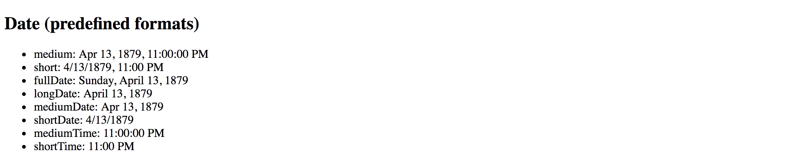
Decimal
The DecimalPipe pipe formats a number as text, taking into account user's locale and optionally custom display format.
The usage format of the pipe is as follows:
<element>
{{ <number_expression> | number[:digitFormat] }}
</element>
Where the digitFormat value is represented by the following formatting rule:
minIntegerDigits.minFractionDigits-maxFractionDigits
| Component | Default Value | Description |
|---|---|---|
| minIntegerDigits | 1 | Minimum number of digits to use when converting to text. |
| minFractionDigits | 0 | Minimum number of digits after fraction. |
| maxFractionDigits | 3 | Maximum number of digits after fraction. |
Minimum Numbers
By setting the minimum numbers like
minIntegerDigitsandminFractionDigits, you enforce resulting value to have a certain size. The pipe automatically adds leading or trailing zeros if the actual value is less than expected.For example applying a minimum number of
3to the value1results in003text rendered by the pipe.
Let's now see how this pipe works in practice. Open existing or create a new Angular application and put the following block to the main application component template:
<h2>Decimal (12.123456)</h2>
<ul>
<li>number => {{ 12.123456 | number }}</li>
<li>number:'2.1-2' => {{ 12.123456 | number:'2.1-2' }}</li>
<li>number:'3.0-0' => {{ 12.123456 | number:'3.0-0' }}</li>
<li>number:'3.10-15' => {{ 12.123456 | number:'3.10-15' }}</li>
</ul>
The example above renders to the following:

Please note the last case in the example above. It demonstrates how leading, and trailing zeros get added to the output based on conditions.
Internationalization API
This pipe is using Internationalization API that may not be fully supported by all modern browsers. You can use Polyfill.io service to get the
Intlpolyfill only if your user's current browser needs it.Also, you can see details and additional options at the project side: Intl.js
Currency
The CurrencyPipe pipe formats a number as a currency text, taking into account user's locale and optionally custom display format.
You can use this pipe with three optional parameters by utilizing the following format:
<element>
{{ <number_expression> | currency[:code[:symbol[:digitFormat]]] }}
</element>
The code is a parameter of string type that refers to ISO 4217 currency code.
For example, you can use GBP for the Great Britain Pound Sterling, or USD for United States Dollar.
The symbol parameter holds boolean value to indicate whether pipe needs to render currency symbol like £ or just use the currency code value, in this case, GBP.
This parameter defaults to false and CurrencyPipe is going to use currency codes if symbol parameter is not defined explicitly.
Finally, the digitFormat value is the same as of the DecimalPipe, and is represented by the following formatting rule:
minIntegerDigits.minFractionDigits-maxFractionDigits
| Component | Default Value | Description |
|---|---|---|
| minIntegerDigits | 1 | Minimum number of digits to use when converting to text. |
| minFractionDigits | 0 | Minimum number of digits after fraction. |
| maxFractionDigits | 3 | Maximum number of digits after fraction. |
Minimum Numbers
By setting the minimum numbers like
minIntegerDigitsandminFractionDigits, you enforce resulting value to have a certain size. The pipe automatically adds leading or trailing zeros if the actual value is less than expected.For example applying a minimum number of
3to the value1results in003text rendered by the pipe.
Below is a set of examples to demonstrate the pipe in action:
<h2>Currency</h2>
<ul>
<li>GBP (code): {{ 150 | currency:'GBP' }}</li>
<li>GBP (symbol): {{ 150 | currency:'GBP':true }}</li>
<li>USD: {{ 0.9876 | currency:'USD':true:'2.2-2' }}</li>
</ul>
Once your application starts you should see the following output:
Internationalization API
This pipe is using Internationalization API that may not be fully supported by all modern browsers. You can use Polyfill.io service to get the
Intlpolyfill only if your user's current browser needs it.Also, you can see details and additional options at the project side: Intl.js
Percent
The PercentPipe formats a number input as a percentage, where "1" corresponds to "100%",
and "0.5" for instance corresponds to "50%".
This pipe also takes into account user's locale and allows you to customize resulting numeric format if needed.
The usage format is similar to that of the DecimalPipe, CurrencyPipe
and many other number-based pipes Angular provides out of the box:
<element>
{{ <number_expression> | percent[:digitFormat] }}
</element>
Where the digitFormat value is represented by the following formatting rule:
minIntegerDigits.minFractionDigits-maxFractionDigits
| Component | Default Value | Description |
|---|---|---|
| minIntegerDigits | 1 | Minimum number of digits to use when converting to text. |
| minFractionDigits | 0 | Minimum number of digits after fraction. |
| maxFractionDigits | 3 | Maximum number of digits after fraction. |
Minimum Numbers
By setting the minimum numbers like
minIntegerDigitsandminFractionDigits, you enforce resulting value to have a certain size. The pipe automatically adds leading or trailing zeros if the actual value is less than expected.For example applying a minimum number of
3to the value1results in003text rendered by the pipe.
Now create a new Angular project or open an existing one and append the following block to the main application component template:
<h2>Percent</h2>
<ul>
<li>1.0 equals to {{ 1.0 | percent }}</li>
<li>0.5 equals to {{ 0.5 | percent }}</li>
<li>0.123456 equals to {{ 0.123456 | percent }}</li>
</ul>
If you run the application with the code above you should see the following output:

Notice that by default PercentPipe displays three digits after the fraction, so 0.123456 gets rounded and shown as 12.346.
As with other number conversion pipes, you are also able to control how PercentPipe displays digits after fraction.
For example, let's make the transformed output more precise and render five numbers instead of the default three:
<h2>Percent</h2>
<ul>
<li>0.123456 corresponds to {{ 0.123456 | percent:'1.1-5' }}</li>
</ul>
This time we should see the full number as we define it initially, and without rounding:

It is also possible to add leading zero to the final output by putting a minimum threshold for the number of digits:
<h2>Percent</h2>
<ul>
<li>0.025 corresponds to {{ 0.025 | percent:'2.1' }}</li>
</ul>
The example above shows how to force PercentPipe always to use two numbers during conversion,
so you are going to get a leading zero for small values.

Internationalization API
This pipe is using Internationalization API that may not be fully supported by all modern browsers. You can use Polyfill.io service to get the
Intlpolyfill only if your user's current browser needs it.Also, you can see details and additional options at the project side: Intl.js
Json
The JsonPipe pipe often helps with debugging your Angular code.
Its main purpose is converting JavaScript objects into JSON strings.
<element>
{{ <object_expression> | json }}
</element>
You are going to use this pipe if you want to peek inside a payload or response object coming from HTTP service call for instance.
Let's start by adding a complexObject property to the main application component:
export class AppComponent {
// ...
complexObject = {
name: {
firstName: 'Joan',
lastName: 'Doe'
},
email: 'joan.doe@mail.com'
};
}
As you see the property holds a User object with some nested properties. You can now render it using the JsonPipe pipe as below:
<h2>Json</h2>
<pre>{{ complexObject | json }}</pre>
That gives you the following output once application reloads:
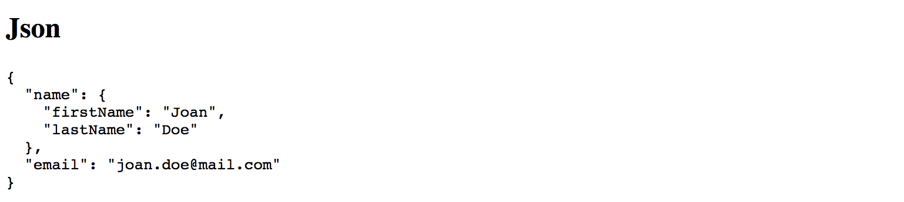
This pipe does not have any additional parameters.
Slice
The SlicePipe pipe extracts a section of a string or array into a new object.
It performs a selection from a "begin" to an end index where the end does not get included in the resulting set.
Note that the original string or array is not modified.
Slice Behavior
The implementation of this pipe is based on the standard Array.prototype.slice() method for JavaScript Arrays, and String.prototype.slice() method for JavaScript Strings.
If needed, please refer to the corresponding API documentation for more details on how
slicegets performed.
Using with Arrays
The format when using the pipe with arrays and collections is the following:
<element>
{{ array_expression | slice:begin[:end] }}
</element>
First, add an initial collection of numbers to the main application component class, to be able testing the pipe:
// ...
export class AppComponent {
// ...
numberCollection = [0, 1, 2, 3, 4, 5, 6];
}
As the next, try displaying first three items from the array by setting begin index to 0
to point to the start of the collection, and the end index to 3.
<h2>Slice (arrays)</h2>
<ul>
<li>
First 3 items:
<ul>
<li *ngFor="let num of numberCollection | slice:0:3">{{num}}</li>
</ul>
</li>
</ul>
Given the ending index is not included, the resulting subset should have the following items rendered: 0, 1, 2

You can also count items from the end of the array. For this purpose, you are going to use negative values for the start option.
For example value 3 signals the pipe to start taking items from the third position from the beginning.
Using value -3 makes the pipe count items from the end of the array.
Let's now try negative values in action and display last 3 items from the numbers collection:
<h2>Slice (arrays)</h2>
<ul>
<li>
Last 3 items:
<ul>
<li *ngFor="let num of numberCollection | slice:-3">{{num}}</li>
</ul>
</li>
</ul>
This time we do not need to specify the end index as we are going to take
all array values starting with the third one from the end.

Feel free to experiment with start and end index values more
to see how SlicePipe works with arrays depending on your conditions.
Using with Strings
The format when using the pipe with strings is identical to that of the arrays.
The SlicePipe pipe treats strings as arrays of characters,
so you can apply the same begin and end parameters as you did earlier.
<element>
{{ string_expression | slice:begin[:end] }}
</element>
Let's test this pipe with the "Hello world!" string and extract the first word:
<h2>Slice (strings)</h2>
<ul>
<li>
First word of 'Hello world!':
{{ 'Hello world!' | slice:0:5 }}
</li>
</ul>
Upon application start, you should see that pipe successfully transformed the string value and rendered only the word "Hello".

We can also take the last word by using negative number for the begin parameter value:
<h2>Slice (strings)</h2>
<ul>
<li>
Last word of 'Hello world!':
{{ 'Hello world!' | slice:-6:-1 }}
</li>
</ul>
You should see the word "world" rendered by the pipe as soon as your application reloads.
Note that we use -1 for the end value because sentence ends with an exclamation mark
that we want to exclude from the final output.
Otherwise, you can omit the end setting entirely and leave just -6 for the start value.
I18nSelect
For the time being the I18nSelectPipe is an experimental pipe that allows you
to render different strings from the object depending on the input value.
Experimental
Please note that this pipe is an experimental one and its functionality may change. We are going to update this section with new features for the
I18nSelectPipeif they appear, or remove this warning if the pipe gets updated to the stable state.
The usage format for this pipe is the following:
<element>
{{ <expression> | i18nSelect:mapping }}
</element>
The mapping is an object literal with properties.
To see that in action you need to create two properties titleMode and titleValues.
The titleMode property should be responsible for different title rendering modes,
while titleValues contains different values for title content.
export class AppComponent {
titleMode = 'primary';
titleValues = {
primary: 'This is a primary title',
secondary: 'This is a secondary title',
other: 'This is an alternative title'
};
}
Now we can wire both properties together in the component HTML template as below:
<h2>I18nSelect</h2>
<ul>
<li>{{ titleMode | i18nSelect:titleValues }}</li>
</ul>
Based on settings above there are four different values you can see on the screen at runtime:
titleValues.primaryiftitleModeproperty value equals toprimary;titleValues.secondaryiftitleModeproperty value equals tosecondary;titleValues.otheras a fallback value iftitleModedoes not contain any of the values above;- empty string, if
titleValuesobject literal does not haveotherproperty defined, andtitleModecontains "unknown" value;
Given that by default titleMode property value is set to primary,
you should see the following content once the application starts:

Now try changing the value of the titleMode property to secondary like in the example below:
export class AppComponent {
titleMode = 'secondary';
// ...
}
This time I18nSelectPipe is going to select and display titleValues.secondary value:

For the next experiment, let's try setting titleMode to something titleValues does not contain a property for.
For example, change the value to a "something else" string.
export class AppComponent {
titleMode = 'something else';
//...
}
As soon as your page reloads you can see that I18nSelectPipe this time takes the titleMode.other content as a fallback value.

Another good scenario for I18nSelectPipe is rendering text that gets adopted to some input criteria,
for instance, gender value of the current user can be a good example:
export class AppComponent {
gender: string = 'male';
inviteMap: any = {
'male': 'Invite him.',
'female': 'Invite her.',
'other': 'Invite them.'
};
}
Your component may display different user interface and content based on the gender value at run time.
Finally, you an use the I18nSelectPipe pipe for localising text, the i18n prefix in its name stands for internationalization.
Imagine you are implementing a colour picker button component, and you need to support multiple languages.
You can easily split the translation support into two pieces: currentLanguage property holding currently used language code
and a buttonLabels object containing all supported translations.
Let's see that in practice by providing tree "Pick colour" labels translated into
British English (en-GB), American English (en-US) and Ukrainian (uk).
For all other languages that our component does not support out of the box,
we are going to use en-GB locale via other property as a fallback option.
export class AppComponent {
currentLanguage = 'en-GB';
buttonLabels = {
'en-US': 'Pick a color',
'en-GB': 'Pick a colour',
'uk': 'Вибрати колiр',
'other': 'Pick a colour'
};
}
Now switch to the HTML template of your application component or any other component you are using for testing purposes, and add the following content:
<h2>I18nSelect</h2>
<ul>
<li>
<button>{{ currentLanguage | i18nSelect:buttonLabels }}</button>
</li>
</ul>
You should see the en-GB translation by default as per currentLanguage property value we set earlier:

Now if you change the currentLanguage to "uk" code the button should have the following content rendered by I18nSelectPipe:
Finally, if you change your currentLanguage property value to something
that is not supported by default, like "fr" or "it" for instance,
the pipe is going to switch to the "other" value at run time.
I18nPlural
This pipe helps you with pluralizing your string values based on a number input value and optionally taking into account the current user's locale.
Experimental
Please note that this pipe is an experimental one and its functionality may change. We are going to update this section with new features for the
I18nPluralPipeif they appear, or remove this warning if the pipe gets updated to the stable state.
The usage format for the I18nPluralPipe is as following:
<element>
{{ <number_expression> | i18nPlural:mapping }}
</element>
The mapping is an object literal with properties, represented in TypeScript
by a dictionary containing key/value pairs of a string type.
Let's imagine we have a list of posts to render on the page. Each post may also contain comments, so we are also going to show a list of comment instances in a user-friendly manner.
Create a new application with Angular CLI or open an existing one, and append the following content to the main application controller:
export class AppComponent {
// ...
posts = [
{
content: 'Post 1 content',
commentsCount: 0,
},
{
content: 'Post 2 content',
commentsCount: 1
},
{
content: 'Post 3 content',
commentsCount: 10
}
];
}
We have a collection of three simple posts with comment counters as commentsCount properties holding different number values.
There are at least three different cases for display value formatting in our case:
- 0 comments: special message for zero values
- 1 comment: singular form of the message
- 2+ comments: plural form of the message
Now let's create a mapping dictionary to hold string values for all the use cases above:
export class AppComponent {
// ...
commentLabels: { [key: string]: string } = {
'=0': 'There are no comments for this post.',
'=1': 'There is one comment for this post.',
'other': 'There are # comments for this post.'
};
}
Finally we are ready to see I18nPluralPipe in action.
Append the following HTML to the component template:
<h2>I18nPluralPipe</h2>
<ul>
<li *ngFor="let post of posts">
{{ post.content }}
<ul>
<li>{{ post.commentsCount | i18nPlural: commentLabels }}</li>
</ul>
</li>
</ul>
So this is how the output result should look like when the application starts:
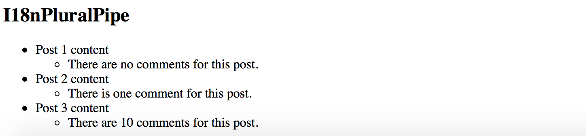
Async
The AsyncPipe pipe subscribes to an instance of a Promise or Observable
and transforms the underlying value upon every change.
<element>
{{ <expression> | async }}
</element>
The expression can take a value of either Observable or a Promise type.
Unsubscribing
When the component gets destroyed, the async pipe unsubscribes automatically to avoid potential memory leaks.
Using with NgFor directive
Let's try to display a list of comments based on an Observable.
First, create a comments property in your application component class:
export class AppComponent {
// ...
comments: Observable<string[]>;
}
We are going to render an unordered list of comments; we also need a button to fetch comments from the server
and update comments observable with new values.
Open the HTML template of the main application component and append the following:
<h2>Async</h2>
<ul>
<li *ngFor="let comment of comments | async">
{{ comment }}
</li>
</ul>
<button (click)="checkComments()">Check comments</button>
For the sake of simplicity, we are not going to make any HTTP calls on the checkComments call.
Let's just return a predefined set of comments after a short delay to emulate delays with a response.
export class AppComponent {
// ...
comments: Observable<string[]>;
checkComments() {
this.comments = new Observable(observer => {
observer.next([
'Comment 1',
'Comment 2',
'Comment 3'
]);
}).delay(1000);
}
}
The checkComments method sets comments variable value to an observable that evaluates with 1-second delay
and returns a set of sample comments.
For testing purposes you can also add a button to reset comments:
<button (click)="resetComments()">Reset comments</button>
The corresponding resetComments method is going to just set the comments value to null.
export class AppComponent {
// ...
resetComments() {
this.comments = null;
}
}
If you now run the application the main page should look like the following:
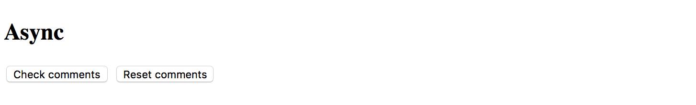
Try clicking the Check comments button and the results should get displayed in 1 second:
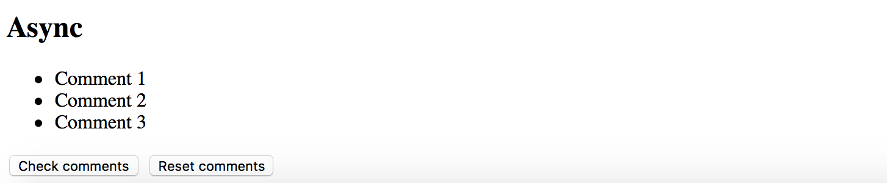
Using with Date object
Another good example to demonstrate the AsyncPipe in action is displaying current time on the page.
Our component needs to implement standard OnInit interface to setup currentTime observable once it is ready.
import { /*...,*/ OnInit } from '@angular/core';
export class AppComponent implements OnInit {
// ...
currentTime: Observable<Date>;
ngOnInit() {
this.currentTime = new Observable<Date>(observer => {
setInterval(_ => observer.next(new Date()), 1000);
});
}
}
Upon initialization, the component assigns an Observable of Date type to the currentTime property.
The Observable instance updates the underlying value to a new Date object every second,
that causes AsyncPipe to render new date automatically.
As Angular allows chaining multiple pipes together, you can also use a DatePipe to format resulting output
to display only the time portion of the date.
You can get the basic HTML template for the application component below:
<h2>Async (date/time)</h2>
<ul>
<li>
Current time: {{ currentTime | async | date:'mediumTime' }}
</li>
</ul>
Once application compiles and starts you should get a time value updated every second:

Source Code
You can find the source code in the angular/pipes/standard-pipes folder.
Custom Pipes
Besides providing a set of standard out-of-box pipes the Angular framework provides support for creating your custom ones.
To create a custom pipe you need to import the @Pipe decorator and apply it to your class.
import { Pipe } from '@angular/core';
@Pipe({
name: 'customDate'
})
export class CustomDatePipe {
// ...
}
You can give your class any name you want.
The Angular is going to use the @Pipe decorator metadata when parsing component templates, in our case the pipe gets used as customDate:
<element>
{{ <expression> | customDate }}
</element>
Also, your class should implement a PipeTransform interface with a transform method:
interface PipeTransform {
transform(value: any, ...args: any[]) : any
}
At runtime, the Angular calls your pipe's transform method providing original input value together with optional pipe parameters.
For example, if your myPipe pipe expects to receive 3 additional parameters you can declare your transform method like the following:
transform(value: string, p1: number, p2: number, p3: number) : string {
return value;
}
To get type checking support from TypeScript, you can also provide type definitions for your parameters and method return type.
You can now use your pipe in HTML templates like in the example below:
<element>
{{ 'hello world' | myPipe:1:2:3 }}
</element>
Implementing Custom Pipe
We are going to create a simple pipe that takes a numeric input value for a size of the file in bytes and produces a user-friendly output by transforming it to Kilobytes, Megabytes or greater units.
Let's start creating a custom pipe with a new project custom-pipes by utilizing the Angular CLI tool.
ng new custom-pipes
You can use Angular CLI to generate the file-size pipe scaffold.
ng g pipe pipes/file-size
The command above generates a pipe, basic unit test and updates main application module so that you can use this pipe across all the application components.
installing pipe
create src/app/pipes/file-size.pipe.spec.ts
create src/app/pipes/file-size.pipe.ts
update src/app/app.module.ts
The default pipe scaffold already contains a @Pipe decorator applied and inherits the PipeTransform interface:
// src/app/pipes/file-size.pipe.ts
import { Pipe, PipeTransform } from '@angular/core';
@Pipe({
name: 'fileSize'
})
export class FileSizePipe implements PipeTransform {
transform(value: any, args?: any): any {
return null;
}
}
First, let's change the signature of the transform method to accept bytes and decimals parameters of a number type.
We also make both of them optional by providing default values and change the return type of the method to a string.
// src/app/pipes/file-size.pipe.ts
@Pipe({
name: 'fileSize'
})
export class FileSizePipe implements PipeTransform {
transform(bytes: number = 0, decimals: number = 2): string {
return null;
}
}
Converting Bytes
There are many different ways to convert a file size from bytes to other units of measurement.
For this example we are going to take the accepted answer from the following Stackoverflow question: Correct way to convert size in bytes to KB, MB, GB in Javascript
You can see the final implementation of the pipe below:
@Pipe({
name: 'fileSize'
})
export class FileSizePipe implements PipeTransform {
transform(bytes: number = 0, decimals: number = 2): string {
if (bytes === 0) {
return '0 Bytes';
}
const k = 1024,
dm = decimals || 2,
sizes = ['Bytes', 'KB', 'MB', 'GB', 'TB', 'PB', 'EB', 'ZB', 'YB'],
i = Math.floor(Math.log(bytes) / Math.log(k));
return parseFloat((bytes / Math.pow(k, i)).toFixed(dm)) + ' ' + sizes[i];
}
}
If no bytes value provided the pipe returns a "0 Bytes" string,
for all other cases if converts input number to the most appropriate measuring unit.
The transform method also takes into account the number of decimals to use after the point,
provided within the second decimals parameter.
By default, it is going to take two numbers.
In order to see the pipe in action open the main application component template and append the following HTML block:
<h2>fileSize</h2>
<ul>
<li>520.12345 => {{ 520.12345 | fileSize }}</li>
<li>520.12345 => {{ 520.12345 | fileSize:4 }}</li>
<li>1024 => {{ 1024 | fileSize }}</li>
<li>5,347,737.6 => {{ 5347737.6 | fileSize }}</li>
<li>1,288,490,188.8 => {{ 1288490188.8 | fileSize }}</li>
</ul>
Now run the application with ng serve --open command and you should see the following output:

Pure And Impure Pipes
Angular supports two different categories of pipes - "pure" and "impure".
Every custom pipe is pure by default, but you can change that when using the @Pipe decorator:
@Pipe({
name: 'myCustomPipe',
pure: false
})
Before diving into details on category differences, let's prepare the testing project.
We are going to display a list of short blog posts filtered by a pure or impure pipe
and allow creating a new simple blog post entry with various properties like creation date, content or public state.
Preparing Project
Use Angular CLI to generate a new project called "pure-impure".
ng new pure-impure
cd pure-impure
As we are going to filter and display Posts let's create a Post interface that defines the main attributes of a Post instance.
You can do that by utilizing Angular CLI that supports generating interface classes as well.
ng g interface post
The Angular CLI puts interfaces classes to the src/app folder by default:
installing interface
create src/app/post.ts
The bare minimum of properties we need to visualize a post is:
- the text content of the post
- creation date
- a flag indicating whether the post is public or private
Open the newly generated post.ts file and update it according to the list above:
// src/app/post.ts
export interface Post {
created: Date;
content: string;
isPublic: boolean;
}
For the next step let's update the main application component class.
We need a posts property to hold a collection of created Post instances.
Also, the newPostContent and newPostPublic properties of string and boolean
types are going to power our simple post editor.
// src/app/app.component.ts
import { Post } from './post';
@Component({/*...*/})
export class AppComponent {
// ...
posts: Post[] = [];
newPostContent = '';
newPostPublic = true;
createPost(): void {
if (this.newPostContent) {
const newPost = <Post> {
content: this.newPostContent,
isPublic: this.newPostPublic,
created: new Date()
};
this.posts.push(newPost);
this.newPostContent = '';
}
}
}
The createPost method performs some basic validation for content to be defined and creates a new post.
The creation date is assigned automatically to current date and time.
Upon pushing the new post to the posts collection, our createPost method also clears the input field.
Note that posts collection is defined and initialized with an empty array by default.
We add items to it via createPost method, but the initial collection is always the same.
To better demonstrate capabilities of both pipes we also need to change the object reference for the posts collection,
for example creating a new collection of Post instances, or resetting it by assigning an empty array value.
For the sake of simplicity let's just be making a copy of the existing collection and reassigning posts property,
all we need so far is changing the object reference.
Append the following mutateArray method to the main application component class:
@Component({ /*...*/ })
export class AppComponent {
// ...
mutateArray() {
this.posts = this.posts.concat();
}
}
Finally edit the component template and add the following HTML content:
<!-- src/app/app.component.html -->
<h2>Posts</h2>
<div>
<textarea [(ngModel)]="newPostContent"></textarea>
</div>
<div>
<label>
<input type="checkbox" [(ngModel)]="newPostPublic">
Is Public
</label>
</div>
<div>
<button (click)="createPost()">post</button>
<button (click)="mutateArray()">mutate array</button>
</div>
<ul>
<li *ngFor="let post of posts">
{{ post.content }} ({{ post.created | date:'short' }})
</li>
</ul>
The layout above is pretty simple.
You get a text area element to enter a content for a new post, a checkbox to toggle the public state,
and two buttons post and mutate array.
Under the post editor there is a list of previously created posts, by default it is empty.
Once you compile and start the application you should see the following:
ng serve --open

Now you are ready testing pure and impure pipes in action.
Pure Pipes
A "pure pipe" is a pipe that gets executed by Angular only when a "pure change" happens to the underlying input value, for example:
- a "primitive" value changes, for example of a
String,Number,Booleanor otherprimitivetypes; - object reference changes, for instance an entire
Array,Date,Objectand other reference-based types;
When you use a "pure pipe", the Angular ignores all changes to the complex objects it gets as input parameters for the pipe. For example, when using with arrays, the pipe renders data if your component class initializes default collection of items. However, the pipe does not update the view if you add new items to the collection at run time.
Object Reference Checks
Concerning performance and memory consumption, it is much faster for Angular to perform an object reference check rather than initiating a deep check for complex object differences.
So "pure" pipes are extremely fast if you deal with primitives or change entire input value in your component. Angular change detection mechanisms take care of values and execute pipes when needed.
Let's use Angular CLI to generate our simple pure pipe and call it "public-posts".
ng g pipe pipes/public-posts
You should get your pipe scaffold and a basic unit test in the src/app/pipes folder:
installing pipe
create src/app/pipes/public-posts.pipe.spec.ts
create src/app/pipes/public-posts.pipe.ts
update src/app/app.module.ts
Edit the public-posts.pipe.ts according to the following example:
// src/app/pipes/public-posts.pipe.ts
import { Pipe, PipeTransform } from '@angular/core';
import { Post } from '../post';
@Pipe({
name: 'publicPosts'
})
export class PublicPostsPipe implements PipeTransform {
transform(posts: Post[]): any {
return posts.filter(p => p.isPublic);
}
}
Essentially the pipe takes a collection of Post instances as an input parameter posts
and returns a filtered result using isPublic property.
Pipe Name
Note that your pipe's public name is going to be
publicPosts. You can give the component class any name you want, in our case, it isPublicPostsPipe, but Angular is going to use@Pipemetadata when parsing component templates.
Now let's add a couple of initial posts for our pipe to filter at run time:
@Component({ /*...*/ })
export class AppComponent {
posts: Post[] = [
<Post> {
content: 'default public post',
isPublic: true,
created: new Date()
},
<Post> {
content: 'default private post',
isPublic: false,
created: new Date()
}
];
}
The first post is going to be public while the second one is configured to be private by default.
For the next step, please update the application component template to show the posts collection,
filtered by our publicPosts pipe, in a separate unstructured list element.
<h3>Public posts (pure)</h3>
<ul>
<li *ngFor="let post of posts | publicPosts">
{{ post.content }} ({{ post.created | date:'short' }})
</li>
</ul>
<h3>All posts</h3>
<ul>
<li *ngFor="let post of posts">
{{ post.content }} ({{ post.created | date:'short' }})
</li>
</ul>
If you run your application right now, you should see one entry in the "Public posts" list and two entries in the "All posts" one.

So the pipe is working with predefined data as we expect it. Now try adding couple more posts by entering content into the input area and clicking the "post" button. Please ensure that "Is Public" checkbox element is set to "checked" state.
You should see the "All posts" list is getting updated, while "Public posts" one remains the same. That is the expected behavior as we are modifying a complex object, in this case, an array of Post instances, without actually changing object reference for the pipe.
The "All posts" list uses the ngFor directive, so Angular detects the change and updates it accordingly.
During the preparation phase, we have created a "mutate array" button that modifies posts
by replacing the collection with its copy.
If you click this button right now the "Public posts" should instantly update the view with new values:
Impure Pipes
An "impure pipe" is a pipe that gets executed by Angular during every component change detection cycle.
All custom pipes are "pure" by default, in order to change its state to "impure"
you need to explicitly define that in the @Pipe decorator metadata:
@Pipe({
name: 'myCustomPipe',
pure: false
})
Performance
A single component may cause many change detection cycles based on various factors, for example, user interaction, keyboard or mouse events.
Keep in mind that you pipe may affect overall application performance if it is slow, or not optimized for frequent runs (data caching for instance).
Let's create another pipe scaffold called "public-posts-impure" in the same project using Angular CLI:
ng g pipe pipes/public-posts-impure
The command above should produce a new pipe next to the existing one in the src/app/pipes folder.
installing pipe
create src/app/pipes/public-posts-impure.pipe.spec.ts
create src/app/pipes/public-posts-impure.pipe.ts
update src/app/app.module.ts
Next, update the pipe code like in the example below:
// src/app/pipes/public-posts-impure.pipe.ts
import { Pipe, PipeTransform } from '@angular/core';
import { Post } from '../post';
@Pipe({
name: 'publicPostsImpure',
pure: false
})
export class PublicPostsImpurePipe implements PipeTransform {
transform(posts: Post[]): any {
return posts.filter(p => p.isPublic);
}
}
The implementation of the pipe is pretty much the same we used before.
It takes a collection of posts as an input and returns a filtered result based on public state via isPublic property values.
We are going to use this pipe as "publicPostsImpure" in the HTML templates,
and we also explicitly set the pure property value in the @Pipe decorator metadata to false:
@Pipe({
name: 'publicPostsImpure',
pure: false
})
Finally extend the main application component template with the list showing all public posts
filtered by the publicPostsImpure pipe:
<h3>Public posts (impure)</h3>
<ul>
<li *ngFor="let post of posts | publicPostsImpure">
{{ post.content }} ({{ post.created | date:'short' }})
</li>
</ul>
This time if you run the application and add several posts with "Is Public" element checked,
you should see the "Public posts (impure)" list gets updated at real-time.
That happens because our custom publicPostsImpure pipe gets executed by Angular during each change detection cycle.

Global Application Configuration
In this chapter, we are going to focus on application settings and configuration files.
If you are building a large application or an application that performs the server side or RESTful APIs calls, sooner or later you will come across the need to store global application settings somewhere. For example the APIs URL string, you may hardcode it somewhere in the application or service, but that will require rebuilding and redeploying your application every time the URL value needs changes.
It is much easier storing and loading configuration parameters in a separate file that developers can maintain without changing the main application code.
Let's create an Application Configuration service that loads global settings from the external server-side file before all other services get loaded, and provides access to configuration properties for all other application components and services.
Preparing the Configuration File
We are going to use the JSON format for configuration files. The name of the file can be anything as we need only the content.
As a first step, create an app.config.json file in the src folder with the following content:
src/app.config.json:
{
"title": "My application"
}
Configuration Content
Theoretically, you could even dynamically generate the file if necessary, for example building the output based on some database values.
In our case, we just store the custom application title in the config file to see the basic flow in action. You can extend the file content later on with more properties and values.
We also need configuring Angular CLI to copy the newly created file to the application output directory upon every build.
Edit the apps section of the angular.json file and append the name of the settings file
to the "assets" collection like in the example below:
angular.json:
{
"apps": {
"assets": [
"app.config.json"
]
}
}
Updating File Content
One of the greatest features of Angular CLI is automatic rebuilding and live-reloading upon file changes.
If you start your application in the development mode, the runner should also be watching for the
app.config.jsonchanges, and automatically reloading your application every time you update your settings.
Creating the Configuration Service
We now need two things to be created: an AppConfig interface to provide a type-safe access to our configuration properties,
and AppConfigService service that is going to load the remote file, store the resulting settings
and expose them to external components and services.
Use the following commands to generate both an interface and a service scaffolds:
ng g interface app-config
ng g service app-config
Don't forget to register the newly generated service with the main application module, as Angular CLI does not do that by default.
Now, edit the AppConfig interface and add the "title" property we have declared
in the server-side config earlier in this chapter:
// src/app/app-config.ts
export interface AppConfig {
title?: string;
}
Next, let's wire our AppConfigService with the Http service to be able making HTTP calls and fetching remote files:
// src/app/app-config.service.ts
import { Injectable } from '@angular/core';
import { HttpClient } from '@angular/common/http';
@Injectable({ providedIn: 'root' })
export class AppConfigService {
constructor(private http: HttpClient) {}
}
We are now ready to load the configuration from the server.
Loading Server-Side Configuration File
Let's introduce the load method that fetches the app.config.json file and exposes its content as a data property.
For the convenience purposes, the method is going to return a Promise instance
that resolves to the loaded configuration file or falls back to the default values upon loading errors.
We also provide support for the optional default values that you can pass as part of the load call.
Below you can see the full code for the service implementation:
// src/app/app-config.service.ts
import { Injectable } from '@angular/core';
import { HttpClient } from '@angular/common/http';
import { AppConfig } from './app-config';
@Injectable({ providedIn: 'root' })
export class AppConfigService {
data: AppConfig = {};
constructor(private http: HttpClient) {}
load(defaults?: AppConfig): Promise<AppConfig> {
return new Promise<AppConfig>(resolve => {
this.http.get('app.config.json').subscribe(
response => {
console.log('using server-side configuration');
this.data = Object.assign({}, defaults || {}, response || {});
resolve(this.data);
},
() => {
console.log('using default configuration');
this.data = Object.assign({}, defaults || {});
resolve(this.data);
}
);
});
}
}
As you can see from the code above, we also add a basic debugging output to the browser console log. It should help us to see whether the application is using an external configuration file or fallback values.
Logging to console is a fully optional step, and you may want to remove that code at the later stages.
Registering Configuration Service
Next, we need registering our configuration service with the main application module.
However, given that many other services and components may depend on the external settings,
we should ensure the application configuration service gets the app.config.json file loaded and applied before others.
The Angular framework provides a special injection token called APP_INITIALIZER
that you should use to execute your code during the application startup.
That also helps to register providers and to use provider factories.
For the sake of simplicity the example below shows only the newly added content:
// src/app/app.module.ts
import { /*...,*/ APP_INITIALIZER } from '@angular/core';
import { HttpClientModule } from '@angular/common/http';
export function setupAppConfigServiceFactory(
service: AppConfigService
): Function {
return () => service.load();
}
@NgModule({
imports: [
// ...,
HttpClientModule
],
providers: [
{
provide: APP_INITIALIZER,
useFactory: setupAppConfigServiceFactory,
deps: [
AppConfigService
],
multi: true
}
]
})
export class AppModule { }
So how the code above works and how do we load an external configuration at the application startup?
First of all, we declare the AppConfigService in the providers section of the module.
Then we use the APP_INITIALIZER injection token to declare a custom provider based on the setupAppConfigServiceFactory factory;
the provider also references the AppConfigService as a dependency to inject when the factory gets invoked.
At the runtime, the Angular resolves and creates an instance of the AppConfigService,
and then uses it when calling the setupAppConfigServiceFactory.
The factory itself calls the "load" method to fetch the "app.config.json" file.
If you run the web application right now the browser console output should be as following:
using server-side configuration
The settings service is up and running correctly, and we are now able to use configuration settings in the components.
Using Configuration Settings
It is now time to see the application configuration service in action.
Let's use the title value to update the similar property in the main application component.
We get the following controller class generated by the Angular CLI:
// src/app/app.component.ts
import { Component } from '@angular/core';
@Component({
selector: 'app-root',
templateUrl: './app.component.html',
styleUrls: ['./app.component.css']
})
export class AppComponent {
title = 'app';
}
All we need at this point is to inject the AppConfigService as an appConfig parameter
and assign the title property to the appConfig.data.title value.
Don't forget that at this point the JSON file is already loaded and configuration properties are ready for use.
import { AppConfigService } from './app-config.service';
@Component({/*...*/})
export class AppComponent {
title = 'app';
constructor(appConfig: AppConfigService) {
this.title = appConfig.data.title;
}
}
If you run the web application now, the main page should contain the title value fetched from the external file.
Try editing the title value in the app.config.json and you should see the Angular CLI automatically reload the page.
The page automatically reflects new values.

We just got a working example of the configuration service. We have also checked the external settings being successfully fetched and applied to component properties. The examples in the chapter should help you building configuration support for your applications.
Source Code
You can find the source code as an Angular CLI project in the angular/app-settings folder.
Internationalization (i18n)
In this chapter, we are going to build a simple multi-language support for an application. We are about to create services to translate application strings, switch languages based on user interactions, and also using third-party libraries for more sophisticated translation scenarios.
For a basic multi-language support we need at least three blocks:
- language files, preferably in the JSON format
- Angular service to load one or multiple language files
- Angular pipe for a convenient mapping of resource keys to translated values
We start with generating a new Angular application called app-i18n:
ng new app-i18n
cd app-i18n
Let's also use Angular CLI to generate our translation layer blocks, the TranslateService and the TranslatePipe:
ng g service translate
ng g pipe translate
We also need at least a single language file to demonstrate the translation process in action,
and optionally use as a default or fallback locale.
Create a new i18n folder in the src/assets one, and put an en.json file there with the following content:
src/assets/i18n/en.json:
{
"TITLE": "My i18n Application (en)"
}
Creating Translate Service
As a second step, we need to make our TranslateService load the language file.
We are going to implement a use method that performs the loading process over the HTTP.
It takes the lang parameter holding the name of the locale and falls back to the en value.
// src/app/translate.service.ts
import { Injectable } from '@angular/core';
import { HttpClient } from '@angular/common/http';
@Injectable({ providedIn: 'root' })
export class TranslateService {
data: any = {};
constructor(private http: HttpClient) {}
use(lang: string): Promise<{}> {
return new Promise<{}>(resolve => {
const langPath = `assets/i18n/${lang || 'en'}`;
this.http.get(langPath).subscribe(
response => {
this.data = response || {};
resolve(this.data);
},
err => {
this.data = {};
resolve(this.data);
}
);
});
}
}
Loading server-side files
The process of loading of the translation file is very similar to that of the global configuration files we have used earlier in this book.
Please refer to the Global Application Configuration chapter for more details and examples.
Next, let's register our service provider and a custom factory that triggers the TranslateService
to load default or predefined locale file before all other services and components get created.
That helps us ensure that all other elements of the application get access to translation feature at startup.
// src/app/app.module.ts
export function setupTranslateServiceFactory(
service: TranslateService): Function {
return () => service.use('en');
}
@NgModule({
providers: [
TranslateService,
{
provide: APP_INITIALIZER,
useFactory: setupTranslateServiceFactory,
deps: [
TranslateService
],
multi: true
}
]
})
export class AppModule { }
Now we can have a quick test to ensure the file got loaded and translation service has the data preserved. Inject the service into the main application component and dump the entire data set to the browser console output.
// src/app/app.component.ts
import { TranslateService } from './translate.service';
@Component({/*...*/})
export class AppComponent {
title = 'app';
constructor(translateService: TranslateService) {
console.log(translateService.data);
}
}
Once you run the web application and head to the browser console, you should see the following output:

We got the translation service working as expected; now we can proceed to create the corresponding pipe.
Creating Translate Pipe
The pipe we have generated at the beginning of this chapter needs to inject the translation service instance in the constructor like in the code below:
// src/app/translate.pipe.ts
import { Pipe, PipeTransform } from '@angular/core';
import { TranslateService } from './translate.service';
@Pipe({
name: 'translate'
})
export class TranslatePipe implements PipeTransform {
constructor(private translate: TranslateService) {}
transform(value: any, args?: any): any {
return null;
}
}
Now the pipe needs to map the key to the underlying resource string.
Let's get also provide a fallback behavior and return the resource key if the corresponding translation is missing. That should help you to identify the problems with translation earlier.
// src/app/translate.pipe.ts
@Pipe({/*...*/})
export class TranslatePipe implements PipeTransform {
// ...
transform(key: any): any {
return this.translate.data[key] || key;
}
}
Don't forget that your newly created pipe needs to be present in the main application module. The Angular CLI tool automatically registers it, if you have added the pipe manually then see the following code for example:
// src/app/app.module.ts
import { TranslatePipe } from './translate.pipe';
@NgModule({
declarations: [
// ...,
TranslatePipe
],
// ...
})
export class AppModule { }
Using Translate Pipe
It is time to see our translation pipe in action.
Let's update the main application controller class and set the title property value to the TITLE resource key like below:
// src/app/app.component.ts
@Component({/*...*/})
export class AppComponent {
title = 'TITLE';
// ...
}
If you open the app.component.html template file, you should see the title property referenced in the welcome message:
<!-- src/app/app.component.html -->
<h1>
Welcome to {{ title }}!
</h1>
We can just append the pipe to the title value to enable automatic translation of the value
based on the resource strings in the translation file.
<!-- src/app/app.component.html -->
<h1>
Welcome to {{ title | translate }}!
</h1>
Once you compile and run the web application, you should see the welcome message getting the text directly from the language file.
Switching Languages
We have the default locale working so far, but switching languages at runtime require some extra configuration steps.
First, let's create an additional file ua.json in the assets/i18n folder.
For testing purposes, you can just copy the contents of the en.json file
and slightly modify the strings to be able to see the difference at runtime.
src/assets/i18n/ua.json:
{
"TITLE": "My i18n Application (ua)"
}
The main application controller class needs a new setLang method
so that we can switch to a different language with, for instance, a button click.
With our current TranslateService implementation, we need just the name of the locale:
// src/app/app.component.ts
@Component({/*...*/})
export class AppComponent {
title = 'TITLE';
constructor(private translateService: TranslateService) {
console.log(translateService.data);
}
setLang(lang: string) {
this.translateService.use(lang);
}
}
Get back to the application component template and add a couple of buttons to switch between the languages like in the example below:
<!-- src/app/app.component.html -->
<div>
<button (click)="setLang('ua')">Language: UA</button>
<button (click)="setLang('en')">Language: EN</button>
</div>
If you try running the application right now, you should notice that buttons do not work. If you run the Dev Tools and inspect the Network tab, you are going to see that a corresponding language file is, in fact, fetched every time you click the buttons.
You do not see the changes on the page because of how the pipes in Angular work by default. For the performance reasons, they cache the result once the value is transformed and always use evaluated values in subsequent calls.
In our particular case, we need the pipe to refresh, so the caching needs to be switched off.
You can achieve that by setting the "pure" attribute of the @Pipe decorator metadata to "false".
// src/app/translate.pipe.ts
@Pipe({
name: 'translate',
pure: false
})
export class TranslatePipe implements PipeTransform {
// ...
}
Pure and Impure Pipes
You can get more details in the Pipes chapter, specifically in the Pure And Impure Pipes section.
Try rerunning your web application, and clicking the buttons to switch between languages. You should see the label text getting updated each time the button gets clicked.
Summary
You just have got a basic lightweight multi-language functionality that you can use in your web application.
Note, however, that translation layer may require many code enhancements and performance optimizations, for you to be ready to use it for production purposes.
Source Code
You can find the source code as an Angular CLI project in the angular/i18n folder.
You can also check out one of my Angular projects @ngstack/translate that provides i18n-features for Angular applications and components. That library can save a lot of your time and effort required to build a multi-lingual web application.
Reusable Component Libraries
We have already used the Angular CLI to generate applications. For the time being the CLI does not support creating the reusable libraries, so we are going to use "ng-packagr" tool for this purpose.
The "ng-packagr" transpiles your component libraries using the "Angular Package Format". Resulting bundles are ready to be consumed by Angular CLI, Webpack, or SystemJS. For more details on the features, please refer to the project page.
In this chapter, we are going to use Angular CLI to create a new Angular application and two reusable component libraries: a header and a sidebar components. Both libraries can be built and published to NPM separately.
Also, the application is going to be linked with the component libraries locally. That allows developing and testing components with the main application.
Creating New Application
Let's use Angular CLI to create a new application and call it ng-framework.
You can use that application to test components before building and publishing them to NPM, or redistributing via other resources.
ng new ng-framework
For convenience purposes, you can change the "start" script to also launch the application in the browser.
To do that, open the package.json file and append --open argument to the start command:
{
"scripts": {
"start": "ng serve --open"
}
}
Next, you need to install the ng-packagr library as a development dependency.
npm install ng-packagr --save-dev
At this point, the project setup is complete, and you are ready to start building reusable component libraries.
Creating Component Libraries
Now, we are going to create two separate projects with the header and sidebar components.
That should be more than enough to demonstrate publishing and consuming multiple component libraries.
In the root project folder, run the following commands to create an initial folder structure.
mkdir -p modules/header/src
mkdir -p modules/sidebar/src
As you can see, the modules folder contains all the component projects as subfolders.
Let's start with the header component first, and you can then perform similar steps to implement the sidebar.
First, create a component class and give it a unique selector to avoid clashes at runtime.
The value can be anything of your choice, for this guide we are going to use ngfw-header.
// modules/header/src/header.component.ts
import { Component, OnInit } from '@angular/core';
@Component({
selector: 'ngfw-header',
templateUrl: './header.component.html',
styleUrls: ['./header.component.css']
})
export class HeaderComponent {}
The template is going to be very simple. An h1 element wrapping the ng-content is the minimal implementation we need right now.
You can always extend it later with the more sophisticated layout and behavior.
<!-- modules/header/src/header.component.html -->
<h1>
<ng-content></ng-content>
</h1>
Add some CSS to be sure the styles are also loaded from the package when we start using it with the application. In our case, the colour of the header is going to be red.
/* modules/header/src/header.component.css */
h1 {
color: red;
}
Finally, as per Angular architecture, we need to have a module that imports all necessary dependencies and provides declarations and exports.
The most important part of our scenario is to put the HeaderComponent to the exports collection.
// modules/header/src/header.module.ts
import { NgModule } from '@angular/core';
import { CommonModule } from '@angular/common';
import { HeaderComponent } from './header.component';
@NgModule({
imports: [
CommonModule
],
declarations: [
HeaderComponent
],
exports: [
HeaderComponent
]
})
export class HeaderModule { }
As the header component it planned to be published as a separate library, we need to provide a package.json file.
Below is a simple set of details that needs to be in package.json for a library before publishing.
Note that you can also use NPM scopes to have unique library names associated with your NPM account for instance.
modules/header/package.json:
{
"name": "@denysvuika/ng-framework-header",
"version": "1.0.0",
"author": "Denys Vuika <denys.vuika@gmail.com>",
"license": "MIT",
"private": false,
"peerDependencies": {
"@angular/common": "^5.0.0",
"@angular/core": "^5.0.0"
}
}
// modules/header/public_api.ts
export * from './src/header.module';
Now you can repeat the steps above to implement the second sidebar component.
The only difference is the name of the project in the package.json file.
modules/sidebar/package.json:
{
"name": "@denysvuika/ng-framework-sidebar",
}
Also, let's also change the colour to green, just to see we are dealing with two different stylesheets at runtime.
/* modules/sidebar/src/sidebar.component.css */
h1 {
color: green;
}
Building the Packages
To build the project and produce bundles we need to create a ng-package.json file for the ng-packagr.
The file should live next to the package.json in the library root folder.
modules/header/ng-package.json:
{
"$schema": "../../node_modules/ng-packagr/ng-package.schema.json",
"lib": {
"entryFile": "public_api.ts"
}
}
Note that the same file should be present in both our library root folders. Feel free to copy and paste it, since the file does not contain any project-specific content at this point.
To build a project with ng-packagr, we can provide a path to the configuration file.
That also allows us to build more than one project from the NPM scripts.
You can refer to the example below, with only the change needed for the build, for the sake of simplicity.
package.json:
{
"scripts": {
"build:modules": "ng-packagr -p ./modules/header/ng-package.json && ng-packagr -p ./modules/sidebar/ng-package.json"
}
}
Now go to the root folder and execute the following command to build our libraries:
npm run build:modules
You should see the output similar to the following:
$ ng-packagr -p ./modules/header/ng-package.json
Building Angular library
Generating bundle for @denysvuika/ng-framework-header
Cleaning bundle build directory
Processing assets
Running ngc
Compiling to FESM15
Compiling to FESM5
Compiling to UMD
Minifying UMD bundle
Remapping source maps
Copying staged files
Writing package metadata
Built Angular bundle for @denysvuika/ng-framework-header
Building Angular library
Generating bundle for @denysvuika/ng-framework-sidebar
Cleaning bundle build directory
Processing assets
Running ngc
Compiling to FESM15
Compiling to FESM5
Compiling to UMD
Minifying UMD bundle
Remapping source maps
Copying staged files
Writing package metadata
The resulting bundles are in the dist folder for every compiled project.
Try expanding the one for the header component, and you should see the structure similar to that in the screenshot below:
Publishing to NPM
You need to have an NPM account to publish libraries. Once you get it, the process is relatively simple.
You need to run the npm publish command from within every dist folder the ng-packagr creates.
If you publish the very first version of the library, the access attribute needs to be present as well, for example:
cd modules/header/dist
npm publish --access public
Package Scope
You will need to change the scope of your package to be able to publish the project under your account.
Integrating with the Application
Developing components can take time, and you also need to test them and get running in some demo application before publishing to NPM. For this case, we need to link the projects as if they got installed from the public source.
First, we modify the root tsconfig.json file to map component namespaces to the corresponding dist folders.
That should also enable code completion support and type checking in your IDE.
tsconfig.json:
{
"compileOnSave": false,
"compilerOptions": {
...,
"baseUrl": ".",
"paths": {
"@denysvuika/ng-framework-header": [ "modules/header/dist" ],
"@denysvuika/ng-framework-sidebar": [ "modules/sidebar/dist" ]
}
}
}
So now, every time you reference the @denysvuika/ng-framework-header namespace,
the application is going to fetch the code from the modules/header/dist folder instead of the node_modules one.
Similar behavior is going to be for the sidebar component as well. You can map as many paths as you need.
For the second step, you need to update the tsconfig.app.json file
and map the namespaces to the corresponding public_api.ts files.
We define the mappings for both compilerOptions and angularCompilerOptions as in the next example:
src/tsconfig.app.json:
{
"extends": "../tsconfig.json",
"compilerOptions": {
"outDir": "../out-tsc/app",
"baseUrl": "./",
"module": "es2015",
"types": [],
"paths": {
"@denysvuika/ng-framework-header": [ "../modules/header/public_api.ts" ],
"@denysvuika/ng-framework-sidebar": [ "../modules/sidebar/public_api.ts" ]
}
},
"exclude": [
"test.ts",
"**/*.spec.ts"
],
"angularCompilerOptions": {
"paths": {
"@denysvuika/ng-framework-header": [ "../modules/header/public_api.ts" ],
"@denysvuika/ng-framework-sidebar": [ "../modules/sidebar/public_api.ts" ]
}
}
}
Finally, let's use our libraries in the application as if they got installed from the NPM.
Import the HeaderModule and SidebarModule from the corresponding namespaces into the main application module.
// src/app/app.module.ts
import { BrowserModule } from '@angular/platform-browser';
import { NgModule } from '@angular/core';
import { HeaderModule } from '@denysvuika/ng-framework-header';
import { SidebarModule } from '@denysvuika/ng-framework-sidebar';
import { AppComponent } from './app.component';
@NgModule({
declarations: [
AppComponent
],
imports: [
BrowserModule,
HeaderModule,
SidebarModule
],
providers: [],
bootstrap: [AppComponent]
})
export class AppModule { }
Replace the content of the main application component template with the next markup:
<!-- src/app/app.component.html -->
<ngfw-header>Header</ngfw-header>
<ngfw-sidebar>Sidebar</ngfw-sidebar>
Serve the application with "npm start", and you should see the following output:

The configuration is complete. You are now ready to build, test and publish component libraries.
See also
Building an Angular 4 Component Library with the Angular CLI and ng-packagr
Source Code
You can find the source code in the ng-framework repository.
Don't forget to change the package names and NPM scopes if you intend publishing projects to NPM.
Dynamic Content in Angular
Warning: this chapter was written using the earlier versions of Angular and needs review.
In this section, we are going to see in practice different ways of dynamically creating and modifying content in Angular at runtime.
You are about to get examples of custom entry templates in a List component,
see how Component and Module compilation works.
List Item Templates
In this part, we are going to see how you can enrich Angular components with custom templating support. We start by building a simple List component that supports external entry templates that a developer defines as part of the application.
List component
First, let's create a simple component to render an unordered list of bound items, and call it TemplatedListComponent.
With the Angular CLI the command should look like the following:
ng g component templated-list
The Angular CLI generates all required scaffold for your component and updates main application module, so you are strongly recommended using it to save your time.
As you can remember from the Angular CLI chapter,
all generated artifacts should have prefixes to avoid conflicts with standard HTML elements or third party components.
In our case, the Angular CLI tool automatically prepends the default app- prefix to the component selector value:
// src/app/templated-list/templated-list.component.ts
@Component({
selector: 'app-templated-list',
templateUrl: './templated-list.component.html',
styleUrls: ['./templated-list.component.css']
})
export class TemplatedListComponent { ... }
For now, the only property that our newly created list needs is an array of items to display.
Every item must have at least a title property, so we use a generic Array type with the corresponding constraints.
// src/app/templated-list/templated-list.component.ts
@Component({/*...*/})
export class TemplatedListComponent {
@Input()
items: Array<{title: string}> = [];
}
Note that array is empty by default. By our design, the items are not hard coded into the component and should be coming from the application instead.
For the template part, a simple unordered list with ngFor directive should be more than enough to demonstrate the content:
<!-- src/app/templated-list/templated-list.component.html -->
<ul>
<li *ngFor="let item of items">
{{ item.title }}
</li>
</ul>
Next, let's provide our List with some data and see it working.
Edit your main application component class and add the listItems property with some basic entries:
// src/app/app.component.ts
@Component({/*...*/})
export class AppComponent {
// ...
listItems: Array<{title: string}> = [
{ title: 'item 1' },
{ title: 'item 2' },
{ title: 'item 3' }
]
}
Don't forget to modify the HTML template of the component and declare the <app-templated-list> component
with the corresponding bindings:
<!-- src/app/app.component.html -->
<h2>Templated List</h2>
<app-templated-list [items]="listItems">
</app-templated-list>
If you run your web application right now you should see the HTML unordered list element with three entries like on the picture below:

Row Templates
So we got a simple list component that binds to an array of objects and renders standard unordered HTML element
where every entry binds its content to the title property of the underlying object.
Now let's update the code to provide support for external templates.
First, you need a property to hold custom template reference.
That requires importing a @ContentChild decorator and TemplateRef type.
// src/app/templated-list/templated-list.component.ts
import { /*...,*/ ContentChild, TemplateRef } from '@angular/core';
@Component({/*...*/})
export class TemplatedListComponent {
@ContentChild(TemplateRef)
template: TemplateRef<any>;
@Input()
items: Array<{title: string}> = [];
}
The @ContentChild decorator helps you to bind the property value to the first child element
of the specific type in out List component at run time.
In our particular case, we are instructing decorator to look for the first <ng-template> instance
exposed via TemplateRef reference.
For example:
<app-templated-list>
<ng-template>
<!-- ... -->
</ng-template>
</app-templated-list>
For the next step, let's update our List component template to use provided template property value for each entry.
<!-- src/app/templated-list/templated-list.component.html -->
<ul>
<ng-template ngFor [ngForOf]="items" [ngForTemplate]="template">
</ng-template>
</ul>
Now the TemplatedListComponent expects a template instance as its child element in the form of <ng-template>.
It then takes the content of the template and applies to each *ngFor entry.
So application developers can define entire row template like the following:
<!-- src/app/app.component.html -->
<h2>Templated List</h2>
<app-templated-list [items]="listItems">
<ng-template>
<li>
List item template content
</li>
</ng-template>
</app-templated-list>
If you now run your web app you should see the following output:

As you can see on the picture above the template works as expected. We define a static content and see it rendered three times. Now to see the data change across the list entries update component template like in the next example:
<h2>Templated List</h2>
<app-templated-list [items]="listItems">
<ng-template let-item="$implicit" let-i="index">
<li>[{{i}}] Hello: {{item.title}}</li>
</ng-template>
</app-templated-list>
Upon building the elements, the "ngFor" directive takes each object in the collection
and uses it as a data context for every corresponding list item and its custom template.
To get direct access to this object we are using the let-item="$implicit" attribute.
That reads as "bind the object to the template variable called 'item'".
You can omit the "$implicit" value and use just the let-item attribute if you like.
You can also give the template variable any name; it can be let-data, let-context or any name of your choice.
The ngFor directive provides us with the numeric index for each item in the collection.
We bind it inside the template to the i variable using the let-i="index" syntax.
So to demonstrate both data context bindings, we used the following list item template:
<ng-template let-item="$implicit" let-i="index">
<li>[{{i}}] Hello: {{item.title}}</li>
</ng-template>
Once your web application runs you should see the following result:

We are now able to see index value, static "Hello" text and "title" property of the underlying object.
Typical use cases
You are going to use the above approach when building list-like or grid-like components that hide all complexity from the developers but at the same time allow customizing entries or rows using templates.
Source Code
You can find the source code in the angular/components/dynamic-content folder.
Dynamic Components
Another interesting scenario involves changing the content of the component based on some condition evaluation result.
For example, rendering different child component depending on the value of the type property:
<component type="my-type-1"></component>
<component type="my-type-2"></component>
Let's start with a component scaffold generated by the Angular CLI using the following command:
ng g component dynamic-content
For the first step, update the HTML template of the newly generated component with the following one:
<!-- src/app/dynamic-content/dynamic-content.component.html -->
<div>
<div #container></div>
</div>
Note how we declare a separate <div> element with the #container id.
We are going to use it as the injection point. All dynamic content should get inserted in the DOM below this element.
The component maps it to the container property of the ViewContainerRef type
to allow you access container element from the code.
import { /*...,*/ Input, ViewChild, ViewContainerRef } from '@angular/core';
@Component({/*...*/})
export class DynamicContentComponent {
@ViewChild('container', { read: ViewContainerRef })
container: ViewContainerRef;
@Input()
type: string;
}
Later on, you should be able to use this component similar to the following example:
<dynamic-content type="some-value"></dynamic-type>
Now let's introduce two more components to display depending on the type property value.
We also are going to need an additional fallback component to use for all the unknown types.
For the sake of simplicity, you can append new components to the same dynamic-content component file.
// src/app/dynamic-content/dynamic-content.component.ts
@Component({
selector: 'app-dynamic-sample-1',
template: `<div>Dynamic sample 1</div>`
})
export class DynamicSample1Component {}
@Component({
selector: 'app-dynamic-sample-2',
template: `<div>Dynamic sample 2</div>`
})
export class DynamicSample2Component {}
@Component({
selector: 'app-unknown-component',
template: `<div>Unknown component</div>`
})
export class UnknownDynamicComponent {}
Developers are going to use the "type" property that has the type of string
and gets used as an alias for real component types.
You are going to need some mapping of string values to types, either in the form of separate injectable service (recommended approach) or just a part of the component implementation like in the example below:
@Component({/*...*/})
export class DynamicContentComponent {
// ...
private mappings = {
'sample1': DynamicSample1Component,
'sample2': DynamicSample2Component
};
getComponentType(typeName: string) {
const type = this.mappings[typeName];
return type || UnknownDynamicComponent;
}
}
As you can see from the code above, for sample1 and sample2 values the newly introduced components
DynamicSample1Component and DynamicSample2Component are returned.
For all other cases, we are going to take the UnknownDynamicComponent component.
Finally, we are ready to create components dynamically. Below is the simplified version of component class implementation that shows the main blocks of interest:
import {
// ...,
OnInit, OnDestroy,
ComponentRef, ComponentFactoryResolver
} from '@angular/core';
@Component({/*...*/})
export class DynamicContentComponent implements OnInit, OnDestroy {
// ...
private componentRef: ComponentRef<{}>;
constructor(private resolver: ComponentFactoryResolver) { }
ngOnInit() {
if (this.type) {
const componentType = this.getComponentType(this.type);
const factory = this.resolver.resolveComponentFactory(componentType);
this.componentRef = this.container.createComponent(factory);
}
}
ngOnDestroy() {
if (this.componentRef) {
this.componentRef.destroy();
this.componentRef = null;
}
}
}
We inject the ComponentFactoryResolver into the component at runtime
and use it to build the dynamic content upon initialization,
and tear down when our parent component gets destroyed.
The process of content creation is quite straightforward.
First, we resolve the component type by the string value.
Second, we resolve a component factory for the given component type.
Finally, we use that factory to build a component.
Newly created content gets automatically appended to the DOM after the #container element.
Please note that you must register every component you create dynamically within the entryComponents section of your module.
That instructs the Angular framework to maintain corresponding factories at runtime.
// src/app.module.ts
@NgModule({
imports: [ /*...*/ ],
declarations: [ /*...*/ ],
entryComponents: [
DynamicSample1Component,
DynamicSample2Component,
UnknownDynamicComponent
],
bootstrap: [AppComponent]
})
export class AppModule { }
You can now test all three cases with the following layout:
<!-- src/app/app.component.html -->
<h2>Dynamic Content</h2>
<app-dynamic-content type="sample1"></app-dynamic-content>
<app-dynamic-content type="sample2"></app-dynamic-content>
<app-dynamic-content type="some-other-type"></app-dynamic-content>
The main application page should look like the following:
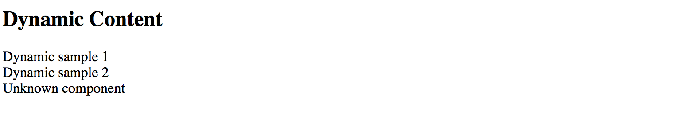
Runtime context
The easiest way to maintain different types of dynamic components in the code is to build a common interface or an abstract class with a shared API. For example:
abstract class DynamicComponent {
context: any;
}
Note that for the sake of simplicity we are declaring context property of any type.
In real-life scenarios, however, you may want to use some particular type to benefit from the static checks the Typescript compiler provides.
Now you can update all previously created components to expose the DynamicComponent class and take context into account.
@Component({
selector: 'app-dynamic-sample-1',
template: `<div>Dynamic sample 1 ({{context?.text}})</div>`
})
export class DynamicSample1Component extends DynamicComponent {}
@Component({
selector: 'app-dynamic-sample-2',
template: `<div>Dynamic sample 2 ({{context?.text}})</div>`
})
export class DynamicSample2Component extends DynamicComponent {}
@Component({
selector: 'app-unknown-component',
template: `<div>Unknown component ({{context?.text}})</div>`
})
export class UnknownDynamicComponent extends DynamicComponent {}
Next, the DynamicContentComponent needs updates to receive the value of the context from the outside using bindings,
and pass it to the underlying child component.
export class DynamicContentComponent implements OnInit, OnDestroy {
// ...
@Input()
context: any;
ngOnInit() {
if (this.type) {
// ...
let instance = <DynamicComponent> this.componentRef.instance;
instance.context = this.context;
}
}
}
That is it, and we are ready to test the whole flow.
Add a simple object to the main application component class to use as a context value for the dynamic elements:
// src/app.component.ts
export class AppComponent {
context: { text: string } = {
text: 'test'
}
}
Now bind this context to all three components we declared earlier in the template:
<!-- src/app.component.html -->
<h3>Context: <input type="text" [(ngModel)]="context.text"></h3>
<app-dynamic-content type="sample1" [context]="context"></app-dynamic-content>
<app-dynamic-content type="sample2" [context]="context"></app-dynamic-content>
<app-dynamic-content type="some-other-type" [context]="context"></app-dynamic-content>
To demonstrate "live updates" feature, we add an input element to the page.
The element is using "two-way" binding to the context.text property.
According to our setup, all dynamically created components should automatically reflect the new value as we type.
Note that to use ngModel directive you need to import and reference the FormModule
within your main application module like in the example below:
// src/app/app.module.ts
// ...
import { FormsModule } from '@angular/forms';
@NgModule({
// ...
imports: [
BrowserModule,
FormsModule
],
// ...
})
export class AppModule { }
The setup is ready, and you can run your web application to see it in action.
By default, it should be displaying the test value within each dynamically created component.
Try typing some text in the context input to see all of those components' titles change on the fly.

Typical use cases
Dynamic forms and form persistence is the best example of where you might need the features we tried above.
If you need displaying a form or a complex component based on some definition file (JSON, XML, or other), you may end up creating a dynamic component that builds final content based on the schema and/or persisted state, and a form component built from multiple dynamic content containers.
Source Code
You can find the source code in the angular/components/dynamic-content folder.
Runtime Compilation
For some advanced scenarios, you might want to take full control over Angular component and template compilation.
In this part, we are going to implement the following features:
- allow a user to define the component template
- compile a
Componenton the fly with user defined template and the underlying class - compile a
NgModuleon the fly with the component created in the previous step - display newly created component on the page
Let's start by generating a separate scaffold for the component by utilizing the Angular CLI tools:
ng g component runtime-content
You can take initial implementation from the DynamicContentComponent we created in previous chapters.
The component template needs a predefined injection point:
<!-- src/app/runtime-content/runtime-content.component.html -->
<div>
<div #container></div>
</div>
Also, we map #container element to the underlying container property of the component class.
// src/app/runtime-content/runtime-content.component.ts
import { /*...,*/ ViewChild, ViewContainerRef } from '@angular/core';
@Component({/*...*/})
export class RuntimeContentComponent {
@ViewChild('container', { read: ViewContainerRef })
container: ViewContainerRef;
}
The main idea behind the new component we introduce is to allow a user to define HTML template on the fly. So let's add a basic UI for editing:
<!-- src/app/runtime-content/runtime-content.component.html -->
<div>
<h3>Template</h3>
<div>
<textarea rows="5" [(ngModel)]="template"></textarea>
</div>
<button (click)="compileTemplate()">Compile</button>
<h3>Output</h3>
<div #container></div>
</div>
Note that to use ngModel directive you must import a FormsModule into your main application module.
You should have it already configured from the previous part of the chapter where we created the DynamicContent component.
Set the default template value to something the user can compile without typing beforehand. That should help us testing the flow as well:
@Component({/*...*/})
export class RuntimeContentComponent {
// ...
template = '<div>\nHello, {{name}}\n</div>';
}
When the main page gets rendered it should look similar to the following:

Now the most important part of the component implementation, the runtime compilation:
// src/app/runtime-content/runtime-content.component.ts
import { /*...,*/ Compiler, ComponentFactory, NgModule } from '@angular/core';
import { CommonModule } from '@angular/common';
@Component({/*...*/})
export class RuntimeContentComponent {
// ...
private createComponentFactorySync(
compiler: Compiler,
metadata: Component,
componentClass: any
): ComponentFactory<any> {
const cmpClass = componentClass || class RuntimeComponent {
name = 'Denys'
};
const decoratedCmp = Component(metadata)(cmpClass);
@NgModule({
imports: [CommonModule],
declarations: [decoratedCmp] }
)
class RuntimeComponentModule { }
const module = compiler.compileModuleAndAllComponentsSync(
RuntimeComponentModule
);
return module.componentFactories.find(
f => f.componentType === decoratedCmp
);
}
}
The code above takes custom metadata and optionally a component class reference via the componentClass parameter.
If you do not provide the class as part of the createComponentFactorySync call,
the fallback RuntimeComponent one gets used instead.
The fallback class also has a name property predefined.
That is what we are going to use for testing.
const cmpClass = componentClass || class RuntimeComponent {
name = 'Denys'
};
The resulting component also gets decorated with the metadata we provide:
const decoratedCmp = Component(metadata)(cmpClass);
Next, a component gets created with the predefined CommonModule import.
You may extend the list if you want to support more functionality.
We also put our component as part of the module's declarations section as per Angular requirements.
Finally, the function uses Angular Compiler service to compile the module and all included components.
Compiled module provides access to the underlying component factories, and this is exactly the feature we need.
For the last step, we need to wire the Compile button with the following method:
@Component({/*...*/})
export class RuntimeContentComponent {
// ...
compileTemplate() {
const metadata = {
selector: `runtime-component-sample`,
template: this.template
};
const factory = this.createComponentFactorySync(
this.compiler,
metadata,
null
);
if (this.componentRef) {
this.componentRef.destroy();
this.componentRef = null;
}
this.componentRef = this.container.createComponent(factory);
}
}
Every time the user clicks the Compile button our RuntimeContentComponent component takes the template value,
compiles it to a new component backed by the RuntimeComponent class (with the predefined name property), and renders:
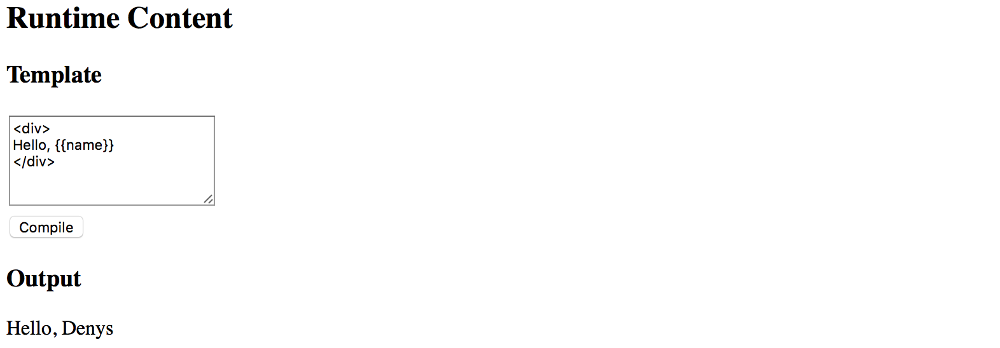
To fully test the flow in action now change the default HTML template value and provide some custom content,
for example changing the colour style of the root div element to blue.
Modify the text content as well.
Click Compile button once again, and you should see the following result now:
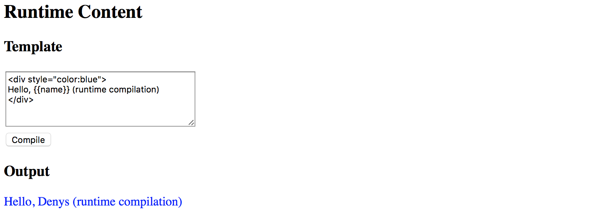
Binding events
Your component users are not limited to user property bindings. The template supports event binding as well.
All event handlers have to be defined in the underlying class or be present
in the RuntimeComponent class we use as a fallback value.
To see events in action let's modify the fallback class and add the onClick method like in the following example:
@Component({/*...*/})
export class RuntimeContentComponent {
// ...
private createComponentFactorySync(/*...*/): ComponentFactory<any> {
const cmpClass = componentClass || class RuntimeComponent {
name = 'Denys';
onClick() {
alert('Clicked');
}
};
// ...
}
}
Now you can wire the click events in the template with the onClick method like in the next picture:
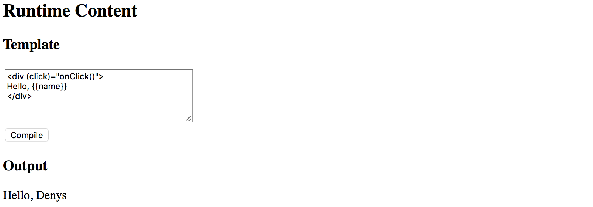
If you press the Compile button once again and then click the div element you should see the browser alert dialogue:

Typical use cases
The best scenario for this feature is when you want to store component templates somewhere in the external storage, and then build components on the fly, similar to how it gets performed in various RAD environments, online layout builders, and other design tools.
Source Code
You can find the source code in the angular/components/dynamic-content folder.
Plugins
Warning: this chapter was written using the earlier versions of Angular and needs review.
Plugins are used to allow third-party developers extend your application by utilizing the redistributable extensions that provide new features for the application without recompiling its code.
In this section, we are going to use multiple ways to extend your application, starting from the string-based configurations to build and compose components at runtime, and finishing with the complete drop-in plugins you can put into the folder to add new features to the running application.
Preparing new project
Use the following Angular CLI command to generate a project with initial Routing support.
ng new plugins --routing
It is essential to have Routing enabled as later in this section we are also going to see how to create new routes dynamically at runtime, and how a plugin can contribute new application routes with external content presented to a user.
Edit the main application component template and replace the HTML markup that Angular CLI generates by default with the following one:
<!-- src/app/app.component.html -->
<h1>Plugins</h1>
<router-outlet></router-outlet>
That is pretty much all to get started with extensibility.
You can test the project by running the ng start --open command,
to see that everything compiles and runs fine.
After that, proceed to the next section below.
Source Code
You can find the source code in the angular/plugins folder.
Building components based on string names
The first thing we are going to start with is related to creating components based on their string names, either types or aliases.
This feature allows to you have configurable configuration files or custom layout definitions that instruct your application what components to use for the particular scenarios.
A good example is a dynamic sidebar that can contain various components or mini-widgets based on the configuration file. Users or developers can change the settings to display only individual components, like a "weather widget" or "notification panel", can provide a different order of rendering, and many other options.
The example above is not a fully-fledged plugin approach, as our application still "knows" about all possible component types, and all components and templates get compiled and bundled as part of the application. However, we are taking that scenario as a simplified case to see how to use the Angular compiler at runtime. That should give us a base experience for more advanced scenarios that we are going to implement later in this chapter.
I strongly recommend creating a separate module that contains all the configurable components that you plan to create at runtime. That should significantly simplify future maintenance and discovery of such components, and you are going to see that shortly in practice.
Let's use Angular CLI once again to generate a new flat module and call it plugins:
ng g module plugins --flat --module=app
Note the --module=app switch we are using in this case.
It instructs Angular CLI to also include our newly generated module into the main application module.
The --flat switch forces the CLI to generate module file in the application source folder,
without creating a separate subfolder as it does for components, directives and other Angular entities.
The console output in your case should look similar to the next example:
create src/app/plugins.module.ts (191 bytes)
update src/app/app.module.ts (465 bytes)
While we are at the command line, let's also create two components page1 and page2.
These are the components we would like to create dynamically.
Moreover, you can save some time by using the --module switch
to include both components into the "plugins" module like in the code below:
ng g component page1 --module=plugins
ng g component page2 --module=plugins
Now, feel free to inspect what you have as a result in the plugins module
that should reside in the src/app folder and contain references to both
Page1Component and Page2Component components.
The Angular CLI also imports the most frequently used CommonModule module for you:
// src/app/plugins.module.ts
import { NgModule } from '@angular/core';
import { CommonModule } from '@angular/common';
import { Page1Component } from './page1/page1.component';
import { Page2Component } from './page2/page2.component';
@NgModule({
imports: [
CommonModule
],
declarations: [Page1Component, Page2Component]
})
export class PluginsModule { }
Both page component classes should be almost identical and look similar to the following:
// src/app/page1/page1.component.ts
import { Component, OnInit } from '@angular/core';
@Component({
selector: 'app-page1',
templateUrl: './page1.component.html',
styleUrls: ['./page1.component.css']
})
export class Page1Component implements OnInit {
constructor() { }
ngOnInit() {
}
}
The Angular CLI provides dummy HTML templates in the form of <component-name> works! for every component it generates.
That saves much time when you are preparing project structure or have a quick prototyping phase.
As we focus on the architecture and dynamic compilation, it is not very important what templates component have. Let's leave the default values for now, and you can revisit that later.
Next, we need to create a couple of buttons to trigger component creation, and a placeholder to insert the newly compiled content.
Update the main application component template like in the example below.
<!-- src/app/app.component.html -->
<h1>Plugins</h1>
<ul>
<li>
<button (click)="createView('app-page1')">page 1</button>
</li>
<li>
<button (click)="createView('app-page2')">page 2</button>
</li>
</ul>
<div #content></div>
<router-outlet></router-outlet>
Pay attention to the empty div element: <div #content></div>.
That is the place we are going put our dynamic components.
You can put this element to any other places, as long as it has the content Angular reference name,
the component controller is going to find it.
Now, if you run the application, the main page should look like in the next picture:
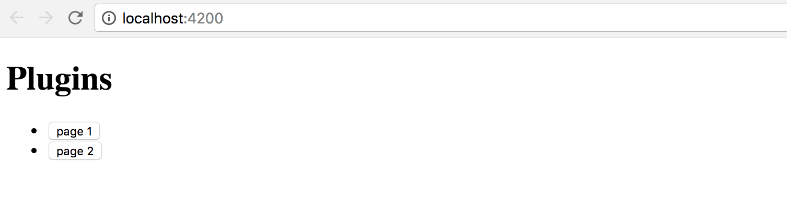
We also need to finish the component controller preparation.
The class should get the reference to the content placeholder and have the createView handler for the buttons:
// src/app/app.component.ts
import { Component, Compiler, ViewChild, ViewContainerRef } from '@angular/core';
import { PluginsModule } from './plugins.module';
@Component({
selector: 'app-root',
templateUrl: './app.component.html',
styleUrls: ['./app.component.css']
})
export class AppComponent {
@ViewChild('content', { read: ViewContainerRef })
content: ViewContainerRef;
constructor(private compiler: Compiler) {
}
createView(name: string) {
}
}
Note that we also import the PluginsModule, as it contains all the components
we would like to find and create according to our initial scenario.
We inject the instance of the Compiler class into the component constructor
and use it to compile the PluginsModule on the fly.
The private module variable is going to hold the resulting instance
so that we do not compile the module more times than it is needed.
// src/app/app.component.ts
import { Component, Compiler, ViewChild, ViewContainerRef } from '@angular/core';
import { PluginsModule } from './plugins.module';
@Component({/*...*/})
export class AppComponent {
@ViewChild('content', { read: ViewContainerRef })
content: ViewContainerRef;
private module;
constructor(private compiler: Compiler) {
this.module = this.compiler.compileModuleAndAllComponentsSync(
PluginsModule
);
}
createView(name: string) {
const factory = this.module.componentFactories.find(
f => f.selector === name
);
this.content.clear();
this.content.createComponent(factory);
}
}
As you can see above, as long as we have the compiled module instance, we can perform searches to find a component factory based on specific metadata. In the particular case, we are interested in the selector names.
As soon as factory got found, we can clear the content placeholder,
and create a new instance of the component in that place.
Run the application and click the first button page 1 on the main page.
You should see the page1 works! label immediately appear at the bottom of the page.

Now click the second button, and this time the placeholder content
is replaced with the page2 works! text that comes with the Page2Component
instance our application component creates on the fly.

Congratulations on having the first step complete.
You are now able to take a string, map it to the component selector, and build the corresponding component at runtime.
Loading configuration from external sources
The whole idea of string to component type mapping usually arises when the exact values are coming from the external sources, like configuration files. Otherwise, you could just declare the needed component tags in the HTML template without any compilation.
As we have started this chapter with the example of the configurable Sidebar component,
let's go ahead and introduce a base implementation that takes external
plugins.config.json file as a configuration, and builds a set of components.
Below is our configuration file that is going to reside in the src/assets folder.
Upon startup, the Angular server automatically exposes this folder to the application access
and also copies its content to the output directory during production builds.
src/assets/plugins.config.json:
{
"sidebar": {
"components": [
"app-page1",
"app-page2"
]
}
}
So we got the sidebar with two components app-page1 and app-page2 defined by default.
Let's now generate the corresponding component by utilizing the following command:
ng g component sidebar --module=app
As we now have more than one module, we need to tell Angular CLI where to put the resulting component.
In our case, it is app that corresponds to the app.module.ts file.
In the main application template, append the Configurable Sidebar header element
together with the newly introduced app-sidebar tag:
<!-- src/app/app.component.html -->
<!-- ... -->
<h1>Configurable Sidebar</h1>
<app-sidebar></app-sidebar>
You also need to import the HttpClientModule to allow your application components
and services make Http calls with the help of the HttpClient instance.
// src/app/app.module.ts
//...
import { HttpClientModule } from '@angular/common/http';
@NgModule({
declarations: [
/*...,*/
SidebarComponent
],
imports: [
/*...,*/
HttpClientModule
],
entryComponents: [/*...*/],
providers: [],
bootstrap: [AppComponent]
})
export class AppModule { }
Next, edit the SidebarComponent template, and update the default auto-generated content with the following snippet:
<!-- src/app/sidebar/sidebar.component.html -->
<p>
Sidebar
</p>
<div #content></div>
Similar to previous examples, we have the placeholder div element that we reference as content,
and we compile the PluginsModule module to get access to all its factories at the runtime:
// src/app/sidebar/sidebar.component.ts
import {
/*...,*/
ViewChild, ViewContainerRef, AfterViewInit, Compiler
} from '@angular/core';
import { HttpClient } from '@angular/common/http';
import { PluginsModule } from '../plugins.module';
@Component({/*...*/})
export class SidebarComponent implements AfterViewInit {
@ViewChild('content', { read: ViewContainerRef })
content: ViewContainerRef;
private module;
constructor(private http: HttpClient,
private compiler: Compiler) {
this.module = compiler.compileModuleAndAllComponentsSync(
PluginsModule
);
}
ngAfterViewInit() {
}
}
We use the ngAfterViewInit lifecycle hook as we need access to the content placeholder.
You can also mark the handler as async to get the benefits of the async / await support that Typescript provides:
// src/app/sidebar/sidebar.component.ts
export class SidebarComponent implements AfterViewInit {
/*...*/
async ngAfterViewInit() {
const url = '/assets/plugins.config.json';
const config = await this.http.get(url).toPromise();
console.log(config);
}
}
Optimization
Typically you should be aiming to have a separate application service to deal with HTTP and configuration loading.
In that case, you do not repeat the same calls in every component, get a better separation of concerns and improved unit testing support.
If you now switch to the browser tab with your application and run the developer tools, the console output should be similar to the next one:

I strongly recommend introducing a separate interface that describes the content of the configuration file. In the long run, it is going to help you with type checks, addresses typos and errors at early stages.
For the sake of simplicity, let's create an interface called AppConfig in the same sidebar.component.ts file.
You can later extract it to a separate file if there's more than one place to use it.
interface AppConfig {
sidebar: {
components: string[]
};
}
Now you can use this interface with HttpClient like this:
export class SidebarComponent implements AfterViewInit {
// ...
async ngAfterViewInit() {
const url = '/assets/plugins.config.json';
const config = await this.http.get<AppConfig>(url).toPromise();
console.log(config);
}
}
As a bonus, you are going to get automatic completion for your configuration files when working with typed variables:
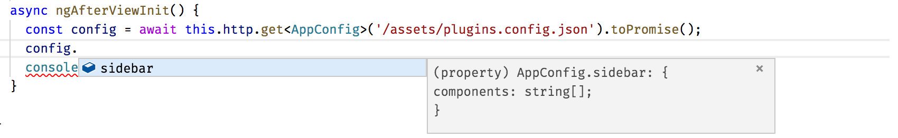
We have already covered how to search for the component factories using selector values; this can be easily used now with the external configuration to build multiple components and inject them into the placeholder in the specific order:
export class SidebarComponent implements AfterViewInit {
// ...
async ngAfterViewInit() {
const url = '/assets/plugins.config.json';
const config = await this.http.get<AppConfig>(url).toPromise();
this.createSidebarComponents(config.sidebar.components);
}
private createSidebarComponents(selectors: string[]) {
this.content.clear();
for (let i = 0; i < selectors.length; i++) {
const factory = this.module.componentFactories.find(
f => f.selector === selectors[i]
);
this.content.createComponent(factory, i);
}
}
}
The ViewContainerRef.createComponent method handles the correct positioning of all generated instances.
It accepts the exact index of the entry as the second parameter.
Run or reload the project and you are going to see the following content on the main page:

Let's try to test the configuration is indeed dynamic. Edit the JSON file and change the order of the components like in the following example:
{
"sidebar": {
"components": [
"app-page2",
"app-page1"
]
}
}
Next, reload the application page or wait till the Angular CLI web server automatically reloads. You should now see components created in the order we configured:
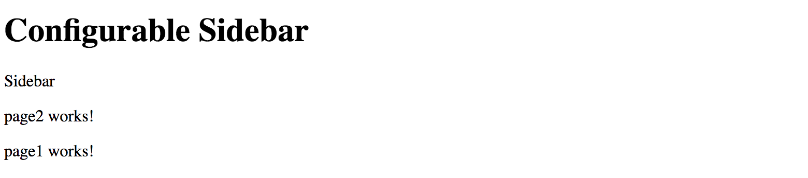
That means you are now ready to build composite components driven by the external configuration. With the approach above, you can quickly create applications that change the layout without rebuilding and re-deploying new version to the server.
Source Code
You can find the source code in the angular/plugins folder.
Dynamically changing application routes
If you are building a scalable web application, then you are most probably already using routing feature and application Router that Angular provides.
Besides the navigation patterns, Angular Router provides a way to partition your application into smaller chunks, load them on demand using Lazy Loading feature. We are going to dwell on Lazy Loading in the separate chapter, and meanwhile, let's see how you can extend the router on the fly, and inject new, or modify existing routes in the running application.
If you remember, at the beginning of the chapter, we have enabled the routing support via the --routing switch.
With that switch, Angular CLI automatically generates a separate AppRoutingModule module file
with the necessary scaffold, stored in the app-routing.module.ts file.
Let's generate a couple of components to use for navigation. We are going to call them Home and About:
ng g component home --module=app
ng g component about --module=app
Now edit the app-routing.module.ts file and introduce new routes backed by the components we have just generated.
The about route corresponds to the /about URL and displays the AboutComponent component.
By default, when the application starts, it is going to render the HomeComponent.
// src/app/app-routing.module.ts
import { NgModule } from '@angular/core';
import { Routes, RouterModule } from '@angular/router';
import { HomeComponent } from './home/home.component';
import { AboutComponent } from './about/about.component';
const routes: Routes = [
{
path: '',
component: HomeComponent
},
{
path: 'about',
component: AboutComponent
}
];
@NgModule({
imports: [RouterModule.forRoot(routes)],
exports: [RouterModule]
})
export class AppRoutingModule { }
Next, we create the links on the home page to allow the users navigate to the corresponding pages.
Find the router-outlet tag on the main application template, and replace it with the following snippet:
<!-- src/app/app.component.html -->
<!-- ... -->
<h1>Routes</h1>
<ul>
<li>
<a routerLink="/">Home</a>
</li>
<li>
<a routerLink="/about">About</a>
</li>
</ul>
<router-outlet></router-outlet>
Start the application, and you should see two links together with the label home works! underneath.
That is our default Home component already loaded in the router outlet area.

Click the About link to see the AboutComponent, that proves the router is up and running,
and ready for our further customizations.
For the next step, we need one more component that we are going to create dynamically at runtime.
Let's imagine that we have a configuration switch or settings that allows us to enable the Settings feature for our application.
Use Angular CLI to create a new SettingsComponent and automatically declare it within the App module:
ng g component settings --module=app
Note that Settings component is part of the application, but it gets created dynamically.
According to Angular rules we need to register in the module's entryComponents section
all the components that we are going to create dynamically by using their factories.
Update the main application module according to the example of the code below:
// src/app/app.module.ts
// ...
import { SettingsComponent } from './settings/settings.component';
@NgModule({
declarations: [
/*...,*/
SettingsComponent
],
imports: [ /*...*/ ],
entryComponents: [
SettingsComponent
],
providers: [],
bootstrap: [AppComponent]
})
export class AppModule { }
We also need a way to render and test all dynamic routes.
Let's create the collection variable to hold the information we need to create the list of links on the main page,
similar to the Home and About that we have created earlier.
Our main component class also needs importing and injecting the Router instance.
// src/app/app.component.ts
// ...
import { Router } from '@angular/router';
@Component({/*...*/})
export class AppComponent {
// ...
links: { text: string, path: string }[] = [];
constructor(/*...,*/ private router: Router) {
// ...
}
// ...
}
To display a link, we need a title and a route path value.
For a minimal Router entry, we also need the type of the component to associate with the given route.
That means we can create the following method to register a new route and also fill the links collection:
// src/app/app.component.ts
createRoute(text: string, path: string, componentType: any) {
this.router.config.unshift({
path: path,
component: componentType
});
this.links.push({ text, path });
}
The main point of interest for us, in this case, is the router.config property
that holds a collection of all registered routes available to the application and Router.
The "createRoute" method inserts a new record containing a path and the component Type.
Why is it essential to use unshift instead of the push method for the routes array?
Very often the last route in the collection is a catch-all fallback path
that handles missing pages and redirects to some error or page not found component,
like in the following example:
const appRoutes: Routes = [
{
path: '',
component: HomeComponent
},
{ path: '**', component: PageNotFoundComponent }
];
By pushing new content to the routes collection we risk adding it after the catch-all path,
and so the routes are not going to be available at runtime.
That is why we prepend new routes by using Array.prototype.unshift
rather than appending them with Array.prototype.push function.
Let's try the route generator out with the SettingsComponent we have recently created.
Update the main application component class with the necessary imports,
and call the createRoute method in the class constructor
to prepend the Settings route pointing to the /settings URL like in the next snippet:
// src/app/app.component.ts
// ...
import { SettingsComponent } from './settings/settings.component';
@Component({/*...*/})
export class AppComponent {
// ...
constructor(private compiler: Compiler, private router: Router) {
// ...
this.createRoute('Settings', 'settings', SettingsComponent);
}
createView(name: string) {
// ...
}
createRoute(text: string, path: string, componentType: any) {
this.router.config.unshift({
path: path,
component: componentType
});
this.links.push({ text, path });
}
}
Finally, we need to create a list of new routes on the main page.
You should already have an unordered list with the Home and About links,
let's update it with the dynamic portion now:
<!-- src/app/app.component.html -->
<!-- ... -->
<h1>Routes</h1>
<ul>
<li><a routerLink="/">Home</a></li>
<li><a routerLink="/about">About</a></li>
<li *ngFor="let link of links">
<a [routerLink]="link.path">
{{ link.text }}
</a>
</li>
</ul>
<router-outlet></router-outlet>
As soon as you reload the page, you are going to see three links in the Routes section:
Home, About and the newly introduced Settings.
Click on the Settings one, and you are going to see the setting works! label in the router outlet area.
That means your application successfully renders the content you provide at runtime, congratulations!

We have walked through a simplified scenario for route creation.
As you can now imagine, that approach can be used in more sophisticated cases, when you store route names, paths and component aliases in the external configuration files, and load them on demand together with new route generation, as we did earlier in this chapter.
Source Code
You can find the source code in the angular/plugins folder.
External plugins
We have finally approached the most advanced and the most valuable area - plugins that are loaded by the application at runtime from external sources, and provide new features based on specific extension points.
For generic plugin capabilities we need to have application support at least for the following items:
- defining an extension point in the application
- essential plugin registration and management APIs
- loading external modules at runtime
- executing or instantiating external components
Traditionally, application or framework developers provide a set of extension points that third-party developers can use to build plugins or extensions. Let's take the Routing example we used across this chapter as a perfect scenario for extensibility.
We are going to enable other developers to build extra components and register new routes in our application.
Ultimately it should be possible to drop the JavaScript file in some specialized modules folder
and register the module in the application configuration file.
The application should not "know" about loaded types, and the whole plugin integration should happen dynamically,
without recompiling the application or even restarting the web server.
Extension decorator
It is essential to keep the plugin feature as simple as possible
so that your third-party developers do not study a new programming language
or the practices and patterns that are relevant only to your particular implementation.
The ES2016 decorator pattern might be the best choice, as Angular developers
are already familiar with decorators and annotations.
Let's imagine we have a unique @Extension decorator to mark all the components
we want the target application to discover and use.
We could also provide some extra metadata for such a decorator,
for example, public alias to use in the configuration files,
maybe an icon or even a list of dependencies on other plugins or modules.
For example, it can look like the following when applied to a class:
@Extension('my-extension')
class MyExtension {
// ...
}
Decorators can be chained, so that means we can use them with Angular components like this as well:
@Extension('my-button')
@Component({
selector: 'my-button,
templateUrl: 'my-button.html'
})
export class MyButtonComponent {
// ...
}
As you can see, we need at least one project to hold the Extension and other APIs
that we share across all plugin implementations, let's call it Plugins Core.
It can also contain some management services, like Plugin Manager
to help the end application maintain plugins easily.
Finally, we are going to extend the main application to allow adding new routes and components via the configuration file. For the current scenario, our simple extension point is a Router extension and new pages for the application, but there can be many different extension points in the future.
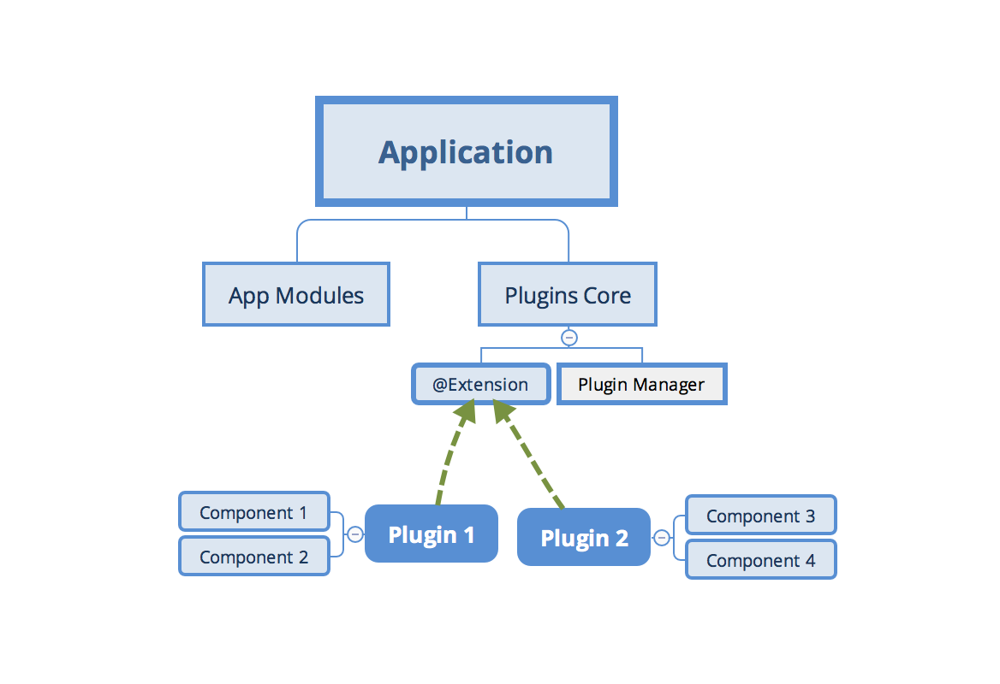
Creating a Plugins Core library
Create a separate plugins-core folder for the shared Extension APIs to use with all new plugins.
I am going to use the Rollup.js to build and bundle the code.
However, you can use any other means to create a redistributable Angular library.
You can refer to the Reusable component libraries chapter for more details.
Rollup.js
Rollup is a module bundler for JavaScript which compiles small pieces of code into something larger and more complex, such as a library or application.
To get more information about Rollup, please refer to the official documentation: https://rollupjs.org
Note, however, that Rollup is not the only option for building redistributable libraries. You can also check the following alternatives:
Create a new package.json file with the following content to configure dependencies for the new project:
package.json:
{
"name": "plugins-core",
"version": "1.0.0",
"main": "dist/bundle.js",
"license": "MIT",
"scripts": {
"build": "rimraf dist/bundle.js && rollup -c"
},
"devDependencies": {
"babel-core": "^6.26.0",
"babel-plugin-external-helpers": "^6.22.0",
"babel-plugin-transform-decorators-legacy": "^1.3.4",
"babel-preset-env": "^1.6.1",
"rimraf": "^2.6.2",
"rollup-plugin-babel": "^3.0.3",
"rollup-plugin-json": "^2.3.0",
"rollup-plugin-node-resolve": "^3.0.2"
}
}
Note the scripts section and the "build" command.
You are going to need it later to produce the bundle to use with the main application.
Run the following command now to install all dependencies:
npm install
The Rollup is using Babel libraries under the hood. We need to provide the following configuration to enable support for decorators:
.babelrc:
{
"presets": [
["env", {
"modules": false
}]
],
"plugins": [
"external-helpers",
"transform-decorators-legacy"
]
}
The last project preparation step is the configuration file for the Rollup itself.
Use the following source code for the minimal working configuration that takes src/main.js file as an input,
and produces the dist/bundle.js file as the bundled output.
// rollup.config.js
import json from 'rollup-plugin-json';
import resolve from 'rollup-plugin-node-resolve';
import babel from 'rollup-plugin-babel';
export default {
input: 'src/main.js',
output: {
file: 'dist/bundle.js',
format: 'system'
},
plugins: [
json(),
resolve({
// pass custom options to the resolve plugin
customResolveOptions: {
moduleDirectory: 'node_modules'
}
}),
babel({
exclude: 'node_modules/**' // only transpile our source code
})
]
}
Finally, we are ready to start implementing our Extension decorator.
The code is pretty simple, given that decorators are JavaScript functions:
// src/extension.js
export function Extension(name, deps) {
return (constructor) => {
Extension.prototype.registry[name] = {
ctor: constructor,
deps: deps || []
};
};
}
Extension.prototype.registry = {};
As per our design, the Extension decorator is going to keep a registry of all the classes it has decorated.
That enables quick access to all the registered extensions at runtime
without extra initialization overhead for each decorated class or component.
Our decorator requires a public name of the decorated element, to use within application configurations. We also reserve an optional array of dependencies that our plugin requires when loaded into the application. Feel free to add more properties later on when your plugin architecture evolves.
While we are here, let's also provide a couple of utility functions to generate a list of providers.
One is getProviders, to be able using it within the Angular Injectors and modules.
Another one is getExtensionType to allow us quickly resolving extension type (or constructor) based on the public name.
You are going to see both of them in action shortly.
// src/extension.js
// ...
Extension.prototype.getProviders = function () {
var registry = this.registry;
return Object.keys(registry).map(function (key) {
return {
provide: key,
useClass: registry[key].ctor,
deps: registry[key].deps
};
});
};
Extension.prototype.getExtensionType = function (name) {
return this.registry[name].ctor;
}
For the next step, we introduce a PluginManager class to provide a single place
for controlling and using our plugins at runtime.
Typically it is the end application that calls these methods when setting up the extension points or resolving and compiling components coming from the plugin library.
// src/plugin-manager.js
import { Extension } from './extension';
export class PluginManager {
getType(name) {
return Extension.prototype.getExtensionType(name);
}
getProviders() {
return Extension.prototype.getProviders();
}
}
Finally, create the main library entry point and export the classes and functions we have created.
Note that we export the instance of the PluginManager as a singleton. That is not mandatory but saves time for creating new instances at the application level, especially when accessing plugins from multiple places and files in the code.
// src/main.js
import { PluginManager } from './plugin-manager';
export { Extension } from './extension';
export const pluginManager = new PluginManager();
That is pretty much all. You can now build the redistributable bundle with the build script:
npm run build
The console output should be similar to the following one:
src/main.js => dist/bundle.js...
created dist/bundle.js in 369ms
For real-life scenarios, you may probably want to publish your redistributable library to NPM, so that developers can install it as part of the application and use as a third party addon.
For demonstration and quick testing purposes let's emulate the NPM deployment behavior
by running the npm link command in the root project folder:
npm link
Now you can run npm link plugins-core in any of your local projects folders,
and emulate the process of installing from NPM.
The main benefit is that you can keep working on the library code, all applications and libraries that link it are going to get updates automatically.
Once you are have finished with the development, you can, of course,
use the real publishing via npm publish commands, but this is out of our current scope.
You shall see the linking example later in this chapter.
Source Code
You can find the source code in the angular/plugins-core folder.
Creating an example Plugin library
We have created a shared Plugins Core library with the previous steps. It is now time to build our first plugin library.
Create a separate plugins-example folder and place the following package.json file there:
package.json:
{
"name": "plugins-example",
"version": "1.0.0",
"main": "dist/bundle.js",
"license": "MIT",
"scripts": {
"build": "rimraf dist && rollup -c"
},
"devDependencies": {
"rimraf": "^2.6.2",
"rollup-plugin-node-resolve": "^3.0.2",
"rollup-plugin-typescript": "^0.8.1",
"rollup-plugin-typescript2": "^0.10.0",
"typescript": "^2.6.2"
},
"dependencies": {
"@angular/core": "^5.2.2",
"rollup": "^0.55.1"
}
}
As with the previous project, install the dependencies running the command below:
npm install
Our project needs to depend on the plugins-core library.
Typically we should be adding it to the package file and installing with all other dependencies, however for the sake of simplicity we are going to use "npm link" feature to provide a live link to the library. That helps to work on both projects at the same time without publishing to NPM.
Run the following command in the project root to establish a link:
npm link plugins-core
As we are going to create Angular components, we need to setup the TypeScript integration for the Rollup.
Put the following tsconfig.json file in the project root to enable basic support we need right now:
tsconfig.json:
{
"compilerOptions": {
"target": "es5",
"module": "system",
"lib": ["es2017", "dom"],
"declaration": true,
"sourceMap": true,
"removeComments": true,
"moduleResolution": "node",
"typeRoots": [ "node_modules/@types" ],
"experimentalDecorators": true,
"emitDecoratorMetadata": true
}
}
TypeScript Configuration
You can always generate a recommended configuration file by running the
tsc --initcommand in any folder.That requires, however, a TypeScript to be installed globally via
npm install -g typescriptcommand.
Now finish the project scaffold setup by also adding the Rollup configuration file like below:
// rollup.config.js
import resolve from 'rollup-plugin-node-resolve';
import typescript from 'rollup-plugin-typescript2';
export default {
input: 'src/main.ts',
output: {
file: 'dist/bundle.js',
format: 'system'
},
plugins: [
resolve({
// pass custom options to the resolve plugin
customResolveOptions: {
moduleDirectory: 'node_modules'
}
}),
typescript({
typescript: require('typescript')
})
],
external: [
'plugins-core',
'@angular/core'
]
}
Please pay attention to the external section of the Rollup configuration.
It contains references to the libraries in your package.json that should never get bundled into the resulting output.
That means that every plugin library is not going to contain the full copy of the Angular or another version of the plugins-core.
Having such dependencies marked as external, however, requires the main application to import them alongside our plugins.
If your library depends on other Angular libraries, like @angular/forms or @angular/http,
include those in the external section too.
Let's now create the first plugin component marked with our Extension decorator.
It is going to be a dummy button element that we reference as my-button extension.
// src/my-button/my-button.component.ts
import { Component, OnInit, NgModule } from '@angular/core';
import { Extension } from 'plugins-core';
@Extension('my-button', [])
@Component({
selector: 'my-button',
template: `<button>My Button</button>`
})
export class MyButtonComponent implements OnInit {
ngOnInit() {
console.log('My Button Init');
}
}
Create one more component with a label element and called my-label:
// src/my-label/my-label.component.ts
import { Component, OnInit, NgModule } from '@angular/core';
import { Extension } from 'plugins-core';
@Extension('my-label', [])
@Component({
selector: 'my-label',
template: `<h1>My Label</h1>`
})
export class MyLabelComponent implements OnInit {
ngOnInit() {
console.log('My Label Init');
}
}
Both components also produce log messages to the browser console for testing purposes.
The only thing that is now left is to export both components in the main class.
// src/main.ts
export { MyLabelComponent } from './my-label/my-label.component';
export { MyButtonComponent } from './my-button/my-button.component';
Now run the build script to create a redistributable bundle:
npm run build
Once the compilation completes, the console output should be as follows:
src/main.ts => dist/bundle.js...
created dist/bundle.js in 980ms
Finally, you should also create a link to this project to test the library without publishing to NPM every time you make changes to the project.
npm link
We now got the plugins-core and plugins-example libraries compiled
and ready for use with an Angular application as external plugins.
Source Code
You can find the source code in the angular/plugins-example folder.
Extra libraries and dependencies
Your component library does not restrict you to a particular set of dependencies.
You can add many additional libraries to the rollup configuration,
and plugin components can also have own providers sections to get additional services imported.
For example, you can add a FormBuilder integration using the following steps.
First, update the rollup.config.js file and add @angular/forms to the exclusion list.
That prevents entire forms library from getting bundled into your library output.
export default {
// ...,
external: [
'plugins-core',
'@angular/core',
'@angular/forms'
]
}
Next, import the Forms related types, and update your component decorator to include the FormBuilder provider:
// src/my-label/my-label.component.ts
import { Component, OnInit, NgModule } from '@angular/core';
import { FormBuilder, FormGroup, Validators } from '@angular/forms';
import { Extension } from 'plugins-core';
@Extension('my-label', [])
@Component({
selector: 'my-label',
template: `<h1>My Label</h1>`,
providers: [ FormBuilder ]
})
export class MyLabelComponent implements OnInit {
ngOnInit() {
console.log('My Label Init');
}
}
Once you have component configuration set, you can import the FormBuilder and use its APIs from within the plugin component.
// src/my-label/my-label.component.ts
export class MyLabelComponent implements OnInit {
form: FormGroup;
constructor(private fb: FormBuilder) {
this.form = fb.group({
name: fb.group({
first: ['Nancy', Validators.minLength(2)],
last: 'Drew'
}),
email: ''
});
}
ngOnInit() {
console.log('My Label Init');
console.log('FB:', this.fb);
console.log('Form:', this.form);
}
}
Finally, you need updating the SystemJS settings of the main application to include extra libraries to use for plugins.
In the example below I am adding @angular/common, @angular/forms and @angular/platform-browser to the list.
Those libraries will get available for all the loaded plugins.
src/assets/plugins.config.json:
{
...,
"system": {
"baseURL": "/assets/modules",
"paths": {
"npm:": "https://unpkg.com/"
},
"map": {
"@angular/core": "npm:@angular/core/bundles/core.umd.js",
"@angular/common": "npm:@angular/common/bundles/common.umd.js",
"@angular/forms": "npm:@angular/forms/bundles/forms.umd.js",
"@angular/platform-browser": "npm:@angular/platform-browser/bundles/platform-browser.umd.js",
"rxjs": "npm:rxjs",
"plugins-core": "/modules/plugins-core/bundle.js",
"plugins-example": "/modules/plugins-example/bundle.js"
}
},
}
You might need to import FormsModule and ReactiveFormsModule also to the root application module.
// src/app/app.component.ts
import { FormsModule, ReactiveFormsModule } from '@angular/forms';
@NgModule({
// ...,
imports: [
BrowserModule,
HttpModule,
FormsModule, ReactiveFormsModule
],
// ...
})
export class AppModule { }
Providing dependencies for your plugins
As I have mentioned earlier, you have full control over what the dynamic module contains. This opens the door to at least two great scenarios for injecting external content into your plugins at run-time.
We have already touched the first one.
That is the imports section and extra libs you can provide for every plugin you construct.
That can be Forms modules, Material modules, you custom or third-party libraries.
Every time we create an instance of the plugin component of the componentType,
the component templates can use form fields, and material buttons provided with the MatButtonModule module.
const RuntimeModule = NgModule({
imports: [
CommonModule,
FormsModule,
ReactiveFormsModule,
MatButtonModule
],
declarations: [
componentType
]
})(class {})
Another way to inject data into the plugin components is by utilizing "providers" section. You can create and pre-configure the services prior to exposing them to components and other services that you resolve and create on the fly.
const RuntimeModule = NgModule({
declarations: [
componentType
],
providers: [
{ provide: Injector, useValue: this.injector },
{ provide: FormBuilder, useValue: this.fb },
{ ... }
]
})(class {})
That is a powerful feature that allows you having complete control over the dependency resolution process for external components.
Loading plugins into the Application
Switch to the plugins application we earlier in this chapter.
Use the following commands to link both plugins-core and plugins-example libraries to emulate installation from NPM:
npm link plugins-core
npm link plugins-example
Also, you need to install a systemjs library.
That is a module loader we are going to use to get our plugins into the running application.
npm install systemjs
SystemJS
Configurable module loader enabling dynamic ES module workflows in browsers and NodeJS. Built with the ES Module Loader project, which is based on principles and APIs from the WhatWG Loader specification, modules in HTML and NodeJS.
For more details please refer to the official project page.
As we are using Angular CLI for the application, the systemjs library needs to be present
within the scripts section of the angular.json configuration file.
angular.json:
{
"$schema": "./node_modules/@angular/cli/lib/config/schema.json",
"project": {
"name": "plugins"
},
"apps": [
{
...,
"scripts": [
"../node_modules/systemjs/dist/system.js"
],
...
}
],
...
}
It would be much easier if we also automate plugin bundle copying process.
According to our design, all external plugins need to reside in the modules folder
of the application, either local or running at the server side.
As we continuously develop our plugin libraries, it is much easier
if Angular CLI automatically copies resulting bundles into appropriate places.
We already linked the libraries via the npm link command, the only thing
that is left is to add extra rules for the assets folder:
angular.json:
{
"$schema": "./node_modules/@angular/cli/lib/config/schema.json",
"project": {
"name": "plugins"
},
"apps": [
{
...,
"assets": [
...,
{
"glob": "bundle.js",
"input": "../node_modules/plugins-core/dist",
"output": "./modules/plugins-core"
},
{
"glob": "bundle.js",
"input": "../node_modules/plugins-example/dist",
"output": "./modules/plugins-example"
}
],
...,
"scripts": [
"../node_modules/systemjs/dist/system.js"
],
...
}
],
...
}
For the next step, we need to provide some basic configuration for SystemJS loader.
The best way would be to re-use the same plugins.config.json configuration file we have created earlier.
In this case, you can manage both the loader and the plugin configuration in the same place,
and also without rebuilding the application.
To keep the configuration short, we are going to load all missing dependencies
directly from the [UNPKG](https://unpkg.com/), a fast CDN for NPM libraries.
The plugins-core and plugins-example point to the local bundle files we copy with the Angular CLI.
src/assets/plugins.config.json:
{
"system": {
"baseURL": "/assets/modules",
"paths": {
"npm:": "https://unpkg.com/"
},
"map": {
"@angular/core": "npm:@angular/core/bundles/core.umd.js",
"rxjs": "npm:rxjs",
"plugins-core": "/modules/plugins-core/bundle.js",
"plugins-example": "/modules/plugins-example/bundle.js"
}
},
"sidebar": {
"components": [
"app-page2",
"app-page1"
]
}
}
Update the application component imports section with the SystemJS type declaration.
That allows us using auto-completion and type checking for the SystemJS APIs:
// src/app/app.component.ts
import {/*...,*/ AfterViewInit} from '@angular/core';
import { HttpClient } from '@angular/common/http';
import { System } from 'systemjs';
declare var SystemJS: System;
As you remember, we can load configuration using HttpClient, and use a TypeScript interface to enable static type checks and IDE support. Let's start with the basic one:
interface PluginsConfig {
system: any;
}
To finish the preparations, add the HttpClient and mark the ngAfterViewInit handler as async,
like in the next example:
// src/app/app.component.ts
@Component({/*...*/})
export class AppComponent implements AfterViewInit {
// ...
constructor(/*...,*/ private http: HttpClient) {
// ...
}
async ngAfterViewInit() {
}
}
Let's try to load the configuration and log its content to the browser console to ensure the file loads fine:
// src/app/app.component.ts
@Component({/*...*/})
export class AppComponent implements AfterViewInit {
// ...
constructor(/*...,*/ private http: HttpClient) {
// ...
}
async ngAfterViewInit() {
const url = '/assets/plugins.config.json';
const config = <PluginsConfig> await this.http.get(url).toPromise();
console.log(config);
}
}
Run the application or reload the page. The developer tools console should look similar to the one below:

Before we load a plugin, the SystemJS loader needs to get configured.
We load and apply settings using the config method like in the next example:
SystemJS.config(config.system);
You can test the loader by importing the plugins-core library:
// src/app/app.component.ts
export class AppComponent implements AfterViewInit {
async ngAfterViewInit() {
const url = '/assets/plugins.config.json';
const config = <PluginsConfig> await this.http.get(url).toPromise();
console.log(config);
SystemJS.config(config.system);
const core = await SystemJS.import('plugins-core');
console.log(core);
}
}
This time the browser console output should contain the plugins-core library content:

Try expanding the Extension and prototype sections in the console to check the registry content.
It should be an empty object like this:
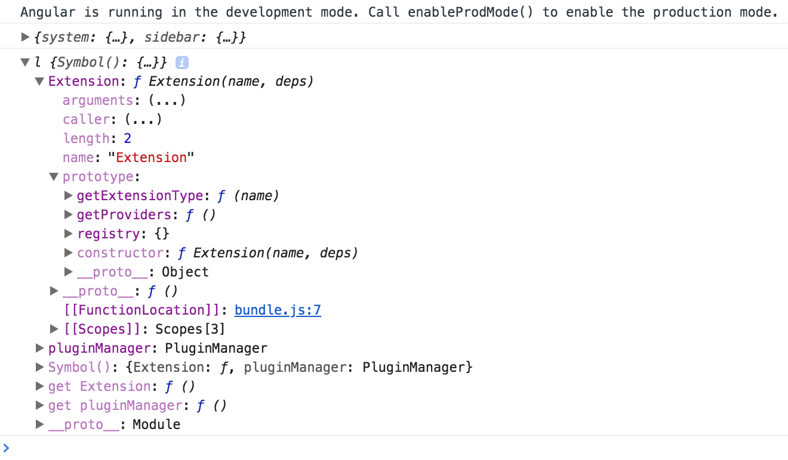
Next, import the plugins-example right after the plugins-core:
// src/app/app.component.ts
const core = await SystemJS.import('plugins-core');
const pluginExample = await SystemJS.import('plugins-example');
console.log(core);
Now, the Extension decorator should contain two entries in the registry.
As you can see from the console output they are my-button and my-label:

You already know the names of the extensions, because you have defined them in the decorators for each component. Also, you have the corresponding libraries loaded into the application at runtime.
It is now possible to use the same technique for dynamic module compilation with the component constructors, fetched using Plugin Manager APIs.
The code below demonstrates the my-label plugin compiled and rendered within the content element,
similar to what we did earlier in this chapter.
// src/app/app.component.ts
export class AppComponent implements AfterViewInit {
async ngAfterViewInit() {
// ...
SystemJS.config(config.system);
const core = await SystemJS.import('plugins-core');
const pluginExample = await SystemJS.import('plugins-example');
console.log(core);
const componentType = core.pluginManager.getType('my-label');
const RuntimeModule = NgModule({
imports: [
// extra modules if needed by your plugins
// for example: FormsModule, HttpClientModule, etc
],
declarations: [componentType]
})(class {});
const module = this.compiler.compileModuleAndAllComponentsSync(
RuntimeModule
);
const factory = module.componentFactories.find(
f => f.componentType === componentType
);
this.content.clear();
this.content.createComponent(factory, 0);
}
}
Dynamic modules and NgModule decorator
Please keep in mind that with the "RuntimeModule" you are creating a real Angular module.
Besides "declarations" section you can reuse all other metadata properties exposed by the "NgModule" decorator.
For example, you can use "imports" to store a set of extra dependencies for your plugins. Or "providers" where you add new, redefine or configure existing providers.
Switch to the running application and reload the page, if you do not have live reloading enabled.
The main page now contains the My Label element.
That is the content of the plugin we have just dynamically loaded.
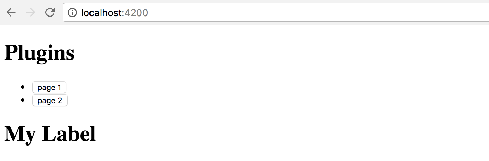
Another challenge to address - dependencies for your plugins.
In most common scenarios the plugin branch needs to be attached to the running application tree, and have access to all the shared infrastructure.
The perfect examples are Authentication layer, Translation services, User Preferences, Application Configuration. Every loaded plugin should not create a new copy, but reuse already configured instances of the services.
You can achieve tight integration of the plugins by using custom Injector instances. It is possible to create the Injector that inherits the main application tree of Injectors, and at the same time contains custom settings that a plugin brings if you need that level of control.
// src/app/app.component.ts
import { /*...,*/ Injector } from '@angular/core';
export class AppComponent implements AfterViewInit {
constructor(private compiler: Compiler,
private router: Router,
private http: HttpClient,
private injector: Injector) {
// ...
}
async ngAfterViewInit() {
// ...
const pluginInjector = Injector.create([
...core.pluginManager.getProviders()
], this.injector);
this.content.clear();
this.content.createComponent(factory, 0, pluginInjector);
}
}
First of all, we import an instance of the Injector into the component class constructor.
That is the same Injector that provides all other dependencies for the given class by the way. It is created for every component and resolves all the required dependencies.
If there are no values registered with the component Injector, the Angular goes up the component tree to the parent component and checks its Injector. It repeats the same procedure until it reaches the top of the application tree and its module.
We take the component injector and create a new instance based on it.
Moreover, we populate the providers section of the current plugin.
That allows a plugin to register new or override existing providers if needed,
and allows Angular traverse the whole injector tree.
const pluginInjector = Injector.create([
...core.pluginManager.getProviders()
], this.injector);
As soon as you have your custom injector, it becomes trivial to create a new component with the factory, corresponding element position and injector instance:
this.content.clear();
this.content.createComponent(factory, 0, pluginInjector);
Note the usage of the Extension.prototype.getProviders that we have created earlier.
That method allows us to collect all components marked with the Extension decorator,
and produce a list of providers and their dependencies, to attach to any custom injector or dynamic module:
// plugins-core:/src/extension.js
Extension.prototype.getProviders = function () {
var registry = this.registry;
return Object.keys(registry).map(function (key) {
return {
provide: key,
useClass: registry[key].ctor,
deps: registry[key].deps
};
});
};
Visually the hierarchy of dependencies and injectors should look like the following:

Setting plugin properties at runtime
We have already used a few times the ViewContainerRef.createContent method to create and inject content.
this.content.clear();
this.content.createComponent(factory, 0, pluginInjector);
The biggest feature of this method is that it returns the instance of the ComponentRef type.
That allows you accessing the real instance of the component you have just created, and setting its properties, or calling methods.

You can try to check how it works by logging the value of one property the plugin defines, for example a form:
console.log(componentRef.instance.form);
Use this technique to set up dynamic components after they get created. You can set any properties and call any methods to provide post-constructor setup, or prime your component with extra infrastructure references.
Sometimes it might be easier for you to set the corresponding properties at run time than piping all injectors and dependencies.
As plugins can be of many types unknown at compile time,
you can create a set of interfaces to provide a contract for the external developers.
For example, you may want all plugin developers to inherit a PluginComponent interface
with a set of properties your application can rely at run-time.
Dynamic Routes with plugin content
We have been using manual import of the plugins by their names so far. In real life, you are most probably going to make the application fully automatic, based on multiple extension points and configuration settings that are coming either from the file or RESTful service call.
Let's introduce an application Router extension point similar to the one we have been using before.
This time, however, the application is going to load routes from the configuration file. Every route now should be powered by the content exposed by the plugin, and not known to the application at compile time.
There may be many ways to express plugins setup in the configuration. Here's a simple example for you to get started:
{
"system": {...},
"sidebar": {...},
"plugins": {
"modules": {
"plugins-core": "/modules/plugins-core/bundle.js" ,
"plugins-example": "/modules/plugins-example/bundle.js"
},
"routes": [
{
"name": "Plugin 1 (label)",
"path": "plugin1",
"component": {
"module": "plugins-example",
"componentType": "my-label"
}
},
{
"name": "Plugin 2",
"path": "plugin2 (button)",
"component": {
"module": "plugins-example",
"componentType": "my-button"
}
}
]
}
}
In our case, we introduce an extra section plugins to our existing plugin.config.json file.
It contains the list of available modules and a couple of routes that we want to create when the application starts.
Each route instance consists of the name, route path, and component information:
module and alias that we used within the Extension decorator.
To enable static checks, let's also extend the PluginsConfig interface:
interface PluginsConfig {
system: any;
plugins: {
modules: any,
routes: Array<{
name: string,
path: string,
component: {
module: string,
componentType: string
}
}>
};
}
Next, edit the ngAfterViewInit hook for the main application component class,
and add the loadExternalRoutes call right after the SystemJS configuration:
// src/app/app.component.ts
export class AppComponent implements AfterViewInit {
// ...
async ngAfterViewInit() {
const url = '/assets/plugins.config.json';
const config = <PluginsConfig> await this.http.get(url).toPromise();
SystemJS.config(config.system);
this.loadExternalRoutes(config);
// ...
}
}
At runtime, we can now quickly get a list of the plugins, their modules and custom routes.
Also, you can now get the corresponding component type using its alias and calling the pluginManager.getType method.
We have already implemented a way to create a dynamic route and display it on the page.
The challenging part is that Angular requires the route component to be a known type.
Due to some architectural reasons, it does not allow us to put an entirely dynamic component type as the route.componentType value.
You can solve the difficulty with the route components by introducing a statically known to the application component, that has dynamic content.
Let's imagine we have a DynamicPageComponent component that has an empty template
and serves as a wrapper for the dynamic content exported by the external plugin.
We already know it is technically feasible, given the dynamic sidebar component we have previously created.
The loadExternalRoutes implementation may look like the following one:
// src/app/app.component.ts
// ...
import { DynamicPageComponent } from './dynamic-page/dynamic-page.component';
export class AppComponent implements AfterViewInit {
// ...
private async loadExternalRoutes(config: PluginsConfig) {
const core = await SystemJS.import('plugins-core');
for (const route of config.plugins.routes) {
const module = await SystemJS.import(route.component.module);
const componentType = core.pluginManager.getType(
route.component.componentType
);
this.createRoute(
route.name,
route.path,
DynamicPageComponent,
componentType
);
}
}
}
Let's now adopt the createRoute to match our scenario:
// src/app/app.component.ts
export class AppComponent implements AfterViewInit {
// ...
createRoute(text: string,
path: string,
componentType: any,
factoryType?: any) {
this.router.config.unshift({
path: path,
component: componentType,
data: {
factory: factoryType
}
});
this.links.push({ text, path });
}
}
As you can see from the example above, we use a known DynamicPageComponent for the route,
and also provide the required factory from the Extension decorator.
The data value contains a property bag with arbitrary data that any other component can access,
a handy way passing different optional configurations.
In our case, the dynamic page component is going to build its content using the factory provided in the property bag.
Next, you can generate the DynamicPageComponent by running the next Angular CLI command:
ng g component dynamic-page --module=app
The component must also be declared as "dynamically created" by putting it
to the entryComponents section of the top-level module:
// src/app/app.module.ts
@NgModule({
// ...,
entryComponents: [
// ...,
DynamicPageComponent
],
//...
})
export class AppModule { }
According to our design, the only thing that we need in the component's template is the container element:
<!-- src/app/dynamic-page/dynamic-page.component.html -->
<div #content></div>
Similar to the dynamic sidebar, the component class implementation needs to get a reference to the corresponding DOM element, and import injector and compile services, alongside the current route data:
// src/app/dynamic-page/dynamic-page.component.ts
import {
Component, OnInit, OnDestroy,
Injector, ViewChild, ViewContainerRef,
Compiler, NgModule, ComponentRef
} from '@angular/core';
import { ActivatedRoute } from '@angular/router';
@Component({/*...*/})
export class DynamicPageComponent implements OnInit, OnDestroy {
@ViewChild('content', { read: ViewContainerRef })
content: ViewContainerRef;
component: ComponentRef<any>;
constructor(
private route: ActivatedRoute,
private injector: Injector,
private compiler: Compiler) {
}
ngOnInit() {
}
ngOnDestroy() {
}
}
The ActivatedRoute represents the current route.
We can import it to get access to the underlying details, including the property bag defined earlier,
by using the route.snapshot.data property value.
The code to create and render a dynamic component should already be familiar to you:
// src/app/dynamic-page/dynamic-page.component.ts
@Component({/*...*/})
export class DynamicPageComponent implements OnInit, OnDestroy {
// ...
ngOnInit() {
const componentType = this.route.snapshot.data['factory'];
if (componentType) {
this.compiler.clearCacheFor(componentType);
const RuntimeModule = NgModule({
imports: [/* extra libs */],
providers: [/* extra providers */],
declarations: [componentType]
})(class {});
const module = this.compiler.compileModuleAndAllComponentsSync(
RuntimeModule
);
const factory = module.componentFactories.find(
f => f.componentType === componentType
);
this.content.clear();
this.component = this.content.createComponent(
factory, 0, this.injector
);
}
}
ngOnDestroy() {
}
}
A critical thing to keep in mind - users might visit the route multiple times, so we need to manage all dynamically created resources and clean them up as soon as possible.
That is why we call the following code every time we build a new component:
this.compiler.clearCacheFor(componentType);
As soon as the user leaves the page, the component needs to be released from memory as well:
// src/app/dynamic-page/dynamic-page.component.ts
@Component({/*...*/})
export class DynamicPageComponent implements OnInit, OnDestroy {
// ...
ngOnDestroy() {
if (this.component) {
this.component.destroy();
this.component = null;
}
}
}
Now start the application and take a look at the main page.
The Routes section now contains 5 links - the Home, About and Settings we created earlier,
and two more links created with the plugins:

Now click the Plugin 1 (label) link, and you should see the My Label component automatically created underneath.
That content is coming from the plugin, and our application has just compiled and created it on demand!

Next, click the second link to see another component provided by the plugin:

Summary
We have successfully finished the most advanced application setup with fully dynamic external plugins in action.
Feel free to enhance your applications with extension points, and plugins that other developers can create and run with your apps.
Source Code
You can find the source code in the angular/plugins folder.
Using with Docker
In this chapter, we are going to provide Docker support for an Angular application.
We are about to create a Docker image that contains the prebuilt code, test it in the container, publish and consume from Docker Hub, and even automate builds and publishing with Travis CI.
As a prerequisite, you need to get a community edition of the Docker for your platform:
Additional Resources
If you want to get more information on the Docker and how to use it, please refer to the following Udemy course: Docker Mastery: The Complete Toolset From a Docker Captain.
If you use Visual Studio Code for development, the "Docker" extension might help you a lot: Docker for VS Code. The Docker extension makes it easy to build and deploy containerized applications from Visual Studio Code.
Preparing New Project
Let's start by using an Angular CLI to create a new project scaffold. We are going to name it "ng-docker".
ng new ng-docker
cd ng-docker
Before we continue, please ensure the project builds and runs successfully on your local machine by running the following command:
npm start
Next, visit the http://localhost:4200/ to see the default application content that Angular CLI provides you out of the box.
Creating Dockerfile
First of all, you need to build an application to get the "dist" folder with the content ready to redistribute.
npm run build
In the project root, create a file named "Dockerfile" with the following content:
Dockerfile:
FROM nginx
COPY nginx.conf /etc/nginx/nginx.conf
WORKDIR /usr/share/nginx/html
COPY dist/ .
The image extends the public nginx one.
Besides, we provide an external configuration to serve our application and copy the contents of the dist folder into the image.
The minimal nginx configuration can be as following:
nginx.conf:
worker_processes 1;
events {
worker_connections 1024;
}
http {
server {
listen 80;
server_name localhost;
root /usr/share/nginx/html;
index index.html index.htm;
include /etc/nginx/mime.types;
gzip on;
gzip_min_length 1000;
gzip_proxied expired no-cache no-store private auth;
gzip_types text/plain text/css application/json application/javascript application/x-javascript text/xml application/xml application/xml+rss text/javascript;
location / {
try_files $uri $uri/ /index.html;
}
}
}
Deployment
There are multiple deployment scenarios documented in the official documentation: "Deployment". Please refer to that article if you want to get more information on available options and best practices.
Now, let's build the image using the next command:
docker image build -t ng-docker .
Note the dot character at the end of the command as it is essential.
You can also list your local images to ensure the ng-docker got created successfully.
docker image ls
Excluding the images you may already have created or pulled, you should see the at least the following output:
| REPOSITORY | TAG | IMAGE ID | CREATED | SIZE |
|---|---|---|---|---|
| ng-docker | latest | 98b129bff2fc | 24 seconds ago | 114MB |
Testing in a Container
It is now an excellent time to test our image in a container. Use the following command to create a temporary container out of our image, and run the application at port 3000:
docker container run -p 3000:80 --rm ng-docker
Once you stop the process with Ctrl+C, the Docker is going to perform a cleanup.
Running the container should not take much time. If you now visit the http://localhost:3000/ in your browser,
you should see the Angular CLI application up and running.
Note that the log output gets redirected to your console.
You should see the nginx output if you switch to the console right now:
172.17.0.1 - - [16/Dec/2017:11:41:33 +0000] "GET / HTTP/1.1" 200 611 "-" "Mozilla/5.0 (Macintosh; Intel Mac OS X 10.13; rv:57.0) Gecko/20100101 Firefox/57.0"
172.17.0.1 - - [16/Dec/2017:11:41:33 +0000] "GET /inline.bundle.js HTTP/1.1" 200 1863 "http://localhost:3000/" "Mozilla/5.0 (Macintosh; Intel Mac OS X 10.13; rv:57.0) Gecko/20100101 Firefox/57.0"
172.17.0.1 - - [16/Dec/2017:11:41:33 +0000] "GET /polyfills.bundle.js HTTP/1.1" 200 50339 "http://localhost:3000/" "Mozilla/5.0 (Macintosh; Intel Mac OS X 10.13; rv:57.0) Gecko/20100101 Firefox/57.0"
172.17.0.1 - - [16/Dec/2017:11:41:33 +0000] "GET /styles.bundle.js HTTP/1.1" 200 3930 "http://localhost:3000/" "Mozilla/5.0 (Macintosh; Intel Mac OS X 10.13; rv:57.0) Gecko/20100101 Firefox/57.0"
172.17.0.1 - - [16/Dec/2017:11:41:33 +0000] "GET /vendor.bundle.js HTTP/1.1" 200 492190 "http://localhost:3000/" "Mozilla/5.0 (Macintosh; Intel Mac OS X 10.13; rv:57.0) Gecko/20100101 Firefox/57.0"
172.17.0.1 - - [16/Dec/2017:11:41:33 +0000] "GET /main.bundle.js HTTP/1.1" 200 2526 "http://localhost:3000/" "Mozilla/5.0 (Macintosh; Intel Mac OS X 10.13; rv:57.0) Gecko/20100101 Firefox/57.0"
You can now stop the process and let Docker cleanup the data, or continue experimenting with the application.
Docker Compose
For more details on the Docker Compose, please refer to the Overview of Docker Compose article.
For the next step, let's create a simple Compose file with our Angular application.
version: '3.1'
services:
app:
image: 'ng-docker'
build: '.'
ports:
- 3000:80
Note that we have put the build parameter so that Docker builds our local image instead of pulling it from the repository.
The Application runs on port 3000 and maps to port 80 inside the container.
You can now run the following command to test the container and docker compose file:
docker-compose up
The console output should be similar to the following:
Creating network "ngdocker_default" with the default driver
Creating ngdocker_app_1 ...
Creating ngdocker_app_1 ... done
Attaching to ngdocker_app_1
Once again, visit the http://localhost:3000 address and ensure the application is up and running.
As soon as you are done testing, press Ctrl+C to stop the process,
and run the next command if you want to perform a cleanup operation:
docker-compose down
The Docker cleans only the containers created by our docker-compose file.
Add the --rmi all parameter if you want to remove the images as well.
docker-compose down --rmi all
The console output, in this case, should be similar to the example below:
Removing ngdocker_app_1 ... done
Removing network ngdocker_default
Removing image ng-docker
You now need to publish your image to the docker hub to allow other people use your docker-compose file or build their custom containers with your Angular application image.
Publishing to Docker Hub
In this section, we are going to publish our application image to the public Docker Hub. You can create a new account if you do not yet have one, this takes a couple of minutes.
If you clone a new copy of the project to publish it directly to the Docker Hub, don't forget to install dependencies. In all the cases you should also create a fresh build of the application to be sure the resulting image contains all the latest source code changes.
npm install
npm run build
Let's now build the image and tag it for publishing:
docker image build -t account/ng-docker:1.0 .
Note that typically you are going to replace the account prefix with your account name.
To publish the image run the next command with your account name instead of the "account" prefix:
docker push account/ng-docker:1.0
In less than a minute your image should be published and available online.
Consuming from Docker Hub
You have successfully published your Angular application image to the Docker Hub, and before testing it out locally, you should remove the one created earlier before publishing.
Please use the following command to remove the existing image:
docker image rm account/ng-docker:1.0
Now let's create a temporary container and pull the image from the public repository.
Replace the account prefix with your Docker Hub account name.
docker container run -p 3000:80 --rm account/ng-docker:1.0
This time you should see Docker downloading and unpacking your image from the internet.
Once the setup is over, visit the http://localhost:3000 and ensure the application is available and running fine.
Automating with Travis
If you use Travis CI for your development and testing, you can set it up to automatically build and deploy images to the Docker Hub.
You can refer to the following ".travis.yml" template as an example:
.travis.yml:
sudo: required
language: node_js
node_js:
- "8"
cache:
directories:
- ./node_modules
services:
- docker
before_install:
- "export DISPLAY=:99.0"
- "sh -e /etc/init.d/xvfb start"
script:
- npm install
- npm run build
- npm run test -- --single-run --no-progress
after_success:
- docker build -t account/ng-docker .
- docker login -u "$DOCKER_USERNAME" -p "$DOCKER_PASSWORD"
- docker push account/ng-docker
The configuration file allows to build your Angular application and run unit tests.
script:
- npm install
- npm run build
- npm run test -- --single-run --no-progress
As soon as test run is successful, we instruct Travis to build a new Docker image, log in to Docker Hub and push the image to your account.
after_success:
- docker build -t account/ng-docker .
- docker login -u "$DOCKER_USERNAME" -p "$DOCKER_PASSWORD"
- docker push account/ng-docker
Note that we store credentials as encrypted environment variables, and refer to as $DOCKER_USERNAME and $DOCKER_PASSWORD.
Also, you can either provide the correct account prefix or use the $DOCKER_USERNAME value there as well.

Now, if you push the code and switch to the Travis output, you are going to see something like the following:
See Also
Source Code
You can find the source code in the angular/ng-docker folder.